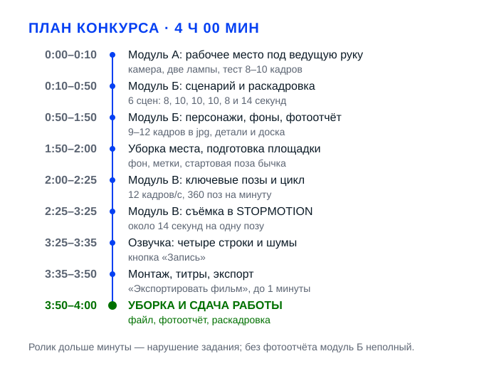
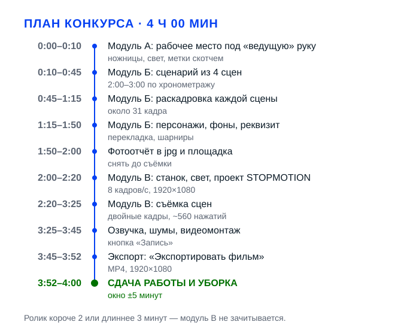
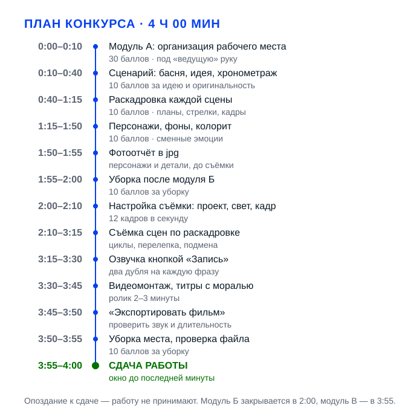

Мультипликация (Р)
Задания ниже — официальные файлы «Абилимпикс» (источник: abilympics-russia.ru), разложенные по категориям. Решения написаны по тексту задания, регламенту и критериям оценки; в них указано, что именно проверяет эксперт.
Школьник
14–16 лет, базовый уровень заданияВыдержка из официального конкурсного задания: страницы, относящиеся к категории «Школьник» (стр. 5–8 источника).
Пошаговое решение
Разбор официального конкурсного задания «Абилимпикс» 2026 для категории «Школьники». На все модули отводится 4 часа: 10 минут на организацию рабочего места, 1 час 50 минут на художественно-графическую часть и 2 часа на техническую. Задание — анимационный этюд не более одной минуты по мотивам стихотворения Агнии Барто: выбираете «Бычок», «Грузовик» или «Зайка», начинаете со строчек автора и придумываете собственный финал — трагикомичный, фантастический, дружественный или циклический. Техника на выбор: бумажная, пластилиновая или рисованная, анимация плоскостная или объёмная. Снимаете и монтируете в STOPMOTION, там же озвучиваете кнопкой «Запись» и экспортируете фильм. Ниже задание разложено на пять задач — от рабочего места до экспорта. Исход решают три вещи: успеваете ли снять 360 поз при 12 кадрах в секунду, читается ли финал и вовремя ли сданы файл, фотоотчёт и раскадровка.

Задача 1. Организовать рабочее место под ведущую рукуМодуль А · 10 минут
Десять минут модуля А — это не формальность перед началом работы, а единственный отрезок, когда можно спокойно поставить камеру, свет и разложить материалы. Дальше идут сто десять минут модуля Б и два часа модуля В, и любая перестановка в них стоит времени съёмки: пока вы двигаете лампу, кадры не снимаются, а их за минуту нужно ровно 720. Поэтому рабочее место собирается сразу и до конца, с учётом ведущей руки, потому что в графе результата модуля А это требование названо отдельно.
Действие 1.1. Разложить бокс по трём зонам
Шаг 1.1.1
Делим стол на три зоны, и деление привязываем к ведущей руке. Правше удобно так: слева от площадки — лоток с материалами (листы А4 и А3, цветные карандаши, фломастеры, ластик, простой карандаш, пластилин, ножницы), справа — оборудование (камера на держателе, лампа, ноутбук с STOPMOTION), по центру — съёмочная площадка размером не меньше листа А3. Левше всё зеркально: материалы справа, техника слева. Правило простое: рабочая рука, которой вы двигаете фигурки, не должна пересекать площадку, чтобы дотянуться до карандаша.
В графе результата модуля А в конкурсном задании стоит: рабочее место мультипликатора подготовлено в соответствии с инструкцией и требованиями охраны труда, с учётом ведущей руки. То есть проверяют не красоту раскладки, а то, что рука, которой вы анимируете, работает свободно. На практике это решает темп съёмки: каждый лишний разворот корпуса за инструментом — потерянные секунды, а их в модуле В около четырнадцати на одну позу.
Сядьте на рабочее место, положите обе руки на площадку и попробуйте, не вставая, дотянуться до карандаша, ластика и кнопки съёмки. Если для этого приходится вставать или поворачиваться всем корпусом, зоны стоят неверно — переставьте их сейчас, пока не начали снимать.
Типичная ошибка — сложить всё в одну кучу «чтобы было под рукой»: через десять минут карандаши оказываются под фонами, ластик теряется, а локоть при движении фигурки сдвигает декорацию, и сцена разваливается на середине. Вторая ошибка — поставить ноутбук так, что экран закрывает площадку: вы не видите, что попадает в кадр, и снимаете пустой угол.
Эксперт обходит боксы в начале модуля А и смотрит именно на расположение зон и на то, какой рукой участник работает с фигурками: зеркальная раскладка для левши отмечается отдельно как выполненное требование.
Шаг 1.1.2
Камеру ставим на держатель строго над площадкой, объективом вниз, на высоте 40–50 сантиметров от листа. Плоскостную перекладку снимают сверху под 90 градусов: тогда фигурки не заваливаются в перспективе и двигаются в плоскости кадра. Камеру выравниваем по уровню: включаем в приложении сетку и добиваемся, чтобы край листа А3 шёл параллельно рамке кадра. Зум не трогаем вообще — кадр набираем высотой держателя, потому что цифровой зум мылит контур, и на экспорте это видно.
Сетка и параллельные края — не педантизм: если камера стоит с наклоном, каждая переставленная фигурка будет казаться чуть больше или меньше, и в готовом ролике появится дрожание кадра, которое невозможно убрать монтажом. Задание требует, чтобы ролик раскрывал замысел стихотворения, а любой дребезг фона читается как небрежность и снимает впечатление от самого движения.
Сделайте один пробный кадр и посмотрите на него на экране: лист должен занимать кадр целиком или с ровными полями, вертикали и горизонтали параллельны рамке, резкость есть по всему полю, а не только в центре. Покачайте стол рукой: если картинка дрогнула, держатель стоит неустойчиво.
Самая частая ошибка — снимать с рук или с наклонённой камеры: к середине ролика площадка уезжает, а фигурки меняют размер. Вторая — выставить зум, чтобы фигурка казалась крупнее: контур становится рыхлым, и на большом экране видно, что резкость плавает.
Эксперт проверяет устойчивость камеры и параллельность кадра, а потом смотрит итоговый ролик: гуляющий кадр виден сразу, даже если движение персонажа сделано хорошо.
Шаг 1.1.3
Ставим две лампы по бокам от площадки под углом примерно 45 градусов и на одной высоте, чтобы тени от фигурок падали в две стороны и не превращались в чёрное пятно. Окно закрываем шторой: смешивать дневной свет с ламповым нельзя, у них разная цветовая температура, и фон будет менять оттенок от кадра к кадру. В приложении отключаем автоэкспозицию и автобаланс белого, если такая настройка есть: камера должна снимать одинаково все восемьдесят пять минут.
Мерцание цвета — главный враг стоп-моушена: глаз не замечает его на отдельном кадре, но в движении фон начинает дышать жёлтым и синим, и работа выглядит технически слабой. Ровный свет важен и для критерия визуализации движения: при плоском свете ноги бычка сливаются с доской, и шаг перестаёт читаться.
Снимите три кадра подряд с паузой в минуту и сравните их на экране: цвет фона и яркость должны совпадать. Тени от фигурок мягкие и серые, а не чёрные; на самой фигурке нет пересвета, блик не съедает глаз или рог.
Ошибка — оставить открытым окно: к вечеру свет уходит, и вторая половина ролика получается темнее первой. Ещё одна — поставить одну лампу в упор: тень от бычка уходит за край кадра, и кажется, что фигурка висит в воздухе.
Эксперт смотрит на площадку до начала съёмки: две лампы, закрытое окно, отсутствие бликов на листе. В готовом ролике он проверяет, одинакова ли яркость в начале и в конце.
Действие 1.2. Проверить оборудование и программу
Шаг 1.2.1
Открываем STOPMOTION и создаём новый проект до того, как на площадке что-то появилось. В настройках проекта ставим 12 кадров в секунду: при минуте ролика это 720 кадров и 360 поз, если каждую позу держать по два кадра. Разрешение выбираем такое, чтобы файл потом открывался на любом ноутбуке: 1280×720 достаточно, 1920×1080 лучше, если техника тянет. Проект называем по схеме «фамилия_бычок», чтобы на сдаче не искать файл среди чужих.
Частота кадров, выставленная до съёмки, определяет весь расчёт времени: при 12 кадрах в секунду минута — это 720 кадров, и вы заранее знаете, что на одну позу у вас примерно четырнадцать секунд. Если поменять частоту в конце, ролик либо станет короче минуты, либо движение поплывёт, а хронометраж в задании ограничен: не более одной минуты.
Посмотрите на настройки проекта: частота 12, разрешение задано, название проекта ваше. Снимите два тестовых кадра и нажмите Play — они должны проиграться как два кадра, а не как один. Если кадры в тесте идут как отдельные картинки с паузой, а не как движение, частота сбита — вернитесь в настройки проекта до первого кадра сцены.
Классика — начать снимать в проекте с настройками по умолчанию, а потом обнаружить, что там 5 или 30 кадров в секунду и минута превращается в четыре секунды или в три минуты. Переснять при этом ничего нельзя, придётся менять частоту и терять ритм.
Эксперт может заглянуть в настройки проекта при приёмке работы: правильно выставленная частота кадров — признак того, что участник понимает, как устроена анимация, а не просто щёлкает затвор.
Шаг 1.2.2
Пока площадка пустая, снимаем 8–10 тестовых кадров: кладём на лист одну фигурку, двигаем её на сантиметр и жмём затвор. Затем смотрим тест через Play и проверяем три вещи: резкость, ровность света, отсутствие сдвига фона. Тестовые кадры потом удаляем, чтобы они не попали в ролик. Снимаем при том же свете, что и будущий ролик, и с той же высоты камеры: тест должен повторять условия съёмки, иначе он ничего не проверяет.
Эти десять кадров экономят полчаса: если камера стоит криво или тень от лампы режет кадр, вы узнаете об этом сейчас, а не после съёмки первой сцены. Проверка оборудования до работы прямо относится к организации рабочего места по требованиям охраны труда: техника должна быть проверена, а не запущена наугад.
На тесте фигурка двигается плавно, фон не дрожит, резкость одинаковая в начале и в конце. При увеличении кадра до 100 процентов контур фигурки чистый, без цветной каймы по краю. Если контур обведён, а кайма осталась, значит, цвет обводки светлее заливки — возьмите фломастер на тон темнее.
Пропустить тест и начать сразу с первой сцены: через сорок минут выясняется, что в кадр попадает край стола, и всю сцену надо переснимать. Второй вариант — забить тестовыми кадрами таймлайн и забыть их удалить: в ролик попадают лишние секунды с пустым листом.
Наблюдает, тестирует ли участник оборудование до съёмки; отсутствие теста обычно видно по первой сцене — она заметно хуже остальных по свету и кадрированию.
Шаг 1.2.3
Проверяем то, что относится к охране труда: ножницы лежат закрытыми и кольцами к себе, провода от ламп и камеры убраны за край стола и не лежат на проходе, пластилин хранится в коробке, а не размазан по столу. Сидим так, чтобы спина была прямой, а глаза находились на 50–60 сантиметров от экрана. Каждые двадцать минут съёмки делаем паузу на десять секунд и смотрим вдаль: это способ не потерять резкость зрения к концу модуля.
Организация рабочего места — отдельный модуль с отдельным результатом в конкурсном задании, и нарушения требований охраны труда фиксируются независимо от качества ролика. Кроме того, разбросанные провода — реальный риск: задеть ногой удлинитель и уронить камеру можно за секунду, а восстановить то положение камеры, от которого зависит вся съёмка, уже не получится.
Пройдите по чек-листу: ножницы закрыты, провода убраны, рядом с техникой нет открытых ёмкостей с водой, посадка ровная, экран на расстоянии вытянутой руки. Если что-то не так — исправьте до первого кадра.
Оставить ножницы открытыми на площадке: при перекладке фона легко задеть лезвие, и это уже травма, а не минус балл. Вторая ошибка — сидеть скрючившись над камерой сорок минут: к середине модуля В спина и шея начинают болеть, и точность движений падает вместе с темпом.
Эксперт и технический специалист смотрят на безопасность в начале и в течение всей работы: открытые ножницы, провода на полу и еда на рабочем столе фиксируются отдельно.
Задача 2. Придумать сценарий и раскадровкуМодуль Б · 40 минут из 110
Полтора часа модуля Б делятся примерно так: сорок минут на сценарий и раскадровку, шестьдесят на персонажей, фоны и фотоотчёт, десять на уборку и подготовку съёмочной площадки. В задании сказано: ролик не более минуты, начинается со строчек стихотворения, но предлагает свой оригинальный финал. Сорок минут — это ровно столько, чтобы получить документ, по которому потом можно снимать, не придумывая движение на ходу. Если сценарий не готов к концу этих сорока минут, дальше начинается импровизация, и она всегда стоит кадров.
Действие 2.1. Выбрать стихотворение, финал и хронометраж
Шаг 2.1.1
Из трёх предложенных стихотворений — «Бычок», «Грузовик», «Зайка» — выбираем то, у которого в тексте есть готовое физическое действие, которое можно показать движением. У «Бычка» действие встроено в сам текст: идёт, качается, вздыхает, доска кончается, — и четыре строки дают готовую раскадровку, не требуя придумывать сюжет с нуля. Выписываем текст на лист А4 крупно и рядом ставим глаголы: идёт, вздыхает, кончается, упадёт. Именно эти глаголы станут сценами.
Критерий модуля В звучит так: работа должна раскрывать замысел выбранного стихотворения. Значит, эксперт будет сверять ролик с текстом: если в стихотворении бычок идёт по доске, а в ролике он сидит, замысел не раскрыт. «Бычок» выигрывает ещё и по хронометражу: четыре строки на минуту дают ровный темп без воды, тогда как сюжетные стихи требуют больше сцен, чем помещается в 720 кадров.
На листе выписаны все строки и рядом столбик глаголов действия. Проверьте: у каждого глагола есть место в будущем ролике? Если какой-то глагол показать нечем, стихотворение выбрано неудачно или вы не нашли ему сцену.
Выбрать «Зайку» и обнаружить, что весь текст — это диалог и переживание, а показать нужно движение: получается статичная сцена, где ничего не происходит. Вторая ошибка — взять стихотворение, которое участник плохо помнит, и воспроизводить текст по памяти: в ролике появятся строчки, которых в стихотворении нет.
Эксперт сверяет ролик с исходным текстом при просмотре, и выбор стихотворения для него не важен — важно, узнаётся ли текст и раскрыто ли его действие.
Шаг 2.1.2
Определяем тип финала из четырёх предложенных: трагикомичный, фантастический, дружественный или циклический. Для «Бычка» удобнее дружественный: доска не обрывается в пустоту, а продолжается — её подставляет второй персонаж или она оказывается мостиком через лужу, и бычок спокойно переходит. Проговариваем финал одной фразой, записываем её в верхнюю часть листа и дальше проверяем каждую сцену вопросом: она ведёт к этой фразе? Если нет — сцена лишняя.
В задании прямо сказано: ролик начинается со строчек стихотворения, но предлагает свой оригинальный финал. Оригинальность здесь оценивается не как неожиданность ради неожиданности, а как законченность: у ролика должна быть точка, а не обрыв. Финал, выбранный до раскадровки, экономит время в модуле Б: вы не перебираете варианты на середине, когда половина сцен уже нарисована.
Финал сформулирован одной фразой, и в нём видно действие, а не настроение: не «бычку становится хорошо», а «второй бычок подставляет доску, и герой переходит лужу». Если фразу нельзя нарисовать, она не годится.
Придумывать финал в последний момент, уже во время съёмки: обычно он сводится к тому, что бычок просто падает, — это трагикомический вариант, но он повторяет текст и не добавляет ничего своего. Другая ошибка — финал с моралью на пять секунд, который не влезает в хронометраж и съедает кульминацию.
Эксперт смотрит ролик целиком и отмечает, есть ли в нём собственное решение: финал, который повторяет последнюю строчку, оригинальным не считается. Собственное решение он ищет в последних секундах, поэтому финал не должен быть пересказом начала.
Шаг 2.1.3
Раскладываем минуту на шесть сцен: 8, 10, 10, 10, 8 и 14 секунд — общий план доски, выход бычка, качание, вздох с крупным планом ног, край доски и финал. В таблице на листе А4 пять колонок: номер сцены, что происходит, сколько секунд, план (общий, средний, крупный), что слышно. Десять секунд при 12 кадрах в секунду — это 120 кадров, то есть 60 поз, если держать каждую по два кадра; в сумме по шести сценам выходит ровно 360 поз на минуту.
Хронометраж — единственная защита от того, чтобы не снять сорок секунд материала и не обнаружить, что до минуты не хватает двадцати, а сцен больше нет. Таблица превращает сценарий в производственный план: по ней видно, где можно сэкономить на позах (статичный общий план), а где экономить нельзя (качание и финал).
Сложите секунды по таблице: должно выйти ровно 60, без плюс-минус. Проверьте, что в каждой сцене есть движение; если сцена держится только на статике дольше четырёх секунд, она будет выглядеть как стоп-кадр.
Планировать на глаз и в конце обнаружить, что ролик идёт 1 минуту 25 секунд: задание ограничивает минуту, и обрезать придётся кульминацию, а не титры. Вторая ошибка — сделать все шесть сцен динамичными: при двойках на каждую позу уходит около минуты работы, и вы не успеете снять всё до конца модуля В.
Эксперт смотрит сценарий и раскадровку как документ: важно, чтобы секунды в таблице совпадали с тем, что реально снято, — расхождение видно при просмотре.
Действие 2.2. Написать сценарий
Шаг 2.2.1
Сценарий пишем на листе А4 по шаблону: сверху три строки — место действия, действующие лица, время действия. Для «Бычка» это выглядит так: место — деревенский двор, доска между двумя кирпичами, за доской лужа; действующие лица — бычок и второй бычок, который появляется в финале; время — день. Ниже идёт таблица сцен из предыдущего шага, а под ней отдельный блок «Слова за кадром» и блок «Шумы».
В графе результата модуля Б прямо перечислено, что должен описывать сценарий: место действия, действующих лиц, происходящие действия, диалоги, слова за кадром. Это чек-лист, по которому эксперт смотрит документ, и если в шапке нет места действия, пункт формально не выполнен, даже когда раскадровка хорошая.
В шапке заполнены все три строки, и в каждой есть конкретика: не «двор», а «двор, доска на кирпичах, лужа за доской». Действующие лица перечислены по именам, а не словом «персонажи». Блоки «Слова за кадром» и «Шумы» заполнены отдельно: текст стихотворения не смешан с репликами персонажей.
Написать сценарий сплошным текстом без шапки: читать его неудобно, а эксперт ищет именно перечисленные в задании элементы и не находит их с первого взгляда. Вторая ошибка — указать в действующих лицах персонажа, которого нет в раскадровке.
Документ оценивают до просмотра ролика, поэтому эксперт читает шапку внимательно: наличие всех четырёх элементов — место, лица, действия, слова за кадром — прямой пункт критерия.
Шаг 2.2.2
В таблице для каждой сцены описываем действие в одном-двух предложениях, в настоящем времени и через глаголы: «бычок выходит на доску, делает два шага, доска прогибается». Отдельно отмечаем, что делает камера: стоит, приближается, уходит на крупный план. Если в сцене есть реплика, она записывается в колонку «слышно» дословно, вместе с паузой перед ней.
Описание действия через глаголы нужно не для красоты: по нему в модуле В сразу видно, сколько поз требуется в сцене. Сцена «бычок стоит» — это три позы, сцена «бычок идёт и качается» — шестьдесят, и путать их в плане нельзя, иначе хронометраж съёмки разваливается на второй сцене.
В каждой строке таблицы есть глагол движения и указание плана. Прочитайте таблицу вслух: если сцену можно представить, не глядя на рисунки, она описана достаточно. И проверьте, что в колонке «слышно» нет пустых строк там, где по сценарию идёт текст за кадром.
Писать «бычок грустит» вместо действия: настроение нельзя снять перекладкой, и в модуле В вы будете придумывать движение на ходу, теряя время. Вторая ошибка — не указывать план: половина сцен снимается общим планом, и ролик получается плоским.
Сверяет сценарий с раскадровкой: если в тексте сцена описана как крупный план, а на рисунке общий, документ считается несогласованным. Документ он читает до ролика, поэтому расхождение планов в тексте и на рисунках он ещё и запомнит.
Шаг 2.2.3
Четыре строки стихотворения распределяем по сценам и записываем в блок «Слова за кадром» с указанием секунд: «Идёт бычок, качается» — с 3-й по 8-ю секунду, «Вздыхает на ходу» — с 9-й по 14-ю, «Ох, доска кончается» — на крупном плане, «Сейчас я упаду!» — на моменте, когда нога повисает. Решаем, кто читает: сам участник, второй голос или запись, сделанная заранее. Реплики персонажей, если они есть, выносим отдельно и помечаем как диалог.
Слова за кадром — отдельный пункт критерия, и именно они связывают ролик со стихотворением: эксперт слышит текст и понимает, что замысел раскрыт. Разметка по секундам нужна ещё и потому, что озвучивать вы будете после съёмки, под готовый таймлайн, и без разметки голос поедет относительно движения.
Все четыре строки распределены по секундам, ни одна не потерялась и не повторяется дважды. При чтении вслух текст укладывается в отведённые секунды; если строка не влезает, темп чтения надо ускорить или отдать её другому голосу.
Оставить озвучку на потом: в модуле В на запись остаётся десять минут, и вы будете читать текст, подгоняя его под картинку на слух, — обычно это заканчивается тем, что последняя строка обрывается на середине.
При просмотре эксперт слушает именно текст: совпадение произносимого с текстом стихотворения и попадание в кадр — прямой признак раскрытого замысла. Если текста за кадром не слышно, работа считается неозвученной, даже когда картинка сделана хорошо.
Действие 2.3. Нарисовать раскадровку
Шаг 2.3.1
Берём шесть листов А4 и рисуем на каждом рамку кадра с соотношением 16:9, например 16 сантиметров на 9. Внутри рамки простым карандашом набрасываем композицию сцены: где стоит доска, где бычок, что попадает в кадр из фона. Рисунок должен быть быстрым, линией в один-два миллиметра, без штриховки и раскраски: это схема, а не картина. Рамку чертим по линейке, отступая от края листа два сантиметра, чтобы было где подписать номер сцены.
Раскадровка каждой из сцен — отдельная строка результата модуля Б. Нужна она не эксперту, а вам: при съёмке вы будете смотреть на неё и понимать, куда двигать фигурку, вместо того чтобы каждый раз вспоминать замысел. Формат рамки важен потому, что камера снимает именно 16:9, и композиция, нарисованная во весь лист, в кадр не попадёт.
На всех шести листах рамка одного размера, сцена читается с первого взгляда, есть подпись с номером и секундами. Сравните рамку с тем, что видит камера на пробном кадре, — пропорции должны совпадать. Подписи читаются без наклона листа, а рамки всех шести листов стоят на одной высоте.
Рисовать раскадровку красиво, с раскраской и штриховкой: на это уходит двадцать минут из сорока, а в модуле В рисунки всё равно не используются. Вторая ошибка — рисовать без рамки: половина композиций не влезает в кадр, и при съёмке приходится двигать декорации.
Раскадровка оценивается как документ: наличие всех сцен, читаемость композиции и соответствие сценарию. Красота рисунка не оценивается. Отдельно он смотрит, есть ли в раскадровке крупные планы: работа только на общем плане читается хуже.
Шаг 2.3.2
На каждой рамке дорисовываем стрелками, что и куда движется: стрелка от бычка показывает направление шага, дуга у доски — её прогиб, стрелка у края кадра — движение камеры или подмену фона. Рядом ставим цифру длительности сцены в секундах и количество поз, например «10 с / 60 поз». Там, где движение циклическое, рисуем круговую стрелку и пишем «цикл 8 поз».
Стрелки превращают рисунок в инструкцию для рук: в модуле В вы будете смотреть на раскадровку и сразу видеть, в какую сторону идёт движение. Без этого на съёмке легко перепутать направление, и бычок пойдёт спиной вперёд — ошибку видно сразу, а исправляется она только пересъёмкой сцены.
На каждой рамке есть хотя бы одна стрелка движения и подпись с секундами и позами. Сумма поз по всем шести рамкам — 360. Если сумма получилась больше, ищите сцену с лишними позами, а если меньше — сцену, где движение не разложено до конца, и пересчитайте её до съёмки.
Нарисовать только композицию без движения: раскадровка превращается в набор картинок, и в модуле В приходится додумывать, как именно качается бычок. Вторая ошибка — нарисовать стрелку в одну сторону, а снимать в другую: направление потом не исправить монтажом без потери качества.
Смотрит на раскадровку вместе с роликом: совпадение композиции и направления движения с рисунком отмечается как точность реализации замысла. Направление стрелок он сверяет с роликом глазами: если бычок идёт против стрелки, это заметно без приборов.
Шаг 2.3.3
Раскладываем шесть листов по порядку и проходим по ним пальцем, как по плёнке: от первой сцены до финала. Проверяем три вещи: ни одна сцена не выпадает из логики, хронометраж в сумме даёт 60 секунд, каждая сцена ведёт к фразе-финалу. Затем нумеруем листы в правом верхнем углу, подписываем сценарий фамилией и убираем документы в прозрачный файл, чтобы не потерять во время работы.
Сценарий и раскадровка — это результат модуля Б, и он сдаётся как документ: если листы лежат в куче, эксперт не увидит ни нумерации, ни логики. Прогон пальцем по плёнке занимает три минуты и ловит главную ошибку — лишнюю или недостающую сцену, которую при съёмке уже не исправить.
Листы пронумерованы, сценарий подписан, сумма секунд равна 60, финал совпадает с записанной фразой. Пройдите по раскадровке и попробуйте рассказать ролик вслух за минуту: если рассказ сбивается, сцены стоят не в том порядке.
Сдать документы как есть, без нумерации: при съёмке листы перепутаются, и вы снимете сцены не по порядку, а потом будете разбираться в таймлайне. Вторая ошибка — не сверить сумму секунд и обнаружить расхождение уже на монтаже.
Проверяет комплектность документов модуля Б: сценарий с четырьмя элементами и раскадровка по каждой сцене. Отсутствие одного из листов — потеря по критерию, даже если ролик хороший.
Задача 3. Сделать персонажей, фоны и фотоотчётМодуль Б · 60 минут + 10 на уборку
Шестьдесят минут на персонажей и фоны — самый материалоёмкий отрезок модуля Б. Нужно успеть сделать бычка с подвижными ногами и сменными головами, второго персонажа для финала, доску с опорами в двух вариантах, фон двора и запасные детали для фаз движения. Выбор техники здесь решает, сколько вы успеете: бумажная перекладка на 360 поз реальна, рисованная анимация на те же 360 поз — нет, потому что это 360 отдельных рисунков. Ниже — порядок, при котором к концу отрезка на площадке лежит всё необходимое, а фотоотчёт уже снят.
Действие 3.1. Выбрать технику, размер и колорит
Шаг 3.1.1
Выбираем из трёх техник, названных в задании: бумажная, пластилиновая, рисованная. Для шестидесяти минут самым реалистичным остаётся бумажная перекладка: фигурка собирается из вырезанных деталей, и одна и та же деталь используется во всех сценах. Пластилин даёт объём и перелепку, но на шесть сцен из него нужно слепить и запасные детали, а рисованная анимация требует 360 отдельных рисунков. Если выбираете пластилин, сократите число сцен до четырёх и пересчитайте хронометраж до съёмки.
Техника определяет объём работы: 360 поз в рисованной анимации — это 360 рисунков, и их физически не сделать за отведённое время, тогда как в перекладке одна деталь двигается шестьдесят раз. Задание разрешает все три техники, поэтому выбор — часть стратегии, а не вкуса, и он должен быть сделан до первого вырезанного листа.
Решение записано на листе: техника, вид анимации (плоскостная или объёмная), число сцен. Проверьте расчёт: 360 поз при выбранной технике — это сколько деталей надо изготовить? Если больше сорока, техника выбрана слишком трудоёмкая.
Выбрать рисованную анимацию из любви к рисунку: к концу модуля Б готово двадцать рисунков из трёхсот шестидесяти, и ролик снимать не из чего. Обратная ошибка — взять пластилин и слепить одного бычка без запасных деталей: в сцене падения перелепить его нечем.
Эксперт смотрит, соответствует ли изготовленное заявленной технике, и оценивает владение приёмами: перекладка, перелепка и подмена должны быть видны в ролике.
Шаг 3.1.2
Определяем размер персонажа под кадр: если площадка — лист А3 шириной 42 сантиметра, а кадр занимает её целиком, то бычок высотой 8–10 сантиметров займёт примерно четверть кадра по высоте. Этого достаточно, чтобы читались ноги и голова, но остаётся место для доски и фона. Пропорции берём мультяшные: голова — треть высоты, туловище — половина, ноги короткие и толстые, потому что именно на ногах держится всё качание. Рисуем шаблон на бумаге, вырезаем и прикладываем к площадке до раскроя.
Размер, ракурс и пропорции названы в задании как то, что нужно определить при создании персонажей. Практический смысл простой: слишком мелкий персонаж теряет детали, и качание не читается; слишком крупный не оставляет места для доски, и в кадре нет пространства, куда падать.
Вырезанный шаблон лежит на площадке рядом с доской: бычок выше доски в два-три раза, но не больше трети высоты кадра, ноги видны полностью, голова не упирается в верхний край. Положите рядом с шаблоном доску: если бычок ниже неё, он не сможет на неё встать, и размер надо увеличивать.
Нарисовать персонажа во весь лист: в кадре он занимает всё место, фона нет, и сцена выглядит как портрет вместо движения. Вторая ошибка — сделать бычка крошечным: на экспорте в 720p его ноги превращаются в две точки, и качание не видно.
Смотрит на соотношение персонажа и кадра в готовом ролике: если персонаж плавает по размеру между сценами, это считается ошибкой пропорций. Размер персонажа он проверяет по фотоотчёту: на снимках рядом с доской видно, совпадает ли он с задуманным.
Шаг 3.1.3
Определяем палитру до раскраски: три-четыре цвета плюс белый. Фон делаем приглушённым — светло-зелёное поле, серо-голубое небо, коричневая доска, — а бычка решаем контрастно: тёплый рыжий или белый с чёрными пятнами. Проверяем палитру на черновике: раскрашиваем маленький квадратик каждого цвета и смотрим, какой из них выпрыгивает. Персонаж должен выпрыгивать, фон — нет.
Колористическое решение названо в задании отдельно, и оценивается оно по читаемости: если бычок по тону совпадает с фоном, его силуэт теряется, и движение не видно. Контраст персонажа и фона — техническая необходимость, а не украшение: ролик смотрят на экране, где часть деталей всегда пропадает.
Посмотрите на раскрашенный черновик издалека, прищурившись: силуэт бычка должен читаться, а фон расплываться в пятно. Если наоборот, меняйте тон фона, а не персонажа. И проверьте палитру на экране камеры, а не только на бумаге: камера делает тёплые цвета темнее.
Раскрасить фон насыщенными цветами, чтобы было красиво: персонаж растворяется, и в движении видно только мельтешение. Вторая ошибка — использовать десять оттенков: в перекладке это значит десять карандашей и постоянный поиск нужного во время съёмки.
Оценивает колористическое решение по ролику: контраст персонажа и фона, единство палитры во всех сценах, отсутствие выпадающих цветов. Если в ролике фон одной сцены теплее, чем в другой, значит, палитра собиралась на ходу, и это видно при просмотре подряд.
Действие 3.2. Изготовить бычка и сменные детали
Шаг 3.2.1
Собираем бычка из отдельных деталей: туловище, голова, четыре ноги, хвост, уши и рога. Каждую деталь обводим по шаблону, вырезаем с припуском в один миллиметр и раскрашиваем до сборки: раскрашивать собранную фигурку неудобно, края смазываются. Соединяем детали так, чтобы они поворачивались: в месте плеча и бедра прокалываем отверстие и вставляем маленький кусочек пластилина, он работает как шарнир и держит деталь, не давая ей провисать.
Подвижные шарниры — то, что отличает анимацию от аппликации: если ноги приклеены намертво, бычок может только ездить по площадке, и качание придётся имитировать наклоном всего тела. Задание требует перемещать части анимируемых персонажей для создания движения и выразительных поз, то есть подвижность деталей — обязательное условие, а не улучшение.
Возьмите фигурку за туловище и поверните ногу: она должна двигаться с небольшим усилием и оставаться в заданном положении, а не падать под собственным весом. Проверьте все четыре ноги и голову — каждая деталь должна держать позу.
Склеить фигурку намертво и потом пытаться согнуть: бумага ломается, и вместо шарнира получается рваная деталь. Вторая ошибка — сделать шарнир слишком тугим: при перестановке фигурка смещается целиком, и вместо шага получается рывок.
Эксперт смотрит на фигурку в руках участника и в ролике: подвижность деталей и качество соединений видны и по движению, и по фотоотчёту. Отдельно он смотрит на шарниры в движении: если нога при шаге отрывается от туловища, фигурка считается недоделанной.
Шаг 3.2.2
Делаем комплект сменных деталей для фаз: две пары ног в разных положениях (шаг и упор), голову с открытым ртом для вздоха, голову с закрытыми глазами для испуга и вторую голову чуть меньшего размера для сцены, где бычок отходит вдаль. Все детали складываем в лоток и подписываем карандашом на обороте: «ноги-шаг», «голова-вздох». Детали одной серии должны быть одного цвета и размера, иначе при подмене виден скачок.
Подмена объекта — один из приёмов, названных в задании, и он работает только тогда, когда подменяемые детали совпадают по виду. Сменные ноги позволяют за одну перестановку получить выразительную позу вместо трёх промежуточных, а это прямая экономия времени: в модуле В на позу отведено около четырнадцати секунд.
Разложите детали по группам и сравните: ноги из одной группы совпадают по длине и толщине, головы — по размеру и цвету. Приложите сменную деталь к фигурке на площадке: зазор не больше миллиметра. И проверьте, что детали не слипаются в лотке: пластилиновый шарнир прилипает к бумаге и рвёт её при вынимании.
Сделать одну пару ног и двигать только её: шаг получается одинаковым во всех сценах, и персонаж идёт как робот. Вторая ошибка — нарисовать детали разным цветом или толщиной: подмена читается как рывок и пугает зрителя.
Смотрит на плавность подмены в ролике: если деталь прыгает, эксперт понимает, что комплект сделан небрежно. Отдельно он ищет в ролике момент подмены и оценивает, заметен ли он: если зритель видит смену детали, приём не засчитывается.
Шаг 3.2.3
Для головы делаем три варианта глаз и бровей: спокойные, испуганные (брови вверх, зрачки вниз) и довольные в финале (глаза дугой). Проще всего рисовать глаза отдельно на маленьких бумажках и подкладывать их под голову с вырезанным окном: тогда мимика меняется за секунду, без перерисовки. Если работаете в пластилине, глаза лепим из двух шариков и перелепливаем форму брови пальцем.
Мимика — самый дешёвый способ показать эмоцию: четыре строки Барто держатся на вздохе и испуге, и если лицо не меняется, стихотворение теряет смысл. Кроме того, смена выражения читается как владение принципами анимации и отличает работу, где персонаж просто перемещается, от работы, где он действует.
Подставьте каждый вариант глаз под голову на площадке и посмотрите в камеру: с расстояния съёмки выражение должно читаться без увеличения. Если глаз не видно, увеличьте деталь или усильте контраст. Если при подстановке глаз остаётся белая полоска бумаги, подрежьте деталь на миллиметр — она не должна выходить за контур головы.
Нарисовать одно лицо на все сцены: вздох и испуг выглядят одинаково, и эксперт не видит развития. Вторая ошибка — сделать глаза слишком мелкими: на экране они превращаются в две точки. Ещё одна ошибка — нарисовать брови поверх глаз так, что при смене варианта они остаются прежними: лицо не меняется, и мимика не читается.
Отмечает, есть ли у персонажа мимика и меняется ли она по ходу ролика: это входит в оценку техники исполнения. Мимику он смотрит в паузах: именно там видно, меняется ли выражение лица или персонаж всё время одинаков.
Шаг 3.2.4
Ставим готового бычка на площадку и делаем три пробных кадра: общий план, средний и крупный. Смотрим не на фигурку, а на экран: читается ли силуэт, не пропадают ли ноги на фоне доски, нет ли белого ореола от бумаги по контуру. Если контур светится, обводим деталь по краю тонким фломастером того же цвета, что и заливка, — это убирает белую кромку. Заодно проверяем, не попадает ли в кадр край лотка с материалами: он читается как посторонний предмет.
Фигурка, которая хорошо выглядит в руках, на экране может потеряться: камера сжимает динамический диапазон, и светлая бумага на светлом фоне сливается. Проверка на камеру до начала съёмки экономит пересъёмку всей сцены и заодно закрывает требование фотоотчёта: эти же кадры пойдут в отчёт.
На трёх пробных кадрах силуэт читается, ноги видны на фоне доски, ореола нет. Посмотрите кадр в масштабе 100 процентов: линия контура ровная, без зазубрин от ножниц. И посмотрите на пробный кадр с расстояния метра: если силуэт не узнаётся, значит, контраст слабый, а не камера виновата.
Проверять фигурку только глазами, без камеры: на съёмке выясняется, что белая бумага на белом фоне даёт призрак. Вторая ошибка — не убрать зазубрины от ножниц: при увеличении они выглядят как грязь по краю.
Смотрит на качество изготовления по фотоотчёту и по ролику: чистый контур и читаемый силуэт — признак аккуратной работы. По фотоотчёту он видит и обратную сторону деталей: подклейка, неровный край и следы клея считаются небрежностью.
Действие 3.3. Нарисовать фоны и сделать реквизит
Шаг 3.3.1
Фон рисуем на листе А3 и делим его на три плана: дальний — небо и полоска поля, средний — забор или кусты, передний — трава и лужа. Дальний план делаем бледнее, передний — насыщеннее: так в плоской перекладке появляется глубина. Фон не закрашиваем до самого края листа: оставляем поля по два сантиметра, чтобы лист не уезжал под камерой. Небо закрашиваем широкими штрихами, а траву короткими, чтобы фактура читалась даже на общем плане.
Фон — не декорация, а система координат: по нему видно, движется ли бычок или стоит на месте. Три плана разной насыщенности дают ощущение пространства без перспективы, что важно для плоскостной анимации, где нет объёма. Кроме того, фоны для каждой сцены — отдельная строка результата модуля Б.
Положите фон на площадку и посмотрите в камеру: дальний план светлее переднего, лужа на своём месте, поля не обрезаны. Бычок, поставленный на передний план, не сливается с травой. И проверьте, что линия горизонта на одном уровне во всех фонах: если она прыгает, сцены выглядят снятыми в разных местах.
Нарисовать фон одним тоном и без планов: кадр становится плоским, и движение читается хуже. Вторая ошибка — закрасить лист до самого края: под камерой видно, что фон обрезан, и кадр выглядит как обрывок.
Оценивает фоны по ролику: наличие планов, единство стиля с персонажем, отсутствие пустых участков кадра. Отдельно он смотрит, не пустует ли верхняя треть кадра: пустое небо без облака или птицы делает кадр мёртвым.
Шаг 3.3.2
Доску делаем из полоски плотной бумаги длиной 20–25 сантиметров и шириной 3 сантиметра, раскрашиваем под дерево. Опоры — два пластилиновых бруска или два бумажных кубика высотой 2 сантиметра: они должны стоять устойчиво и не сдвигаться при перестановке фигурки. Для сцены прогиба делаем второй вариант доски — с изгибом, вырезанным по дуге, и подменяем его в нужный момент.
Доска в этом стихотворении второй персонаж: она прогибается и кончается, и от неё зависит весь конфликт. Два варианта доски дают прогиб за одну подмену, без перегибания бумаги на площадке, которое неизбежно сдвигает фигурку и ломает кадр. Плюс экономия времени: перегибать бумагу на площадке — это минута на каждую сцену, а подмена занимает три кадра.
Поставьте доску на опоры и нажмите на середину пальцем: она должна пружинить, но не сминаться. Подменный вариант с изгибом совпадает по длине и цвету с прямым — приложите их друг к другу. И нажмите на край доски: она не должна опрокидываться, иначе в сцене падения она упадёт раньше бычка.
Сделать доску из тонкой бумаги: она провисает под весом фигурки ещё до съёмки, и прогиб не управляется. Вторая ошибка — поставить опоры на скользкую поверхность: при каждом касании они разъезжаются, и доска уезжает из кадра.
Смотрит, работает ли доска как элемент движения: прогиб и подмена должны быть видны в ролике, а не остаться на словах. На фотоотчёте он видит оба варианта доски рядом: если они различаются цветом, подмена в ролике будет заметна.
Шаг 3.3.3
Перед съёмкой наносим на площадку метки: угол листа А3 обводим карандашом, положение опор отмечаем двумя точками, место бычка в начале каждой сцены — маленьким крестиком. Метки делаем светлым карандашом, чтобы их не было видно в кадре, но было видно вам. При смене фона ориентируемся по уголкам: лист кладём в те же обводы, иначе фон сдвинется на сантиметр и в ролике будет скачок.
Сдвиг фона между сценами — самая частая техническая ошибка в перекладке: глаз сразу видит, что мир дёрнулся, и это разрушает впечатление сильнее, чем шероховатости движения. Метки стоят две минуты работы и снимают риск пересъёмки целой сцены. Кроме того, метки нужны при возврате к сцене: если придётся переснять кадр, вы поставите фигурку в то же место.
Переложите фон дважды и сравните кадры до и после: уголки листа совпадают с обводами, опоры стоят на точках, линия горизонта на той же высоте. Разница в пределах миллиметра считается нормой. Проверьте метки на камере: при увеличении до 100 процентов их не должно быть видно на фоне.
Класть фон на глаз: к третьей сцене он уезжает вверх, и в ролике появляется полоса стола. Вторая ошибка — делать метки ярким маркером: они попадают в кадр и выглядят как грязь. Третья ошибка — стирать метки ластиком между сценами: вместе с ними уходит привязка, и фон снова встаёт на глаз.
При просмотре обращает внимание на стабильность фона между сценами: скачки читаются как техническая небрежность. Стабильность фона он проверяет на стыках сцен: даже сдвиг в два миллиметра виден как рывок.
Действие 3.4. Снять фотоотчёт и подготовить площадку
Шаг 3.4.1
Фотографируем результат модуля Б по списку: бычок целиком спереди и в профиль, отдельно комплект сменных ног и голов, второй персонаж для финала, доска в двух вариантах, каждый фон по одному кадру, общий вид площадки. Всего получается 9–12 кадров. Снимаем при том же свете, что и анимацию, с расстояния 30–40 сантиметров, чтобы детали были видны. Фотографируем до начала съёмки, пока детали целые и не испачканы пластилиновыми пальцами.
В графе результата модуля Б прямо написано: выполнен фотоотчёт в формате jpg о созданных персонажах и деталях к мультфильму. Это отдельный пункт, и без него модуль считается неполным независимо от качества ролика. Фотографии нужны и вам: если деталь порвётся во время съёмки, по фото видно, как она была устроена.
На фото виден весь персонаж, не обрезаны ноги и рога, детали в фокусе, свет ровный. Откройте файл на компьютере: расширение jpg, размер не меньше 1000 пикселей по длинной стороне. Проверьте и цвет: на фото фон должен быть того же оттенка, что на площадке, иначе решат, что снято при другом свете.
Сделать одно общее фото «всё вместе»: эксперт не увидит ни деталей, ни вариантов, и пункт фотоотчёта закрыт формально. Вторая ошибка — снять при жёлтой лампе: цвета на фото не совпадают с оригиналом, и работа выглядит иначе, чем на самом деле.
Фотоотчёт смотрит как отдельный результат: количество и полнота кадров, читаемость деталей, соответствие тому, что видно в ролике. Отдельно он сверяет фото с роликом: если на снимках персонаж есть, а в кадре его нет, отчёт считается формальным.
Шаг 3.4.2
Складываем фотографии в папку с названием проекта и нумеруем по порядку: «01_бычок_спереди.jpg», «02_бычок_профиль.jpg» и так далее. Папку сохраняем на рабочий стол и вторую копию — на флешку, если она есть. Отдельно проверяем, что фото открываются: двойной щелчок по файлу должен показать картинку, а не запрос программы. Если камера дала формат heic или png, конвертируем в jpg сразу: переименовать расширение недостаточно, файл от этого не станет jpg.
Файлы, которые не открываются, — это отсутствующий результат: эксперт не будет разбираться, почему формат не тот. Нумерация нужна для быстрой сдачи: в конце конкурса времени на разбор папки нет, а названный по порядку отчёт сдаётся за минуту. К тому же копия на флешке спасает, если на рабочем ноутбуке перед сдачей произойдёт сбой или папка закроется с ошибкой.
В папке 9–12 файлов jpg, все открываются, названия по порядку. Проверьте размер файлов: если каждый весит меньше 50 килобайт, скорее всего это превью, а не полноразмерные снимки. И откройте один файл на другом устройстве: так видно, не потерялись ли цвета при сохранении.
Сохранить фото в формате, который не открывается на ноутбуке эксперта: результат считается несданным. Вторая ошибка — оставить файлы с названиями вида «IMG_2034» в общей куче загрузок: на сдаче вы будете искать нужный снимок дольше, чем длится приёмка.
При приёмке открывает папку и пролистывает файлы: важна и комплектность, и то, что всё открывается без вопросов. Отдельно он отмечает, подписана ли папка фамилией: обезличенный набор файлов теряется при приёмке.
Шаг 3.4.3
Освобождаем площадку: убираем с листа обрезки бумаги, крошки пластилина и карандашную стружку, потому что каждая соринка попадёт в кадр и будет прыгать между кадрами. Ставим на площадку фон первой сцены, бычка в стартовую позу, доску на опоры и делаем контрольный кадр. Остальные материалы убираем в лоток за пределы кадра, но в пределах вытянутой руки: в модуле В их доставать придётся постоянно.
Уборка рабочего места и подготовка съёмочной площадки — отдельная строка модуля Б. Кроме того, чистая площадка даёт чистое движение: соринка, лежащая на фоне, при каждой перестановке чуть сдвигается и в ролике летает по кадру, а зритель видит не бычка, а мусор.
Сфотографируйте площадку и рассмотрите кадр: посторонних предметов нет, фон лежит по меткам, бычок в стартовой позе, в кадре нет рук и инструментов. Лоток с материалами стоит за площадкой, но дотянуться до него можно не вставая.
Начать съёмку на замусоренном листе: через двадцать кадров выясняется, что крошка пластилина переезжает по фону, и сцену надо переснимать. Вторая ошибка — убрать материалы далеко: половина времени уйдёт на ходьбу за нужной деталью.
Смотрит на площадку перед началом модуля В: чистота, наличие фона и персонажей, готовность к съёмке. Неподготовленная площадка видна по первой сцене. Заодно он смотрит, лежат ли материалы в лотке, а не на площадке: разбросанные детали к первой сцене окажутся в кадре.
Задача 4. Оживить персонажей и снять роликМодуль В · 85 минут из 120
Два часа модуля В — это съёмка и монтаж. На движение и саму съёмку уходит около восьмидесяти пяти минут, на озвучку десять, на монтаж и экспорт пятнадцать, на уборку десять. При 12 кадрах в секунду минута — это 720 кадров, но при двойках достаточно 360 поз, то есть примерно четырнадцать секунд на позу. Эти четырнадцать секунд и есть ваша реальная норма: если на одну перестановку уходит больше, сцены не доснять, а если меньше — движение получится рваным. Ниже порядок, при котором к концу модуля есть готовый материал на все шесть сцен.
Действие 4.1. Разложить движение на позы и циклы
Шаг 4.1.1
Движение раскладываем на ключевые позы: для шага это четыре положения — нога впереди, нога под корпусом, нога сзади и снова под корпусом. Для качания добавляем наклон корпуса: центр тяжести уходит в сторону опорной ноги, и голова отклоняется в ту же сторону на два-три миллиметра. Начинаем с ключевых поз, а промежуточные добираем позже, если останется время: без ключевых поз движение рассыпается, а без промежуточных оно просто чуть резче.
Принципы анимации требуют, чтобы у движения была подготовка и завершение: перед шагом бычок чуть приседает, после шага выпрямляется. В перекладке это делается именно ключевыми позами, и они же позволяют уложиться в 360 поз: на минуту при 12 кадрах в секунду больше всё равно не снять за отведённое время.
Разложите перед собой четыре вырезанные ноги для шага и пролистайте их как колоду: положение должно меняться последовательно, без скачка из «впереди» в «сзади». Проверьте на камере, что в общем плане шаг читается.
Двигать фигурку равномерно, без ключевых поз: получается скольжение вместо шага, и персонаж выглядит как фигурка на верёвочке. Вторая ошибка — сделать слишком много поз на сцену: на съёмку уйдёт в два раза больше времени, и вы не дойдёте до финала.
Смотрит ролик и оценивает, читается ли характер движения: у бычка должна быть неуверенная, качающаяся походка, а не ровный шаг. Отдельно он смотрит на ноги: если при шаге они не отрываются от доски, движение читается как скольжение.
Шаг 4.1.2
Считаем тайминг по сцене: десять секунд при 12 кадрах в секунду — 120 кадров, при двойках это 60 поз. Значит, на такую сцену уходит шестьдесят перестановок, а на каждую — около четырнадцати секунд, если на все шесть сцен есть восемьдесят пять минут. Внутри сцены распределяем позы неравномерно: на качание в сторону четыре позы, на паузу перед вздохом две, на вздох шесть. Медленные места держим по три кадра, быстрые — по одному.
Тайминг отличает живое движение от механического: пауза перед вздохом важнее самого вздоха, потому что готовит зрителя. Расчёт по секундам нужен ещё и потому, что время в модуле В ограничено жёстко: два часа, из которых на съёмку остаётся меньше полутора.
Запишите на листе для каждой сцены число поз и время: сумма должна давать 360 поз и 60 секунд. Снимите тестовый фрагмент из десяти поз и посмотрите: движение не должно дёргаться на стыках. И проверьте на тесте, что удержания не превращают движение в стоп-кадр: пауза длиннее четырёх кадров уже читается как остановка.
Снимать всё подряд по одному кадру на движение: 720 кадров за восемьдесят пять минут не снять, и к концу модуля ролик обрывается на середине. Вторая ошибка — держать все позы по два кадра без вариаций: движение получается механическим, без акцентов.
Смотрит на ритм: наличие пауз, ускорений и замедлений оценивается как владение принципами анимации. Он сравнивает соседние сцены: если темп качания и выхода одинаковый, ролик кажется ровным, но невыразительным.
Шаг 4.1.3
Для повторяющегося движения — качания — собираем цикл из восьми поз и снимаем его дважды-трижды подряд, повторяя позы в том же порядке. В STOPMOTION удобно снять цикл один раз, а потом повторить последовательность, копируя кадры в таймлайне. Цикл записываем на отдельном листе: восемь положений с номерами, чтобы при съёмке не сбиться. Снимаем цикл без остановок: любая пауза между кадрами сбивает ритм, и повтор уже не совпадёт с первым кругом.
Цикличность названа в задании первым из приёмов, которыми нужно пользоваться. Практический смысл в том, что цикл экономит время: восемь поз, снятых один раз, дают двадцать четыре позы движения, то есть почти половину сцены качания без дополнительной работы.
Прокрутите цикл дважды: стык между повторами не должен щёлкать, первая поза второго круга совпадает с третьей позой первого. Посчитайте: 8 поз на 3 повтора — это 24 позы, 48 кадров, то есть 4 секунды движения.
Собирать цикл из поз, которые не стыкуются: на повторе бычок дёргается, и видно место склейки. Вторая ошибка — делать цикл из двух поз: получается маятник, а не качание. И не начинайте цикл с произвольной позы: начинайте с той, в которой бычок стоит в конце предыдущей сцены, иначе на стыке будет рывок.
Ищет в ролике признаки цикличности: повторяющееся движение без видимых стыков — прямой плюс к технике исполнения. Он мысленно считает повторы: если цикл повторён трижды, движение читается как естественное, а два повтора дают ощущение механизма.
Действие 4.2. Применить приёмы анимации
Шаг 4.2.1
Если работаете в пластилине, перелепку делаем пальцем на площадке, не снимая фигурку: доску прогибаем, нажимая на середину, голову опускаем, подминая шею. Каждое изменение фиксируем кадром сразу после правки. В бумажной перекладке аналог перелепки — замена участка: например, сминаем край доски и расправляем его через кадр. Главное — не отрывать фигурку от площадки при правке: сдвиг на миллиметр в кадре читается как прыжок в сторону.
Перелепка — второй приём из списка задания, и он даёт то, чего не даёт перекладка: плавное изменение формы. Именно перелепкой делается прогиб доски и вздох, потому что это не перемещение детали, а изменение её самой. Кроме того, перелепка не требует запасных деталей: то, что в перекладке пришлось бы вырезать заново, здесь меняется за один кадр.
Снимите пять кадров перелепки и посмотрите: форма меняется плавно, без разрывов, фигурка не съезжает с метки. Если между кадрами виден скачок, добавьте промежуточный кадр. И сравните первый и последний кадр перелепки: разница формы должна быть заметной, иначе приём не читается и работа выглядит статичной.
Перелепить фигурку, сдвинув её с места: в ролике персонаж прыгает в сторону. Вторая ошибка — сделать перелепку за один кадр: изменение формы выглядит как подмена, а не как движение. И не делайте перелепку с паузой: если фигурка постояла, форма успевает подтаять, и в ролике видна рябь.
Отмечает, использованы ли приёмы, названные в задании: перелепка должна быть видна в ролике как отдельный выразительный ход. Он ищет перелепку в сцене вздоха: если голова опускается только поворотом детали, приём считается неиспользованным.
Шаг 4.2.2
Подмену используем там, где нужно быстрое изменение: падение, приближение, превращение. Готовим две детали одинакового вида, но разного размера — например, двух бычков, 8 и 5 сантиметров, — и в нужный момент меняем большую на маленькую: в кадре это читается как удаление. Главное — менять деталь на метке, в той же точке площадки, иначе объект перелетит.
Подмена объекта одинакового по виду и разного по размеру — третий приём из конкурсного задания, и он самый быстрый способ получить эффект, на который иначе ушли бы десятки кадров. Для сцены «доска кончается» подмена даёт ощущение, что опора уходит из-под ног, за три кадра вместо тридцати.
Снимите подмену и прокрутите: объект должен остаться на месте и изменить размер, а не сместиться. Проверьте цвет и освещение обеих деталей — они должны совпадать. И посмотрите на границу между кадрами подмены: если она видна как мигание, добавьте один промежуточный кадр с деталью среднего размера.
Подменить деталь, стоящую в другом месте: в ролике объект телепортируется, и зритель видит монтажный ляп. Вторая ошибка — взять детали разного цвета: подмена читается как появление второго персонажа. Третья — подменить деталь на фоне, который сам сдвинулся: тогда в кадре двигается всё, и подмена не читается вовсе.
Смотрит, есть ли в работе подмена и насколько она незаметна: скрытая подмена считается признаком владения приёмом. Он ищет подмену именно в сцене приближения или удаления: там она уместнее всего и её легче оценить.
Шаг 4.2.3
Приближение делаем двумя способами: двигаем камеру ближе к площадке или меняем масштаб объекта подменой. Первый способ проще, но требует, чтобы камера стояла на держателе с регулировкой: сдвигаем её на 10 сантиметров вниз по стойке и фиксируем. Для крупного плана ног достаточно наехать на нижнюю треть площадки, а не переставлять декорации. После наезда возвращаем камеру на прежнюю высоту по метке на стойке, иначе следующая сцена снимется другим планом.
Смена плана делает ролик кинематографичным: если все шесть сцен сняты общим планом, минута выглядит как одно длинное наблюдение. Приближение и удаление названы в задании как приём, а крупный план ног на доске — самый выразительный кадр всего стихотворения.
Сравните общий и крупный план: при наезде камера не задела держатель, свет не изменился, фокус остался резким. Если при движении камеры картинка дрогнула, кадр нужно переснять. И проверьте, что на крупном плане в кадр не попал край листа или тень от лампы: на увеличении они видны отчётливее.
Наехать камерой, задев штатив: в ролике появляется рывок, и он читается как ошибка оператора. Вторая ошибка — снимать крупный план цифровым зумом: контур мылится, и деталь теряет чёткость. Третья ошибка — наехать так близко, что фигурка выходит за край кадра: композиция рушится, и сцену приходится переснимать.
Оценивает разнообразие планов: чередование общего, среднего и крупного — признак продуманной визуализации. Он считает планы в ролике: если их всего два, визуализация считается однообразной.
Действие 4.3. Снять шесть сцен
Шаг 4.3.1
Сцену 1 (общий план доски) снимаем как статику с медленным наездом: 8 секунд, 96 кадров, но поз немного — доска стоит, трава шевелится одним-двумя движениями, остальное удержания. Сцену 2 (выход бычка) снимаем по ключевым позам: 10 секунд, 120 кадров, 60 поз. Начинаем с бычка за кадром и вводим его справа, чтобы движение шло слева направо — так глаз читает его как движение вперёд.
Первые две сцены задают темп всему ролику: если открывашка слишком динамичная, дальше некуда наращивать, а если слишком статичная, зритель не досмотрит. Направление слева направо — не условность, а привычка восприятия: движение против него читается как назад.
Прокрутите две сцены подряд: доска на месте, бычок входит в кадр целиком, шаг читается. Хронометраж первых двух сцен — 18 секунд, это меньше трети ролика. И посмотрите, не выпрыгивает ли бычок из кадра на входе: он должен появиться целиком, вместе с ногами.
Снимать выход бычка сразу в центре кадра: нет входа, и персонаж появляется из ниоткуда. Вторая ошибка — потратить на открывашку четверть времени: до финала останется меньше, и он получится скомканным.
Смотрит начало ролика внимательнее всего: по первым секундам складывается впечатление о всей работе. Он смотрит, есть ли в открывашке воздух: пауза перед выходом персонажа даёт зрителю понять место действия.
Шаг 4.3.2
Сцена 3 — качание: 10 секунд, 60 поз, из них 24 — цикл, снятый трижды. Сцена 4 — вздох и крупный план ног: 10 секунд, 60 поз, здесь используем паузу: две позы держим по три кадра, чтобы вздох читался. Крупный план снимаем наездом камеры на нижнюю треть площадки, доска должна занимать две трети кадра. Начинаем сцену 3 с той же позы, на которой закончилась вторая: иначе на стыке бычок дёрнется, а склейка будет видна.
Кульминация стихотворения — это «сейчас я упаду», и она держится на паузе и крупном плане: зритель должен увидеть, что доска кончается. Если качание и вздох сняты тем же планом, что и выход, кульминация не выделяется, и финал не работает. К тому же крупный план экономит позы: на нём не нужно двигать фон и второй план, достаточно двух деталей.
Прокрутите сцены 3 и 4: качание ритмичное, без стыков на цикле, пауза перед вздохом ощущается, на крупном плане видно край доски и ноги. Суммарно с первой половиной — 38 секунд. И проверьте, что цикл качания не повторяется больше трёх раз: на четвёртом повторе движение читается как заевшая плёнка.
Снимать вздох без паузы: движение идёт ровно, и вздох не отличается от шага. Вторая ошибка — сделать крупный план слишком крупным: в кадре остаётся одна нога, и непонятно, что происходит. Третья — снимать качание без смены плана: две сцены подряд одним планом сливаются в одну.
Ищет в кульминации выразительность: смена плана и пауза — то, что отличает анимацию от перекладывания картинок. Он смотрит, меняется ли план внутри кульминации: без наезда сцена вздоха ничем не отличается от предыдущей.
Шаг 4.3.3
Сцена 5 — край доски: 8 секунд, 96 кадров, 48 поз. Снимаем так: бычок доходит до края, одна нога повисает в воздухе, корпус наклоняется вперёд, голова опускается вниз. Здесь работает подмена: на трёх кадрах меняем доску на укороченный вариант, чтобы край уехал из-под ноги. Заканчиваем сцену на самой неустойчивой позе — это точка напряжения перед финалом.
Пятая сцена — момент, ради которого снято всё предыдущее: если край доски не читается, финал теряет смысл. Подмена доски здесь честнее перестановки фигурки: она показывает, что уходит опора, а не что уходит персонаж. Кроме того, укороченная доска остаётся на площадке для финала: второй персонаж кладёт свою рядом, и разница в длине видна.
Прокрутите сцену: нога повисает, корпус наклоняется, доска укорачивается без скачка. На последнем кадре бычок в неустойчивой позе, а не стоит ровно. И проверьте, что на последнем кадре нога не касается доски: если касается, угроза не читается и финал выглядит надуманным.
Оставить бычка стоять на краю ровно: напряжение не создаётся, и финал выглядит надуманным. Вторая ошибка — укоротить доску за один кадр: получается рывок, который читается как техническая ошибка. И не увеличивайте наклон больше сорока пяти градусов: фигурка заваливается на бок и теряет читаемость.
Смотрит именно на этот момент: читается ли угроза падения. Без неё оригинальный финал не воспринимается как спасение. Он смотрит на количество кадров в этой сцене: если на угрозу ушло меньше секунды, зритель её не заметит.
Шаг 4.3.4
Финал — 14 секунд, 168 кадров, 84 позы; это самая длинная сцена, и она оправдана: здесь появляется второй персонаж и подставляет свою доску. Снимаем в два этапа: сначала бычок балансирует на краю, потом справа входит второй бычок, кладёт доску, и первый переходит. Заканчиваем общим планом: два бычка стоят рядом на длинной доске, доска уходит за кадр.
Финал должен быть оригинальным и законченным: в задании прямо сказано, что ролик предлагает свой финал. Дружественный вариант выбран не случайно — он не отменяет стихотворение, а продолжает его: угроза была настоящей, и её сняли действием, а не словами.
Прокрутите финал: второй персонаж входит в кадр целиком, доска ложится ровно, переход первого бычка читается. Сумма всех сцен — 60 секунд, последний кадр держится не меньше секунды. И проверьте, что титр не наезжает на последний кадр: он должен идти отдельной плашкой или после затемнения.
Сделать финал за четыре секунды: зритель не успевает понять, что произошло, и ролик обрывается. Вторая ошибка — объяснить финал титрами: слова вместо действия считаются слабым решением. Третья — сделать финал без паузы перед ним: без секунды тишины спасение не ощущается как спасение.
Оценивает финал как отдельный элемент: оригинальность, законченность, связь со стихотворением. Ради этого пункта смотрят ролик до конца. Он сверяет финал с записанной фразой: если в раскадровке был мостик, а в ролике бычок просто стоит, замысел не реализован.
Задача 5. Озвучить, смонтировать и сдать роликМодуль В · 25 минут + уборка
Последние двадцать пять минут модуля В и уборка. Сначала просмотр целиком и правка темпа, потом озвучка четырёх строк через кнопку «Запись», потом монтаж, экспорт кнопкой «Экспортировать фильм», проверка файла на другом устройстве и сдача вместе с фотоотчётом и документами модуля Б. Здесь уже ничего не переделывается по существу: можно только подтянуть темп, синхронизировать голос и не потерять файл. Больше всего баллов теряется именно тут — не потому, что работа плохая, а потому, что файл не открылся или фотоотчёт остался в папке на рабочем столе.
Действие 5.1. Посмотреть и выправить темп
Шаг 5.1.1
Нажимаем Play и смотрим ролик целиком, не останавливаясь, с расстояния вытянутой руки — так, как его будет смотреть эксперт. Отмечаем на листе три вещи: где движение провисает, где персонаж прыгает, где не хватает кадра. Не исправляем на ходу: сначала список, потом правки, иначе можно застрять на первой сцене и не дойти до конца. Смотрим именно с того расстояния, с которого будет смотреть эксперт: вплотную к экрану видны детали, но не виден ритм.
Просмотр целиком ловит то, что не видно по кадрам: ритм. Отдельные кадры могут быть идеальны, а вместе они дают вялое движение — и наоборот. Список правок дисциплинирует: за оставшееся время успеваешь исправить главное, а не первое попавшееся. К тому же список показывает, какие правки дешёвые: удалить кадр быстрее, чем переснять сцену.
Ролик идёт без остановок, вы досмотрели его до конца, в списке не больше пяти пунктов. Если пунктов больше десяти, править всё не стоит: выбирайте те, что влияют на понимание. И отметьте, на какой секунде вы сами отвлеклись: это место провисает и его надо сокращать первым.
Смотреть по сцене и править каждую: время уходит, а общий ритм так и не проверен. Вторая ошибка — начать переснимать сцену целиком из-за одного кадра: в перекладке почти любую ошибку можно исправить копированием и удалением кадра в таймлайне.
Эксперт смотрит ролик целиком один раз, поэтому ритм для него важнее отдельных огрехов. Ему важно, чтобы ролик держал внимание все шестьдесят секунд: провисание в середине он отметит как потерю темпа.
Шаг 5.1.2
Сверяем длительность с минутой: если ролик длиннее, убираем лишние кадры в статичных местах — по два-три кадра из пауз, а не из кульминации. Если короче, добавляем удержания: дублируем последний кадр сцены на два-три кадра. Правим не больше двух мест: каждое удаление кадра меняет ритм, и после пяти правок ролик начинает дёргаться. Перед правкой сохраняем копию проекта: если после удаления кадров движение рассыплется, будет к чему вернуться.
Задание ограничивает ролик одной минутой, и это не рекомендация: если работа идёт дольше, эксперт может не досмотреть её до финала, а финал — самое ценное. Правка через удержания безопаснее: она не ломает движение, а только меняет темп. Кроме того, лишние секунды в конце почти всегда берутся из финала, а именно там лежит оригинальное решение.
Таймлайн показывает 60 секунд, при воспроизведении секундомер совпадает. Проверьте, что после правок не появилось рывков: прокрутите места правок отдельно. И проверьте, что последний кадр держится не меньше секунды: если ролик обрывается сразу после движения, финал не читается.
Обрезать ролик до минуты одной кнопкой, отрезав конец: финал пропадает, и работа теряет смысл. Вторая ошибка — дотягивать хронометраж статикой в начале: зритель видит пустой кадр и теряет интерес на первых секундах.
Фиксирует хронометраж при просмотре: выход за минуту — прямое нарушение условия задания. Он смотрит на секундомер при первом же просмотре и запоминает фактическую длительность, а не заявленную.
Действие 5.2. Записать звук
Шаг 5.2.1
Перед записью выключаем всё, что шумит: телефон в авиарежим, окно закрыто, вентилятор и лампа с гудением — если гудят, лучше выключить на десять минут. Микрофон держим на расстоянии 15–20 сантиметров, чуть ниже уровня рта, чтобы не записывать дыхание. Текст читаем вслух дважды без записи: первый раз для темпа, второй под картинку, глядя на таймлайн.
Озвучка в STOPMOTION пишется через кнопку «Запись» поверх готового ролика, и переписать её можно, но времени на десять дублей нет. Репетиция под картинку нужна потому, что темп чтения у человека и тайминг сцены не совпадают: без пробы первая строка почти всегда оказывается длиннее, чем сцена.
В комнате тихо, при пробной записи не видно ровной полосы гула, голос слышен чисто. Репетиция укладывается в 60 секунд без спешки. И проверьте уровень записи: если полоса почти касается верхнего края, голос будет с хрипом, а если еле видна — придётся прибавлять громкость.
Писать с первого дубля, не прослушав: в запись попадает гул лампы или скрип стула, и переписывать приходится всё. Вторая ошибка — держать микрофон в упор: взрывные согласные дают хлопки, которые невозможно убрать.
Оценивает звук как часть работы: разборчивость текста и отсутствие посторонних шумов входят в общее впечатление. Он слушает первую секунду записи: щелчок или вдох в начале сразу выдаёт, что дубль не репетировали.
Шаг 5.2.2
Нажимаем «Запись» и читаем четыре строки по разметке: «Идёт бычок, качается» — на сцене выхода, «Вздыхает на ходу» — на паузе перед вздохом, «Ох, доска кончается» — на крупном плане, «Сейчас я упаду!» — на моменте, когда нога повисает. Читаем не ровно, а с интонацией: третья строка с тревогой, четвёртая с испугом. После текста добавляем шумы: скрип доски, топот, вздох — их можно записать отдельной дорожкой.
Слова за кадром — обязательный пункт сценария, и они должны совпадать с движением: если «доска кончается» звучит на сцене, где бычок ещё идёт по середине, зритель слышит расхождение. Интонация важна и для раскрытия замысла: без тревоги в голосе финал не воспринимается как спасение.
Прослушайте запись с картинкой: каждая строка попадает в свою сцену, окончания не обрезаны, щелчков нет. Громкость ровная — не приходится прибавлять звук на третьей строке. И проверьте, что перед первой строкой есть полсекунды тишины: они нужны, чтобы текст не начинался одновременно с движением.
Прочитать текст ровным голосом без пауз: ролик становится чтением вслух, и эмоция исчезает. Вторая ошибка — начать запись с середины и потерять первую строку: она попадёт в начало таймлайна, и текст съедет на несколько секунд.
Слушает озвучку отдельно от картинки: разборчивость слов и совпадение с движением — прямые признаки качества. Он различает чтение и игру: если интонация ровная на всех четырёх строках, озвучка считается формальной.
Шаг 5.2.3
Смотрим ролик со звуком дважды: первый раз на совпадение текста и картинки, второй — только на звук, не глядя на экран. Если строка звучит раньше сцены, сдвигаем аудиодорожку в таймлайне на нужное число кадров: при 12 кадрах в секунду один кадр равен одной двенадцатой секунды. Сдвиг больше четырёх кадров правим не дорожкой, а сценой — значит, движение снято не по разметке.
Синхронизация — то, что зритель замечает раньше всего: даже сдвиг в полсекунды читается как плохо смонтированная работа. При 12 кадрах в секунду допуск маленький, поэтому проще подогнать дорожку на два-три кадра, чем переснимать сцену. К тому же сдвиг легко проверить математикой: четыре кадра — это треть секунды, и на слух это уже заметно.
На каждом переходе текста в новую строку картинка совпадает с движением: «упаду» звучит на повисшей ноге. Прослушивание без картинки не выявляет провалов громкости. И проверьте конец: последняя строка не должна обрываться на последнем кадре, иначе финал остаётся без слова.
Оставить рассинхрон, потому что на слух нормально: на других колонках или на ноутбуке эксперта задержка станет заметной. Вторая ошибка — двигать всю дорожку, чтобы поправить одну строку: остальные три уедут.
Смотрит ролик со звуком на нормальной громкости: рассинхрон — одна из первых вещей, которую замечает эксперт. Он смотрит ролик один раз, поэтому задержка, которую вы правили двадцать минут, для него просто брак.
Действие 5.3. Смонтировать и экспортировать
Шаг 5.3.1
В начало или конец ролика добавляем титр: название «Бычок», автор стихотворения Агния Барто, ниже фамилия и имя участника. Титр делаем тем же шрифтом и в той же палитре, что и фоны: тёмный текст на светлом листе, крупно, чтобы читался на экране. Держим титр 2–3 секунды — этого достаточно, чтобы прочитать, и не жалко времени в минуте. Если титр делается на отдельном листе, снимаем его тем же светом и с той же высоты, что и фоны.
Титры — часть законченной работы: без них ролик выглядит как технический прогон. Указание автора стихотворения показывает, что участник понимает источник, а не выдаёт чужой текст за свой. В хронометраж титр входит, поэтому 2–3 секунды — расчёт, а не произвол.
Титр читается с расстояния двух метров, текст не обрезан по краям, время показа 2–3 секунды, фамилия написана без ошибок. Проверьте, что титр не перекрывает финальный кадр. И проверьте, что титр виден на светлом фоне: белый текст на белой бумаге пропадает при экспорте.
Сделать титр мелким шрифтом в углу: его не прочитают, и он превращается в пятно. Вторая ошибка — забыть про автора стихотворения: работа по чужому тексту без указания автора выглядит небрежно. И не ставьте титр поверх движения: он закрывает финал, ради которого снят ролик.
Отмечает наличие титров и корректность указания автора: это часть общей культуры работы. Он смотрит титры как визитку работы: название, автор стихотворения и фамилия участника должны читаться без напряжения.
Шаг 5.3.2
Нажимаем «Экспортировать фильм» и сохраняем в папку проекта под именем «фамилия_бычок.mp4». Если приложение предлагает варианты качества, выбираем максимальное доступное, но не выше 1080p: файл должен открываться на любом ноутбуке. После экспорта ждём окончания процесса до конца — индикатор должен дойти до 100 процентов, а не остановиться на девяноста.
Экспорт — тот момент, когда работа материализуется: до него у вас есть проект, который открывается только в STOPMOTION, а после — файл, который можно сдать. В задании прямо названа кнопка «Экспортировать фильм», и это последний шаг технического модуля.
Файл появился в папке, его размер не нулевой, он открывается двойным щелчком и играет со звуком. Проверьте длительность в плеере: она совпадает с таймлайном. И откройте файл в плеере, а не в приложении: если он играет в плеере, формат стандартный и на технике эксперта откроется.
Нажать экспорт и уйти убирать стол: процесс обрывается, и файл остаётся битым. Вторая ошибка — экспортировать в формате, который не открывается на технике эксперта: работа технически не сдана. И не переименовывайте файл во время экспорта: процесс пишет во временный файл и при смене имени завершится ошибкой.
Проверяет файл при приёмке: открывается, играет, длительность в пределах минуты. Он проверяет и имя файла: работа с названием «проект1» теряется среди других при сортировке.
Шаг 5.3.3
Открываем готовый файл на другом устройстве, если есть возможность — на телефоне или втором ноутбуке: так видно, как работа выглядит вне вашего экрана. Проверяем три вещи: звук слышен, цвета не уехали в жёлтый, движение не рассыпается. Копию файла сохраняем на флешку или отправляем себе, чтобы не потерять при переносе. Если второго устройства нет, отправьте файл себе в мессенджер и откройте там: это тот же тест на совместимость.
Проверка на другом устройстве ловит ошибки, которые не видны на рабочем ноутбуке: слишком тихую дорожку или провал в тенях. Цвет тоже ведёт себя по-разному: то, что на одном экране выглядит нормально, на другом уходит в зелень. Кроме того, перенос на другое устройство — единственная проверка, что файл не повреждён при сохранении.
На втором устройстве файл играет, звук слышен на средней громкости, цвета совпадают с оригиналом, длительность та же. Копия лежит отдельно от рабочей папки. И посмотрите ролик в наушниках: на них слышны шумы и щелчки, которых не слышно через динамик ноутбука.
Сдать единственный файл, не проверив его: если он не открывается, переделать уже нечем — проект остался на рабочем месте. Вторая ошибка — не проверить звук: тихая дорожка на ноутбуке эксперта превращается в шёпот.
При приёмке смотрит файл так, как его увидит зритель: качество картинки и звука — последний пункт впечатления. Он открывает файл первым делом и, если тот не играет, дальше работу не смотрит.
Действие 5.4. Убрать место и сдать работу
Шаг 5.4.1
Убираем рабочее место по зонам: обрезки бумаги и пластилин в мусор, карандаши и фломастеры в лоток, ножницы закрыты и убраны, камера снята с держателя и уложена, площадка очищена от фонов. Стол протираем, потому что пластилин оставляет жирные пятна, а карандашная пыль прилипает к поверхности. Проверяем, что проект в STOPMOTION сохранён, а файл ролика лежит на месте.
Уборка рабочего места — отдельная строка результата и в модуле Б, и в модуле В: она фиксируется дважды. Кроме того, чистое место означает отсутствие претензий: испорченный стол или потерянный инвентарь переносится в личное дело участника, а сохранённый проект может понадобиться, если файл не откроется.
Стол пустой или с ровно разложенным лотком, пол сухой, мусор вынесен, ножницы закрыты, камера на месте. Проект и ролик сохранены, вы можете закрыть программу без потери работы. И проверьте, что фоны убраны в папку, а не оставлены на площадке: они намокнут и покоробятся.
Уйти, оставив обрезки и открытые ножницы: уборка не засчитана, а безопасность нарушена. Вторая ошибка — закрыть проект, не сохранив: если файл не откроется, восстановить ролик будет невозможно. И не оставляйте проект открытым: при следующем запуске программа может предложить восстановление и потерять последние кадры.
Проходит по боксу после сдачи: чистота и порядок фиксируются визуально, без измерений. Он смотрит на стол и на пол: обрезки под столом и следы пластилина на столешнице фиксируются так же, как беспорядок на столе.
Шаг 5.4.2
Сдаём эксперту три вещи: файл ролика, папку с фотоотчётом и документы модуля Б — сценарий и раскадровку. Показываем ролик на экране и коротко, за тридцать секунд, рассказываем: какое стихотворение выбрано, какой финал придуман, какие приёмы анимации использованы — цикличность, перелепка, подмена. Говорим по делу, без оправданий: «здесь не успел» лучше не произносить, а сказать, что именно сделано.
Сдача — момент, когда работа переходит к эксперту, и комплектность здесь важнее красноречия: файл без фотоотчёта или без раскадровки считается неполным. Короткий рассказ помогает эксперту увидеть замысел: он смотрит минуту, а вы можете за тридцать секунд объяснить, что в ней главное.
У эксперта на руках все три позиции, файл открыт и играет, документы подписаны. Ваш рассказ укладывается в тридцать секунд и содержит название, финал и названия приёмов. И назовите вслух длительность ролика: если вы говорите «около минуты», а в плеере 1:04, расхождение заметят сразу.
Сдать только файл, забыв фотоотчёт и раскадровку: два пункта критерия теряются сразу. Вторая ошибка — начать объяснять, почему что-то не получилось: эксперт оценивает результат, а не обстоятельства. И не сдавайте папку без проверки: если файлы не открываются, вы узнаете об этом уже после приёмки.
Принимает работу и задаёт один-два вопроса по технике: ответ показывает, понимает ли участник, что он сделал. Он оценивает и то, как участник держится: спокойный ответ по технике читается как понимание своей работы.
Студент
учащиеся колледжей и техникумовВыдержка из официального конкурсного задания: страницы, относящиеся к категории «Студент» (стр. 5–9 источника).
Пошаговое решение
Конкурсное задание категории «Студенты» по компетенции «Мультипликация» — это анимационный ролик продолжительностью от двух до трёх минут, который раскрывает смысл одной русской пословицы на выбор: «Тише едешь — дальше будешь», «Дело мастера боится» или «Семь раз отмерь — один раз отрежь». Работа идёт в три модуля общей длительностью 4 часа: 10 минут на организацию рабочего места с учётом «ведущей» руки, 1 час 50 минут на сценарий, раскадровку, персонажей и фоны с фотоотчётом в jpg и 2 часа на визуализацию движения, съёмку, звук и монтаж в программе STOPMOTION. Ниже — весь путь по минутам: от первого листа раскадровки до кнопки «Экспортировать фильм». Главное, что стоит понять сразу: здесь оценивают не отдельный красивый рисунок, а связный экранный рассказ, в котором движение персонажа подчинено смыслу пословицы, а сценарий, раскадровка и снятый материал совпадают между собой.

Задача 1. Разобрать задание, выбрать пословицу и собрать рабочее местоМодуль А · 10 минут · старт модуля Б
Первые десять минут — это модуль А, и он оценивается отдельно: место мультипликатора должно быть собрано по инструкции и с учётом «ведущей» руки. Но ещё до того, как вы возьмёте ножницы, нужно выбрать пословицу и увидеть будущий ролик целиком. На всё задание даётся 4 часа, из них 1 час 50 минут на сценарий, раскадровку и персонажей и 2 часа на съёмку, звук и монтаж. Здесь же решается, будет ли у вас запас времени к моменту экспорта.
Действие 1.1. Понять требования и выбрать пословицу
Шаг 1.1.1
Открываем конкурсное задание и читаем таблицу 2.2 в строке «Студенты», а не по диагонали. Выписываем на лист четыре цифры: модуль А — 10 минут, модуль Б — 1 час 50 минут, модуль В — 2 часа, всего 4 часа. Рядом ставим требования к результату: ролик продолжительностью 2–3 минуты по мотивам одной из трёх пословиц; сценарий, где описаны место действия, герои, действия, диалоги и слова за кадром; раскадровка каждой сцены; фотоотчёт в формате jpg о персонажах и деталях; съёмка, звук и монтаж в программе STOPMOTION.
Цифры — это не формальность, а каркас работы. 1 час 50 минут модуля Б уходят не только на рисунок: внутри них живут сценарий, раскадровка, персонажи, фоны и фотоотчёт, и если начать рисовать раньше, чем понятен сюжет, половину листов придётся выбросить. Два часа модуля В — это 7200 секунд на съёмку, озвучку и монтаж, и они тают быстрее, чем кажется: одна ошибка в свете оборачивается сорока минутами пересъёмки.
Закройте задание и назовите вслух четыре времени и три требования к ролику. Если хотя бы одно не вспомнилось — вернитесь к таблице. Отдельно проверьте, что выписано слово «фотоотчёт»: это самостоятельный результат модуля Б, и без него работа не считается сданной, даже если ролик получился хорошим.
Частая ошибка — прочитать только раздел 2.3 и решить, что задание сводится к «сделать мультик». Тогда из поля зрения выпадают фотоотчёт, требование раскадровки каждой сцены и рамка 2–3 минуты, и ролик на минуту сдают как готовый. Вторая ошибка — запомнить «четыре часа» и планировать по круглому числу, забыв, что 10 минут модуля А уже вычтены.
Эксперт не спрашивает, читали ли вы задание, но видит следствия: лежит ли на столе сценарий, есть ли раскадровка по сценам, снят ли фотоотчёт. На просмотре он сверяет длительность ролика с рамкой 2–3 минуты.
Шаг 1.1.2
Из трёх пословиц выбираем ту, в которой есть видимое бытовое действие, а не отвлечённое рассуждение. «Семь раз отмерь — один раз отрежь» удобнее всего: в ней есть измеримая последовательность — сантиметровая лента, мел, семь отметок, ножницы, — и её можно показать руками, без слов. Проверяем выбор просто: закройте глаза и назовите три движения, которые зритель увидит в первых десяти секундах. Если движений не находится, пословица не подходит.
Оценка идёт за то, раскрывает ли ролик замысел выбранной пословицы, и раскрытие здесь происходит через действие персонажа, а не через титр с текстом. Пословица, в которой нет физического действия, заставляет героя стоять и говорить — а озвученная мораль в лоб читается как отсутствие режиссёрской идеи.
Назовите вслух три движения первой сцены и одно движение, которое станет переломным. Убедитесь, что историю можно пересказать в двух-трёх предложениях, не прибегая к словам «и тут он понял»: смысл должен быть виден в поступке.
Брать пословицу, которую проще всего объяснить словами, и строить ролик на закадровом тексте. Тогда на экране двадцать секунд ничего не происходит, и эксперт видит, что сценарного решения нет. Вторая ошибка — выбрать ту пословицу, которую выбрал сосед, и потом весь конкурс сравнивать себя с ним.
Эксперт смотрит ролик целиком и отдельно отмечает, узнаётся ли пословица без титров. Если смысл читается только из подписи в конце, балл за раскрытие замысла не ставится.
Шаг 1.1.3
Формулируем смысл выбранной пословицы одним предложением и записываем его в верхнем углу листа: например, «поспешное решение дороже, чем семь спокойных проверок». Дальше пишем вторую строку — что зритель должен почувствовать в финале: облегчение, досаду, улыбку. Эти две строки держим перед глазами весь конкурс, потому что они отсекают всё лишнее: любую сцену, которая не работает на это предложение, мы в раскадровку не берём.
Такой «камертон» экономит время: на каждом спорном кадре достаточно посмотреть на две строки, чтобы решить, нужен он или нет. Кроме того, задание допускает региональный вариативный модуль — 30 процентов изменения, — и тема пословицы или заданные эмоции могут быть заменены на площадке. Формулировка смысла своими словами позволяет быстро перенести идею на новую тему, не переписывая всё заново.
Прочитайте обе строки и проверьте: их можно произнести на одном выдохе, они не противоречат друг другу, и в них нет слов «красиво» и «интересно». Если вторая строка начинается с «чтобы зритель понял, что...», перепишите её через чувство — понял и почувствовал не одно и то же.
Пропустить этот шаг и держать идею в голове: к середине модуля Б она расплывается, сцены начинают жить отдельно, и ролик превращается в набор красивых кадров без вывода. Вторая ошибка — записать смысл казённой фразой из учебника, после которой невозможно придумать ни одного конкретного действия.
Эксперт оценивает целостность: соотносятся ли сцены между собой и есть ли в финале тот поворот, который делает пословицу понятной. Разрозненные эпизоды он отмечает как отсутствие драматургии.
Действие 1.2. Собрать рабочее место под «ведущую» руку
Шаг 1.2.1
Раскладываем инструменты по дуге ведущей руки, на расстоянии вытянутой кисти: у правши режущий инструмент и мел лежат справа, листы раскадровки и сценарий — слева, лента и карандаши — по центру, чуть выше линии взгляда. У левши всё зеркально, и это не формальность: при перекрёстной работе рука идёт через всё поле и сдвигает разложенные детали, а в перекладке сдвинутая деталь означает потерянный кадр. Ножницы кладём кольцами к себе, лезвиями от края стола, не ближе десяти сантиметров от кромки.
Модуль А оценивается отдельно и прямо: рабочее место должно быть подготовлено с учётом «ведущей» руки. Это первое, что видит эксперт, когда подходит к площадке, и по расположению инструментов он сразу понимает, работал ли участник раньше с объёмом материалов или нет. Экономия здесь мнимая: две минуты на раскладку возвращаются десятками секунд на каждом кадре.
Проверьте себя так: встаньте, закройте глаза, протяните ведущую руку — она должна попасть в зону, где лежит главный инструмент, без наклона корпуса и без поиска. Второй признак порядка — на столе нет предметов, которые придётся переставлять во время съёмки: всё, что мешает камере, убрано сразу.
Раскладывать инструменты «как удобно сейчас» и оставлять ножницы у самого края стола: при первом же движении они падают, а лезвие, ушедшее вниз, — это уже не балл, а травма и остановка работы. Вторая ошибка — поставить открытый стакан с водой в зону съёмочной площадки, где стоят бумажные фоны.
Эксперт фиксирует состояние места в первые минуты и возвращается к нему в конце: чистота и порядок на старте и на финише сравниваются между собой. Отдельно он смотрит, с какой стороны лежат ножницы у левши: перекрёстная раскладка читается как непонимание принципа.
Шаг 1.2.2
Организуем свет и съёмочную зону. Настольную лампу ставим сбоку от площадки, чтобы не было прямого блика в объектив; провода убираем за край стола и закрепляем скотчем, чтобы не зацепить их локтем во время съёмки — сдвинутая лампа меняет тени, и материал приходится переснимать. Площадку размечаем малярным скотчем: четыре метки по углам кадра, чтобы после каждой паузы возвращать персонажа в ту же точку, и отдельная метка под штатив.
Свет и неподвижность площадки — это техническая база всего модуля В. Даже небольшая подвижка лампы даёт на экране мигание, которое невозможно убрать монтажом, а сдвинутый штатив разрушает совмещение фонов между кадрами. Разметка скотчем — самый дешёвый способ сохранить два часа съёмки: вернуть персонажа на метку занимает секунду, восстановить кадр после сдвига — невозможно.
Посмотрите на площадку глазами камеры: включите её и выведите изображение на экран ноутбука. В кадре не должно быть ни проводов, ни края стола, ни вашей руки; тени от персонажа должны падать в одну сторону, а на фоне не должно быть пятен от лампы.
Ставить свет прямо перед площадкой: получается плоская картинка без объёма и засветка на глянцевых деталях. Вторая ошибка — не закрепить провод и задеть его на середине съёмки: лампа сдвигается, тени меняются, и вся сцена идёт в брак.
Эксперт обращает внимание на организацию съёмочной площадки при оценке модуля В: аккуратно размеченное место читается как понимание технологии. Кроме того, он отмечает, не приходится ли вам переставлять лампу по ходу съёмки: каждая такая перестановка обнуляет ровность света в сцене.
Шаг 1.2.3
Проверяем безопасность и сохранность материалов. Ножницы и канцелярский нож держим закрытыми в подставке или в чехле; обрезки бумаги складываем в отдельную коробку, а не смахиваем на пол, потому что бумажная крошка прилипает к пластилину и потом видна в кадре крупным планом. Пластилин храним в закрытой коробке: на открытом воздухе он нагревается от лампы, становится липким и «плывёт» под пальцами, а следы остаются на фоне.
Требования охраны труда — часть модуля А, и они оцениваются наравне с готовностью места. Но у этого пункта есть и вторая, чисто производственная сторона: чистота площадки напрямую влияет на качество кадра. Крошка на фоне видна на каждом кадре и превращается в «снег», который невозможно убрать иначе как пересъёмкой всей сцены.
Осмотрите стол: обрезков нет, инструмент закрыт, коробка с пластилином закрыта, пол под столом чистый. Проверьте ладонью поверхность площадки — на ней не должно оставаться липких следов и пыли, иначе первый же кадр покажет грязь на фоне.
Оставлять ножницы раскрытыми на площадке между кадрами и смахивать обрезки на пол «потом». Первое — риск пореза в самый неподходящий момент, второе — гарантированные соринки в кадре и потеря времени на чистку фона.
Эксперт проходит по площадке и оценивает соблюдение требований охраны труда: закрытый инструмент, отсутствие мусора, свободные проходы. Крошку на площадке и открытые лезвия он считает нарушением, которое снижает оценку модуля А целиком.
Действие 1.3. Расписать 4 часа по контрольным точкам
Шаг 1.3.1
Делим 240 минут на отрезки и записываем их на видном листе. По заданию: 0:00–0:10 — модуль А, 0:10–2:00 — модуль Б, 2:00–4:00 — модуль В. Внутри модуля Б ставим свои границы: до 0:45 сценарий, до 1:15 раскадровка, до 1:50 персонажи и фоны, до 1:58 фотоотчёт в jpg и подготовка площадки. Внутри модуля В: до 2:20 станок и настройки, до 3:25 съёмка, до 3:45 звук и монтаж, до 3:52 экспорт, до 4:00 уборка.
Такой план — не бюрократия, а способ не потерять самый дорогой ресурс. Каждый этап зависит от предыдущего: без сценария нет раскадровки, без персонажей нет съёмки, без снятых кадров нет монтажа. Если сценарий съест лишние полчаса, они вычтутся из съёмки, а съёмка — единственный этап, который нельзя ускорить в два раза без потери плавности движения.
Проверьте арифметику: сумма отрезков должна давать 240 минут, а внутри модуля В на съёмку должно оставаться не меньше 60 минут. Если на съёмку выходит меньше часа, урезайте раскадровку или число сцен, но не съёмку.
Планировать «на глаз» и оставлять монтаж на последние двадцать минут: экспорт и проверка ролика занимают больше, чем кажется, а без экспорта работы фактически нет. Вторая ошибка — заложить съёмку впритык к 4:00 и не оставить времени на уборку, которую требуют все три модуля.
Эксперт видит, идёт ли работа по плану: к моменту, когда соседи начинают съёмку, у вас уже должны быть готовы фоны. Отставание на этапе раскадровки он отмечает как слабую организацию.
Шаг 1.3.2
Ставим шесть контрольных точек и подписываем их прямо на плане: 0:45 — сценарий дописан, 1:15 — раскадровка разложена по порядку, 1:50 — персонажи и фоны готовы, 2:00 — проект в STOPMOTION создан, 3:25 — последний кадр снят, 3:52 — фильм экспортирован. Каждую точку отмечаем галочкой, как только она пройдена, и сверяемся с часами на столе, а не с ощущением времени: на конкурсе оно идёт иначе.
Контрольные точки превращают большой срок в шесть коротких обязательств, и каждое из них проверяется за секунду. Это единственный способ заметить отставание вовремя: если в 1:15 раскадровки нет, ещё можно сократить число сцен, а если спохватиться в 3:00 — уже нельзя ничего исправить, кроме качества.
Через каждые двадцать минут поднимайте глаза на часы и на план. Если отставание больше десяти минут, немедленно сокращайте объём: уберите лишнюю сцену, а не ускоряйте рисование. Лучше четыре ясные сцены, чем семь недоделанных.
Замечать отставание только тогда, когда оно стало критическим, и героически «догонять» за счёт сна: в результате ролик обрывается на середине, а раскадровка остаётся на трёх листах из восьми. Третья — не оставить времени на фотоотчёт, который входит в тот же модуль.
Эксперт следит за ритмом работы и за тем, насколько участник управляет временем: спокойная работа по точкам выглядит убедительнее лихорадочной. На этапе съёмки видно и другое: снимаете ли вы по порядку сцен или мечетесь между листами.
Задача 2. Написать сценарий, раскрывающий смысл пословицыМодуль Б · 35 минут из 1 ч 50 мин
Сценарий — первый результат модуля Б, и его проверяют буквально: должно быть описано место действия, действующие лица, происходящие действия, диалоги и слова за кадром. Плюс рамка продолжительности — 2–3 минуты. Поэтому сценарий пишем не «в общем виде», а таблицей по сценам, где у каждой сцены есть своё время и своё движение сюжета. Здесь же закладывается финал, который и делает пословицу понятной без подсказки.
Действие 2.1. Придумать сюжет с ошибкой и её исправлением
Шаг 2.1.1
Ищем бытовую ситуацию, в которой ошибка видна глазом. Для пословицы «Семь раз отмерь — один раз отрежь» лучший вариант — маленькая швейная мастерская: стол, сантиметровая лента, мел, ножницы, рулон ткани. Герой — подросток, который шьёт фартук для младшей сестры. Такая сцена даёт нам сразу три языка: длину (лента), метку (мел) и необратимое действие (лезвие). Ни один из них не нужно объяснять словами.
Смысл пословицы — про необратимость поспешного решения, и показать его можно только там, где есть невозвратное действие. Разрезанная ткань не срастается, и это видит даже тот, кто пословицу не знает. Оценка за раскрытие замысла ставится по экрану: если герой просто рассуждает, эксперт не видит, что идея воплощена в движении.
Проверьте: у ситуации есть предмет, который меняется необратимо; у героя есть причина спешить; место действия можно собрать из бумаги или пластилина за сорок минут. Если хотя бы одно условие не выполняется, ищите другую ситуацию, пока время позволяет.
Придумывать сюжет, где герой «понял и исправился» без внешнего события: на экране это выглядит как смена настроения без причины. Вторая ошибка — брать сцену, которую невозможно собрать из доступных материалов, например с водой или огнём.
Эксперт оценивает связь сюжета с пословицей и реалистичность постановки: видно ли, что идею можно снять на площадке. Слабым местом он считает сюжет, где герой ничего не делает руками.
Шаг 2.1.2
Придумываем завязку: причина спешки должна быть внешней и понятной в первые двадцать секунд. Например, за окном сигналит машина, сестра торопит, телефон вибрирует на столе. Герой смотрит на часы, отмахивается и режет ткань «примерно». Дальше показываем результат: полотно короче на пятнадцать сантиметров, край уходит вкось, и фартук не застёгивается на фигуре сестры.
Ошибка героя должна быть совершена на экране, а не за кадром, иначе зрителю нечего сопоставлять в финале. Именно этот приём — показать поспешность как физическое движение, быстрый жест, неровный край — работает на критерий раскрытия замысла. Заодно он даёт материал для принципа анимации «подготовка к действию»: перед броском или разрезом персонаж делает короткий замах.
Проверьте завязку на немом просмотре: закройте звук и покажите раскадровку коллеге. Если он понимает, что герой спешит, — завязка работает. Если нет, добавляйте движение, а не текст. Спросите ещё, что герой сделал руками в первой сцене, — ответ должен быть мгновенным.
Объяснять спешку закадровым текстом: «он очень торопился, потому что...». Зритель не читает, он смотрит, и текст в таких местах звучит как оправдание режиссёра. Вторая ошибка — сделать причину спешки непонятной, тогда ошибка героя выглядит немотивированной глупостью.
Эксперт смотрит на мотивировку поступка: понятно ли из картинки, почему герой поступил именно так. Если причину спешки приходится объяснять словами, он отмечает это как сценарную слабость.
Шаг 2.1.3
Придумываем второй проход — «семь раз отмерь». Герой берёт новый отрез, размечает его мелом и делает семь коротких отметок вдоль кромки, а не одну длинную. Каждую отметку проверяет лентой, откладывая её от начала, затем складывает ткань и только после этого берёт ножницы. Семь движений дают нам семь кадров одной и той же операции — это и есть визуальный ритм пословицы, её буквальное прочтение на экране.
Повтор здесь работает как аргумент: зритель видит труд, а не удачу. Кроме того, повторяющееся действие — идеальная почва для приёмов анимации: цикличность, замедление входа и выхода, вторичное движение (ткань колышется, когда герой её отпускает). Модуль В требует, чтобы приёмы были использованы, и лучше, если они вырастают из сюжета, а не приклеиваются сверху.
Сосчитайте отметки на раскадровке: их должно быть ровно семь, и каждая должна отличаться положением руки и наклоном корпуса. Если все семь кадров выглядят одинаково, повтор не читается и превращается в «зависшую» сцену.
Нарисовать один кадр «герой отмеряет» и подписать «и так семь раз»: на экране этого не будет. Вторая крайность — растянуть семь отметок на минуту, и тогда середина ролика провисает. И третья — снимать семь отметок одинаковыми кадрами, где не меняется наклон корпуса.
Эксперт отмечает, использованы ли приёмы и методы анимации и работает ли повтор на смысл. Механический повтор без изменения позы он читает как отсутствие анимации.
Шаг 2.1.4
Придумываем финал, который не проговаривает мораль, а показывает результат: готовый фартук сидит ровно, сестра поворачивается перед зеркалом, герой выдыхает и вешает ножницы на место. Последний кадр — крупно: ровный край и аккуратный шов, а рядом на столе лежат семь коротких мелков, будто следы работы. Через секунду после этого появляется титр с пословицей — и он только подтверждает то, что зритель уже понял.
Финал замыкает историю и даёт оценку поступку без нотации. Задание требует раскрыть смысл пословицы, и лучший способ — показать последствия двух решений рядом: испорченный отрез и ровный фартук. Титр после картинки работает как подпись под уже понятной фотографией, а титр вместо картинки — как объяснение, которое эксперт считает слабым решением.
Проверьте финал вопросом: если убрать титр, останется ли смысл? Если да — финал состоялся. Второй признак — в последнем кадре есть изменение состояния: было криво, стало ровно; было спешно, стало спокойно.
Заканчивать роликом на затемнении без события: зритель не понимает, чем кончилась история. Вторая ошибка — финал, в котором герой произносит мораль вслух: это самый быстрый способ потерять балл за режиссёрское решение.
Эксперт смотрит последние двадцать секунд особенно внимательно: именно там видно, есть ли у работы вывод или она обрывается. Обрыв на середине эмоции он читает как отсутствие финала, даже при хорошей анимации.
Действие 2.2. Записать сценарий таблицей и проверить хронометраж
Шаг 2.2.1
Чертим на листе таблицу из пяти столбцов: номер сцены, время, место действия, действие и звук. Раскладываем историю на четыре сцены: 0:00–0:25 — мастерская, спешка; 0:25–1:05 — испорченный отрез; 1:05–1:50 — семь отметок и ровный разрез; 1:50–2:20 — примерка и титр. Итого 2 минуты 20 секунд, то есть внутри рамки 2–3 минуты с запасом на титры и паузы.
Разбивка на четыре сцены — это не художественная прихоть, а производственная необходимость: каждая сцена снимается отдельно, со своим фоном и своим набором деталей. Четыре сцены по тридцать-сорок секунд снимаются за два часа, а восемь коротких потребуют восьми перестановок фона, и на каждую уйдёт по десять минут. Хронометраж в таблице сразу показывает, где история провисает.
Сложите длительности и проверьте сумму: она должна попадать в 2:00–2:60. Отдельно проверьте, что у каждой сцены есть событие: если сцена нужна только для красоты, её можно сократить или убрать. Отдельно посчитайте сцены: их должно быть ровно четыре.
Писать сценарий сплошным текстом без времени: потом невозможно понять, сколько секунд занимает каждая сцена, и на монтаже выясняется, что ролик идёт четыре минуты. Вторая ошибка — сделать сцены равными по времени, хотя событий в них разное количество.
Эксперт сверяет сценарий с роликом: совпадают ли сцены и их порядок. Расхождение читается как работа без плана. Отдельно смотрит, совпадает ли число сцен в сценарии и в ролике: расхождение в две сцены заметно.
Шаг 2.2.2
Заполняем таблицу построчно и обязательно все пять требований задания. Место действия описываем предметно: стол у окна, рулон ткани, лента на гвозде, коробка с мелом. Действующих лиц перечисляем с признаками: подросток в фартуке, младшая сестра в жёлтом платье. Происходящие действия пишем глаголами в настоящем времени: разворачивает, прикладывает, отрезает. Отдельно выписываем диалоги — две-три короткие реплики, и слова за кадром — одну фразу в финале.
Задание перечисляет эти пять элементов буквально, и по ним проверяют сценарий. Но есть и практическая польза: описанные предметы становятся списком реквизита, который нужно сделать, а глаголы в настоящем времени превращаются в кадры раскадровки почти без переработки. Диалоги, написанные заранее, экономят время на озвучке, потому что их не придётся придумывать у микрофона.
Пройдите по сценарию пальцем и отметьте каждый элемент: место, лица, действия, диалоги, закадровый текст. Если какого-то элемента нет во всём сценарии, допишите его сейчас, а не после съёмки, когда переозвучивать будет уже нечего.
Писать вместо действий оценки: «он волнуется», «ей грустно». Это не сценарий, а пересказ, снимать по нему нечего. Вторая ошибка — оставить диалоги на потом: в перекладке движение рта делают под конкретную реплику, и без текста артикуляция не сойдётся.
Эксперт читает сценарий до просмотра ролика и отмечает полноту: описаны ли все пять элементов. Не описанные в сценарии диалоги он отмечает как отступление от задания, даже если ролик озвучен.
Шаг 2.2.3
Читаем сценарий вслух с секундомером, с интонацией и паузами, как будто озвучиваем ролик. Замеряем каждую сцену отдельно и записываем фактическое время рядом с плановым. Если сцена идёт дольше запланированного, сокращаем действие, а не ускоряем речь: в анимации темп задаёт движение, и быстрый текст поверх медленных кадров звучит фальшиво. Рядом с секундомером положите план: расхождение больше пяти секунд — сигнал сокращать.
Хронометраж — жёсткое требование задания: ролик короче двух минут или длиннее трёх оценивается как не соответствующий заданию. При этом запас нужен обязательно: титры, заставка и паузы на монтаже добавляют десять-пятнадцать секунд, которых в сценарии не было. Замер вслух — самый точный способ увидеть реальную длину.
Сумма замеров должна давать 2:05–2:40 при плане 2:20: небольшой запас в пользу монтажа. Если сумма вышла за 2:50, вычёркивайте целую сцену или часть повтора, а не отдельные слова. Запишите итог на листе рядом с планом, чтобы на монтаже не спорить с памятью.
Ориентироваться на «примерно две минуты» и не замерять: на просмотре ролик оказывается на три двадцать, и урезать его уже поздно. Вторая ошибка — растянуть паузы, чтобы «дотянуть» до двух минут: пустые планы читаются как отсутствие материала.
Эксперт включает таймер на просмотре и первым делом отмечает длительность: попадание в рамку — обязательное условие зачёта модуля В. Растянутые титры и пустые планы в конце он считает способом «дотянуть» хронометраж.
Задача 3. Сделать раскадровку каждой сценыМодуль Б · 30 минут из 1 ч 50 мин
Раскадровка — второй обязательный результат модуля Б, и в задании сказано прямо: она нужна для каждой из сцен. Это не рисунок «для красоты», а монтажный лист, по которому потом снимают: в каждой рамке видно, что в кадре, куда движется персонаж, какой это план и сколько секунд он держится. Хорошая раскадровка экономит съёмку: по ней видно, какие детали нужны, а какие можно не делать вовсе.
Действие 3.1. Разбить сценарий на кадры
Шаг 3.1.1
Берём сценарий и режем каждую сцену на кадры, в которых меняется только одно: положение героя, взгляд, предмет в руке. На четыре сцены выходит около тридцати кадров: в первой — шесть, во второй — восемь, в третьей — двенадцать, в четвёртой — пять. Считаем кадры карандашом на полях и записываем итог: тридцать один кадр — это и есть объём работы, который предстоит снять за два часа.
Число кадров напрямую определяет, успеете ли вы. Каждый кадр в перекладке — это перестановка детали, проверка по экрану и нажатие спуска, в среднем минута-полторы с учётом пауз. Тридцать один кадр — примерно сорок минут чистой работы плюс перестановки фонов, и это оставляет запас на пересъёмку. Если кадров выходит вдвое больше, сценарий надо сокращать сейчас, а не в три часа дня.
Проверьте арифметику: сумма кадров по сценам должна совпадать с числом, записанным на полях. Отдельно проверьте, что в каждой сцене есть хотя бы один крупный план — он держит внимание и даёт монтажу точку перехода.
Дробить движение на двадцать кадров на каждую секунду: в перекладке это физически невозможно снять за отведённое время. Вторая ошибка — оставить по три кадра на сцену, и тогда движение превращается в рывки.
Эксперт смотрит, соответствует ли раскадровка сценарию по числу сцен. Пропущенная сцена видна сразу: в ролике появляется провал. Пустая рамка без подписи в раскадровке читается как пропущенный кадр.
Шаг 3.1.2
Для каждого кадра формулируем одну фразу: что происходит. «Герой тянется за ножницами», «лента падает на пол», «сестра поднимает руки». Если для кадра нужно две фразы с союзом «и», он делится на два кадра. Такой принцип называют «одно действие — один кадр», и он же становится основой для фаз движения при съёмке. Подписи пишем в углу рамки, чтобы не закрывать рисунок.
Одна фраза на кадр — это гарантия того, что при съёмке вы будете знать, куда двигать деталь. Кроме того, из этих фраз складывается звуковая дорожка: почти каждая фраза тянет за собой шум — шелест ткани, стук ножниц о стол, скрип стула. Чем точнее сформулирован кадр, тем легче потом записать звук, а задание требует и звукозаписи.
Прочитайте подписи подряд, без картинок: должна получиться связная история из тридцати коротких фраз. Если где-то появляется «и ещё он подумал», кадр сформулирован неверно. Если фраза начинается с «и», делите кадр: так движение останется читаемым.
Оставлять подписи вроде «герой работает»: по такой фразе невозможно понять, какую деталь двигать. Вторая ошибка — смешивать в одном кадре действие героя и смену фона, из-за чего при съёмке приходится менять два объекта одновременно.
Эксперт листает раскадровку и проверяет, читается ли история без ролика. Если по листам ничего не понятно, значит, раскадровка формальная. Сцена, подписанная одним словом «работа», вызывает у него вопрос, что именно двигать в кадре.
Шаг 3.1.3
Нумеруем кадры по порядку съёмки, а не по порядку в истории. Съёмка всегда идёт сценами: сначала все кадры первой сцены, потом второй, потому что смена фона занимает время. Поэтому на каждом листе ставим два номера — монтажный, по сюжету, и съёмочный, по порядку работы, — и рядом пишем название сцены, чтобы листы не перепутались. Листы складываем в стопку по сценам и скрепляем скрепкой, чтобы не разъехались.
Двойная нумерация спасает от классической аварии: кадры сняты, а порядок потерян, и монтаж превращается в угадывание. При съёмке по сценам файлы в программе ложатся группами, и монтажнику достаточно перетащить группы в нужном порядке. Это же правило помогает, если какой-то кадр придётся переснять: вы сразу видите, в какую группу его вставлять.
Проверьте, что номера идут без пропусков и дублей и что у каждого листа подписана сцена. Разложите листы по порядку съёмки на столе — так они и должны лежать до конца модуля В. На каждом листе проверьте обе цифры: монтажную и съёмочную, они не должны совпадать по смыслу.
Нумеровать только по сюжету и потом искать нужный кадр по памяти. Вторая ошибка — держать листы в стопке: во время съёмки они разъезжаются, и половина кадров остаётся не снятой. И третья — подписывать листы только по сюжету, из-за чего на съёмке вы ищете нужный кадр на ощупь.
Эксперт обращает внимание на порядок в раскадровке: подписанные листы читаются как профессиональная работа с материалом. Порядок листов он проверяет при просмотре ролика: сцены должны идти так, как подписано.
Действие 3.2. Нарисовать рамки и разметить движение и звук
Шаг 3.2.1
Рисуем рамку кадра в пропорции 16:9 — на листе А4 это примерно 16 на 9 сантиметров, на А3 — 24 на 13,5. Внутри рамки намечаем линию горизонта и две вертикали по правилу третей, чтобы герой не оказался в самом центре и не прилипал к краю. Кадр рисуем простым карандашом, без цвета: цвет появится на фонах, а раскадровка должна читаться как схема. Рамку обводим дважды — тонкой и чуть более жирной линией, чтобы она не потерялась.
Пропорция 16:9 — это формат будущего фильма, и рисовать в другой пропорции бессмысленно: при съёмке камера обрежет края, и композиция рассыплется. Линия горизонта и трети помогают держать масштаб между кадрами: если в двух соседних кадрах герой стоит на разной высоте, на экране он будет «прыгать». Это одна из самых заметных ошибок в любительской анимации.
Сравните рамки соседних кадров одной сцены: линия горизонта должна идти на одной высоте, масштаб героя — совпадать. Приложите листы друг к другу на просвет, несовпадение видно сразу. Проверьте рамку линейкой: 16 на 9 сантиметров на А4, отклонение больше двух миллиметров уже мешает.
Рисовать каждый кадр на отдельном листе без общей разметки: горизонт уезжает, и персонаж начинает «скакать» по вертикали. Вторая ошибка — заполнять кадр целиком, без воздуха вокруг героя, из-за чего движение упирается в край.
Эксперт смотрит раскадровку как монтажный документ: одинаковый горизонт и масштаб в пределах сцены он отмечает как владение композицией. Разъехавшийся горизонт он замечает на первом же переходе между кадрами.
Шаг 3.2.2
В каждой рамке проставляем стрелками направление движения: откуда приходит герой, куда уходит, где останавливается. Пунктиром показываем траекторию предмета — падающей ленты, летящих обрезков. Над рамкой пишем крупность: общий, средний, крупный, — и отдельной пометкой фиксируем, входит герой в кадр или уже стоит в нём. Это те пометки, по которым потом строится движение на площадке.
Стрелки и траектории — это фактически черновик анимации. По ним видно, где движение пойдёт по дуге, а где по прямой, и где нужно замедление перед остановкой. Принципы анимации, которые требует модуль В, закладываются именно здесь: дуги, подготовка к действию и замедление входа-выхода нельзя придумать на площадке, их видно только на схеме.
Возьмите два соседних кадра и проверьте, что траектория не рвётся: конец стрелки в первом кадре должен совпадать с началом во втором. Если стрелки смотрят в разные стороны, движение на экране получится дёрганым.
Рисовать кадры без стрелок и рассчитывать, что «по ходу разберусь»: на площадке движение начинает гулять, герой уходит за край кадра, и кадр приходится переснимать. Вторая ошибка — рисовать все кадры одной крупности, из-за чего ролик выглядит как один длинный план.
Эксперт оценивает выразительность раскадровки: видны ли в ней движение и смена планов, а не только статичные позы. Отсутствие стрелок он считает признаком того, что движение не продумано.
Шаг 3.2.3
Справа от каждой рамки чертим узкий столбец и пишем в нём три вещи: длительность кадра в секундах, реплику или слово за кадром, шум. Для нашей истории: «0,8 с — шелест ткани», «1,2 с — стук ножниц», «0,5 с — тишина перед разрезом». Итог по столбцу складываем и сверяем с 2:20 из сценария: расхождение больше десяти секунд означает, что ритм сцены неверен.
Звуковой столбец — это заготовка для озвучки, которую требуют в модуле В. Тишина в нём важна не меньше шума: пауза перед разрезом держит зрителя и подчёркивает необратимость действия. Когда звук расписан заранее, запись идёт по списку и занимает десять минут вместо тридцати, а монтаж не превращается в поиск подходящего шума.
Сложите длительности по столбцу и сравните с общим хронометражем. Проверьте, что у каждой сцены есть хотя бы одна пауза и что шумы не идут сплошным потоком: сплошной звук утомляет и глушит реплики. Отдельно убедитесь, что в столбце есть хотя бы одна пауза на сцену.
Оставлять звук на потом и записывать его «по настроению»: в результате ролик озвучен ровным гулом, а стук ножниц и шелест ткани отсутствуют. Вторая ошибка — заполнить шумом каждую секунду, из-за чего диалог не слышно.
Эксперт при просмотре отмечает синхронность звука и движения: расхождение на полсекунды уже заметно и читается как небрежность. Шум, записанный не под действие, он слышит сразу: звук идёт раньше картинки.
Задача 4. Создать персонажей, фоны и снять фотоотчётМодуль Б · 40 минут из 1 ч 50 мин
Здесь появляется то, что будет двигаться в кадре. Задание требует определить размер, ракурс и пропорции персонажей, разработать колористическое решение, выбрать технику — бумажную, пластилиновую или рисованную — и вид анимации: плоскостную или объёмную. И отдельным результатом модуля идёт фотоотчёт в формате jpg о созданных персонажах и деталях: его снимают до начала съёмки, пока всё разложено и ничего не потеряно.
Действие 4.1. Выбрать технику и вид анимации
Шаг 4.1.1
Сравниваем три техники по времени и по риску. Бумажная перекладка: деталь вырезается один раз, двигается на миллиметры, не меняет форму под лампой, но не умеет плавно изгибаться. Пластилин: объём, мягкая деформация, перелепка за десять секунд, но фигурка оседает и «плывёт» от тепла лампы, а пальцы оставляют вмятины. Рисованная: самая выразительная и самая долгая, потому что каждый кадр рисуется заново. На два часа съёмки реалистичны первые две.
Выбор техники — это выбор бюджета времени, а не вкуса. В перекладке один кадр занимает секунды, в рисованной — минуты, и при тридцати одном кадре разница становится решающей. Задание разрешает все три техники, поэтому выгоднее взять ту, которая даёт больше движения за тот же час, — и сохранить время на звук и монтаж, которые тоже входят в модуль В.
Проверьте выбор простым расчётом: умножьте число кадров на время одного кадра в выбранной технике. Результат должен укладываться в семьдесят минут, оставляя запас на пересъёмку и перестановку фонов. Если результат больше семидесяти минут, меняйте технику на перекладку.
Выбирать рисованную анимацию из желания сделать «красиво» и обнаруживать на третьем часу, что снято двадцать секунд. Вторая ошибка — смешивать техники в одном ролике без перехода: герой-пластилин на бумажном фоне смотрится как ошибка, а не как приём.
Эксперт оценивает технику исполнения и её уместность: аккуратная перекладка читается выше, чем небрежная объёмная съёмка. Рисованная техника, сданная наполовину, читается как неверный расчёт времени.
Шаг 4.1.2
Выбираем вид анимации и фиксируем его на бумаге: плоскостная — камера строго сверху, детали лежат на стекле или на листе; объёмная — камера смотрит под углом, у героя есть глубина, и он отбрасывает тень на фон. Для нашей мастерской с множеством мелких предметов удобнее плоскостная перекладка сверху: все детали в одной плоскости, ничего не заслоняет друг друга, а тени от лампы не гуляют по фону.
Вид анимации определяет всю геометрию площадки: положение камеры, высоту стоек, характер теней. Если выбрать объёмную съёмку, придётся ставить камеру под углом 30–45 градусов и следить, чтобы герой не закрывал собой фон, а это дополнительная минута на каждый кадр. Плоскостная схема прощает больше ошибок и держит композицию стабильной.
Проверьте на тестовом кадре: при выбранном виде анимации герой не перекрывает важные детали фона и его тень не падает на лицо. Если перекрывает — сдвиньте камеру или поменяйте угол до начала съёмки, а не после.
Менять вид анимации в середине съёмки: кадры перестают совпадать по перспективе, и склейка выглядит как разрыв. Вторая ошибка — поставить камеру под углом, но рисовать фон в плоскости, из-за чего возникает ощущение «наклонного стола».
Эксперт смотрит на единство изобразительного решения: одна перспектива во всех сценах читается как продуманная постановка. Смену перспективы в середине ролика он отмечает как разрушение постановки.
Шаг 4.1.3
Определяем размер персонажа относительно кадра. Если площадка в кадре — тридцать сантиметров по ширине, герой занимает восемь-двенадцать сантиметров в высоту, то есть примерно треть кадра в среднем плане. Для крупного плана делаем отдельную увеличенную версию головы — подмену объекта того же вида, но другого размера, — и это заранее закладывается в список деталей.
Масштаб задаёт удобство работы: слишком мелкий герой требует пинцета, и каждая перестановка занимает вдвое больше времени; слишком крупный не оставляет места для фона и реквизита. Отдельная увеличенная голова решает задачу крупного плана без пересборки всей фигурки и как раз является приёмом подмены объекта, который перечислен в задании.
Измерьте линейкой: высота героя в кадре и высота фона должны соотноситься примерно как один к трём. Проверьте, что фигурка помещается в кадр целиком вместе с поднятой рукой — иначе жест обрежется. Приложите фигурку к фону и отойдите: она должна занимать примерно треть ширины.
Делать героя «на глаз» и обнаруживать, что в кадре он закрывает полстола. Вторая ошибка — сделать фигурку слишком маленькой и потом ловить её пинцетом на каждом кадре, теряя время. И третья — не предусмотреть увеличенную голову до начала съёмки крупного плана.
Эксперт оценивает пропорции и масштаб: соразмерность героя и фона видна в первом же кадре. Слишком мелкого героя он видит по тому, как долго вы ищете его пинцетом в кадре, а слишком крупного — по обрезанным жестам.
Действие 4.2. Сделать персонажей с разборными деталями
Шаг 4.2.1
Начинаем с силуэта: рисуем героя на отдельном листе и закрашиваем тёмным, чтобы проверить читаемость формы. Силуэт должен узнаваться без деталей — по шапке, фартуку, длинной руке. Пропорции берём простые: голова — четверть роста, туловище — две четверти, ноги — оставшаяся четверть. Такая схема удобна тем, что все части легко вырезать и заменить. Рисуем в масштабе будущей фигурки, а не в натуральную величину: пропорции сохранятся.
Силуэт — первое, что видит зритель, и в анимации он важнее прорисованного лица: на экране герой часто стоит вполоборота и мелко. Узнаваемый силуэт держит внимание, а сложная детализация в мелком масштабе превращается в грязное пятно. Простые пропорции ещё и ускоряют изготовление сменных частей, которых понадобится много.
Отойдите от листа на три шага и прищурьтесь: если фигурка читается как человек в фартуке, силуэт удался. Проверьте, что герой не сливается с фоном по тону — приложите его к будущему фону и посмотрите на расстоянии.
Рисовать героя с мелкими деталями — пуговицами, шнурками, узором на ткани: в кадре они превращаются в шум. Вторая ошибка — сделать силуэт той же светлоты, что и фон, и потерять героя в кадре. И третья — рисовать героя в профиль, хотя по сюжету он всё время работает лицом к столу.
Эксперт смотрит на выразительность персонажа: читается ли характер через силуэт и позу. Отдельно он оценивает чистоту контура: рваный край выдаёт спешку, а слившийся с фоном герой виден уже на первом кадре, до всякого движения.
Шаг 4.2.2
Разбираем фигурку на части для перекладки: голова, туловище, две руки по два сегмента, две ноги, отдельно ступни. Соединяем детали брадсами — маленькими заклёпками с двумя усиками — или тонкой проволокой, продетой в проколотое шило отверстие. Соединение должно вращаться свободно, но не болтаться: деталь, которая едет сама, испортит кадр. Отверстия прокалываем шилом на подложке из плотного картона, чтобы не порвать лист.
Разборная фигурка — это возможность менять позу, не перерисовывая героя. В перекладке именно поворот плеча и наклон головы создают ощущение движения, и без шарниров герой превращается в плоскую картинку, которую двигают целиком. Задание требует перемещать части анимируемых персонажей, и разборная конструкция — самый прямой способ это выполнить.
Проверьте каждое соединение: деталь держится под своим весом и поворачивается пальцем без усилия. Поднимите фигурку за голову — руки и ноги не должны провисать вниз, как у тряпичной куклы. Проверьте все шесть соединений: два плеча, два локтя, две ноги.
Склеивать детали намертво: поза не меняется, и вся сцена выглядит как передвижение картинки. Вторая ошибка — слишком тугое соединение: при повороте рвётся бумага, и на следующем кадре у героя отваливается рука.
Эксперт оценивает технику исполнения персонажа: аккуратные шарниры и ровные края он отмечает отдельно. Склеенные намертво детали он определяет по тому, что поза героя не меняется от кадра к кадру.
Шаг 4.2.3
Делаем сменную артикуляцию: три варианта рта — закрытый, приоткрытый, открытый — и две пары глаз, обычные и прищуренные. Детали крепим на маленькие кусочки двустороннего скотча или пластилина, чтобы менять их за секунду, не сдвигая голову. Для диалога достаточно трёх положений рта, которые меняются через кадр. Глаза делаем с маленьким бликом — он оживляет взгляд даже в мелком масштабе.
Сменные детали лица — самый дешёвый способ оживить персонажа: движение губ и век читается как речь и эмоция, а стоит десять минут работы. Без артикуляции диалог приходится отдавать закадровому голосу, и герой на экране остаётся маской. Задание требует диалогов в сценарии, и их нужно чем-то поддержать в изображении.
Проверьте смену на тестовом кадре: новая деталь встаёт на место без сдвига и без белой полоски по краю. Положение рта должно совпадать с центром лица в обоих вариантах. Проверьте три положения рта подряд на одном кадре — они должны вставать без зазора.
Крепить рот на клей: смена занимает полминуты, и на диалоге вы теряете десяток минут. Вторая ошибка — сделать рот крупнее лица, и тогда он читается как крик в каждой реплике. И третья — сделать только закрытый рот, и тогда диалог на экране не поддерживается.
Эксперт обращает внимание на мимику при оценке визуализации движения: живое лицо отличает работу от механической перестановки. Неподвижное лицо при звучащей реплике он считает потерей контакта со зрителем.
Шаг 4.2.4
Определяем колорит: три-четыре цвета плюс оттенки. Герой — тёплый (охра, терракота), фон — холодный (серо-голубой), ткань — самый светлый элемент, чтобы разрез и мел читались. Красный оставляем для одного акцента — например, для ленты, которая падает на пол, — и больше нигде не используем. Каждому цвету придумываем роль: один — герой, второй — фон, третий — акцент.
Колористическое решение — отдельное требование задания, и оно работает на читаемость: светлая ткань на холодном фоне видна даже в мелком масштабе, а тёплый герой отделяется от фона по температуре, а не только по тону. Ограничение палитры тремя-четырьмя цветами дисциплинирует: каждый новый цвет должен что-то значить, иначе кадр становится пёстрым.
Посмотрите на готовые детали вместе при свете той лампы, которая будет на площадке: цвета под лампой теплее, чем на столе днём. Если ткань и фон сливаются, добавьте контурную обводку тёмным — она держит форму в кадре.
Использовать десять цветов «чтобы было ярко»: в кадре получается пёстрое пятно, и главное действие теряется. Вторая ошибка — подбирать цвета при дневном свете, а снимать под тёплой лампой, из-за чего фон желтеет.
Эксперт оценивает колористическое решение как часть художественно-графического оформления: единство палитры видно сразу. Пёструю палитру он отмечает как отсутствие колористического решения.
Действие 4.3. Сделать фоны, детали и фотоотчёт в jpg
Шаг 4.3.1
Фон рисуем на листе А3, с запасом по пять сантиметров с каждой стороны от кадра: камера видит чуть больше, чем рамка, и без запаса по краям появится белая полоса стола. На фоне намечаем окно, полку, гвоздь для ленты — но без мелких подробностей, которые будут отвлекать. Для каждой сцены делаем свой фон, а общий план мастерской используем дважды, чтобы не рисовать лишнее.
Запас по краям — техническая необходимость, а не аккуратность: при малейшем сдвиге камеры край листа попадает в кадр, и в ролике появляется белая рамка, которая читается как небрежность. Второй фон нужен потому, что сцена меняется: в первой это мастерская целиком, во второй — крупный план стола. Повторное использование фона экономит двадцать минут.
Проверьте фон через камеру: края листа не видны ни в одном углу кадра при самом широком положении камеры. Убедитесь, что на фоне нет карандашных пометок и пятен — они попадут в ролик. Осмотрите фон на просвет: карандашные линии под краской дают серые полосы.
Рисовать фон ровно по размеру кадра: любая подвижка камеры открывает пустой стол. Вторая ошибка — насыпать на фоне мелких деталей, которые спорят с героем за внимание. И третья — нарисовать фон после персонажей, не сверив цвета: герой теряется.
Эксперт оценивает фоны по фотоотчёту и по ролику: видно ли, что они сделаны под конкретные сцены. Белая полоса стола по краю кадра читается как отсутствие запаса на фоне. Слишком подробный фон он считает конкурентом герою.
Шаг 4.3.2
Делаем реквизит в том же масштабе, что и герой: рулон ткани, сантиметровую ленту с насечками, ножницы с раздвижными лезвиями, мелок, коробку, стул. Ножницы собираем из двух половинок на брадсе — тогда их можно открывать и закрывать, а это одно из самых выразительных движений в нашем сюжете. Ленту делаем из узкой полоски бумаги с нарисованными делениями: она должна гнуться, поэтому бумага нужна тонкая.
Реквизит — это то, через что читается смысл: раздвижные ножницы и семь меток мелом показывают пословицу без слов. Масштаб реквизита обязан совпадать с героем, иначе мир рассыпается: слишком крупные ножницы выглядят как игрушечные, слишком мелкие исчезают в кадре. Подвижные детали (лезвия, лента) дают движение, которое не нужно рисовать заново.
Проверьте каждую деталь в руке героя: она должна доставать до ладони и не проваливаться. Ножницы проверьте в открытом и закрытом положении — лезвия не должны цепляться за стол. Сравните ленту с рукой героя: она должна быть длиннее ладони вдвое.
Делать реквизит «примерно» и обнаруживать, что лента короче руки героя. Вторая ошибка — склеить ножницы намертво, потеряв самое выразительное движение сцены. И третья — сделать реквизит из плотного картона, который не гнётся и ломается на шарнире.
Эксперт смотрит на детализацию в фотоотчёте: наличие и качество реквизита он оценивает как часть оформления. Отсутствие подвижных деталей он замечает по тому, что ножницы в кадре не раскрываются.
Шаг 4.3.3
Снимаем фотоотчёт в jpg, пока всё разложено и ничего не потеряно. Раскладываем на нейтральном листе каждого персонажа в трёх положениях — спереди, в профиль, в движении — и отдельно сменные детали лица. Затем снимаем реквизит, фоны и общий вид площадки. Каждое фото проверяем на экране: резкость, ровный свет, отсутствие тени от телефона, и только потом переходим к следующему.
Фотоотчёт — отдельный результат модуля Б, его проверяют буквально: есть ли снимки персонажей и деталей в jpg. Снимать его нужно до съёмки, потому что во время работы детали рвутся, теряются и пачкаются, а восстанавливать композицию для фото уже некогда. Заодно фотоотчёт помогает найти ошибки: на снимке видно, что рука слишком короткая или рот съехал.
Просмотрите снимки на большом экране: персонаж целиком в кадре, детали видны, фон без посторонних предметов. Проверьте, что файлы сохранились именно в jpg и открываются, — формат указан в задании. Откройте папку с файлами: расширение должно быть именно jpg, а не png.
Снимать фотоотчёт в конце, когда детали уже разложены по коробкам. Вторая ошибка — снимать при слабом свете и не проверять результат: тёмные смазанные снимки не читаются и не подтверждают работу. И третья — не снять общий вид площадки, по которому видно компоновку сцены.
Эксперт сверяет фотоотчёт с персонажами в ролике: совпадают ли они и видны ли детали, о которых сказано в сценарии. Смазанные снимки он не принимает как подтверждение работы, а отсутствие снимка деталей считает неполным отчётом.
Задача 5. Снять движение персонажей в STOPMOTIONМодуль В · 85 минут из 2 часов
Модуль В начинается со съёмки, и здесь всё решает подготовка: камера закреплена, свет не меняется, площадка размечена, проект создан. Дальше идёт монотонная работа — перемещать детали на три-пять миллиметров и нажимать спуск. Задание требует применить принципы анимации и использовать приёмы: цикличность, перелепку, приближение и удаление, подмену объекта того же вида, но другого размера. Оценка ставится при просмотре готового ролика, поэтому важен не факт съёмки, а то, что видно на экране.
Действие 5.1. Собрать станок и настроить съёмку
Шаг 5.1.1
Ставим камеру строго над площадкой: штатив выносим вперёд, объектив смотрит вниз перпендикулярно столу, расстояние — такое, чтобы в кадр входил фон с запасом. Ножки штатива обводим малярным скотчем по контуру, а на площадке оставляем четыре метки по углам кадра. Камеру подключаем к ноутбуку и выводим изображение на экран: снимать по встроенному дисплею нельзя, вы не увидите ни резкости, ни края фона.
Перпендикулярная камера — условие плоскостной перекладки: при малейшем наклоне фон начинает «съезжать» относительно деталей, и кадры перестают совпадать. Контур штатива на скотче нужен потому, что за два часа вы обязательно заденете его локтем или проводом, и единственный способ вернуть кадр — поставить ножки точно на прежнее место.
Проверьте кадр по меткам: все четыре угла разметки видны на экране, линии горизонта и вертикали фона параллельны краям кадра. Покачайте стол рукой — изображение не должно дрожать, иначе штатив стоит на шаткой поверхности.
Снимать с рук или ставить камеру на книгу: каждый кадр смещается на пару миллиметров, и ролик «дрожит». Вторая ошибка — не закрепить провод камеры: при первом же рывке камера уезжает, и вся сцена идёт в брак.
Эксперт оценивает организацию съёмочного места: закреплённая камера и размеченная площадка читаются как понимание технологии. Незакреплённый штатив он видит по дрожанию фона в первых кадрах.
Шаг 5.1.2
Ставим свет: две лампы с двух сторон под углом примерно 45 градусов к площадке, обе одной температуры, около 5500 кельвинов. Окно закрываем шторой и больше её не трогаем — дневной свет меняется за два часа, и в ролике появляются плавные «волны» яркости. Лампы включаем минимум за десять минут до съёмки, чтобы они вышли на режим и перестали менять цвет.
Мерцание — самая частая причина брака в любительской покадровой съёмке: люминесцентные лампы и некоторые светодиоды пульсируют с частотой сети, и на разных кадрах яркость получается разной. На экране это выглядит как мигание всего ролика, и убрать его монтажом невозможно. Равномерный постоянный свет с двух сторон даёт ещё и предсказуемые тени, по которым читается объём деталей.
Сделайте двадцать тестовых кадров подряд и прокрутите их: яркость и цвет не должны меняться от кадра к кадру. Проверьте тени — они должны падать в одну сторону и не попадать на лицо героя. Отдельно проверьте, не попадает ли в кадр отражение лампы в глянцевой детали.
Ставить одну лампу прямо перед площадкой: картинка становится плоской, а на глянце появляется засветка. Вторая ошибка — оставить открытое окно: к вечеру свет меняется, и вторая половина ролика выходит другого цвета.
Эксперт при просмотре сразу видит мигание и смену температуры света: это читается как техническая небрежность. Мигание и разные тени в соседних кадрах он отмечает как потерю света.
Шаг 5.1.3
Настраиваем камеру вручную и фиксируем настройки на весь конкурс. Отключаем автофокус — наводимся по краю детали в центре кадра и больше не трогаем. Отключаем автоэкспозицию и автоматический баланс белого: выставляем выдержку, при которой движение руки не смазывается, диафрагму около f/8 для глубины резкости и ISO 100–200, чтобы не было шума. Баланс белого ставим по белому листу, поднесённому к площадке.
Любая автоматика в покадровой съёмке работает против вас: камера пересчитывает экспозицию после каждой перестановки детали, и яркость кадров скачет. Ручные настройки дают ровный ряд, который потом не нужно вытягивать. Глубина резкости на f/8 нужна потому, что детали лежат на разной высоте, а шум на высоком ISO в анимации виден как «зерно» на каждом кадре.
Снимите пять кадров, ничего не меняя, и сравните их на экране: они должны быть абсолютно одинаковыми по яркости и цвету. Проверьте резкость на мелкой детали — насечках ленты или шарнире руки. Сравните первый и последний из пяти кадров по гистограмме — они должны совпасть.
Оставить автофокус: камера «ищет» контраст при каждой перестановке, и в ролике появляются кадры с размытым героем. Вторая ошибка — снимать на высоком ISO ради яркости, а потом получить шумную картинку.
Эксперт смотрит на стабильность изображения: ровный ряд кадров без скачков яркости говорит о ручном режиме. Скачки яркости он видит даже при быстром просмотре, без покадрового разбора.
Шаг 5.1.4
Создаём новый проект в STOPMOTION: задаём разрешение 1920 на 1080 и частоту 8 кадров в секунду, указываем папку на рабочем столе с именем по шаблону «фамилия_пословица». Сразу проверяем, что программа видит камеру и делает снимок по кнопке захвата. Затем снимаем пробный кадр, смотрим его на большом экране и только после этого начинаем первую сцену.
Частота проекта — это ваша пропускная способность. При восьми кадрах в секунду двухминутный ролик требует около 1120 кадров, а если каждую фазу держать по два кадра, нажатий будет вдвое меньше — около 560, то есть примерно семь секунд на кадр при полутора часах съёмки. Частота 12 кадров в секунду даёт более плавное движение, но требует 1680 кадров, и в отведённое время это уже не укладывается.
Проверьте настройки проекта до первого кадра: разрешение, частота, папка сохранения. Отдельно проверьте, что пробный кадр записался в проект и виден в ленте, а не только на экране предпросмотра. Убедитесь, что в проекте видно счётчик кадров: по нему вы будете сверять ритм.
Начать съёмку, не проверив папку и частоту: потом выясняется, что кадры пишутся в другое место или проект стоит на 30 кадрах в секунду, и движение выглядит как слайд-шоу. Вторая ошибка — не проверить, что программа видит камеру: снимаете впустую двадцать минут.
Эксперт может посмотреть настройки проекта: аккуратно заданная частота и понятное имя файла читаются как работа по инструкции. Частоту проекта он проверяет по плавности движения в первом цикле.
Действие 5.2. Снять сцены, применяя принципы анимации
Шаг 5.2.1
Перед съёмкой истории снимаем пробный цикл: восемь кадров, в которых герой делает один шаг на месте. Ставим его на метку, двигаем на три миллиметра, снимаем, снова двигаем. Затем нажимаем Play и смотрим: если шаг читается, частота и величина смещения выбраны верно, и эти же параметры используем во всех сценах. Если герой дрожит на месте, смещение слишком мало: добавьте миллиметр.
Пробный цикл — это калибровка. Он стоит трех минут, но избавляет от главной ошибки новичка: слишком маленького смещения, при котором персонаж «стоит и дрожит», или слишком большого, при котором он прыгает через полкадра. Кроме того, готовая запись цикла потом используется как есть — это и есть приём цикличности, который требует задание.
Посмотрите цикл три раза подряд: движение должно быть повторяемым и не «спотыкаться» на стыке. Проверьте, что за восемь кадров герой проходит расстояние, которое выглядит как шаг, а не как рывок. Если шаг «спотыкается», уменьшите смещение до двух миллиметров.
Сразу снимать длинную сцену без пробы: параметры движения выясняются на двадцатом кадре, и всё приходится переснимать. Вторая ошибка — двигать деталь на сантиметр за кадр, из-за чего герой телепортируется через стол.
Эксперт смотрит на характер движения: равномерность и читаемость шага он отмечает как владение методом. Дрожащего на месте героя он отличает от идущего сразу, а слишком крупный шаг читается как перескок через кадр.
Шаг 5.2.2
Снимаем по сценам, начиная с первой, и каждую фазу держим по два кадра — так движение получается плавнее при том же объёме работы. Перед каждой перестановкой сверяемся с раскадровкой: какая рука, какой наклон, куда смотрит герой. Между кадрами не поправляем ничего, кроме того, что движется, — лишнее движение детали видно на экране как дрожь. Деталь держим двумя пальцами за край, чтобы не смазать её положение на площадке.
Двойные кадры — компромисс между плавностью и временем: восемь кадров в секунду с двойными кадрами дают четыре фазы в секунду, что для перекладки читается как живое движение. Дисциплина «двигаем только то, что должно двигаться» сохраняет цельность кадра: если дрогнул фон или рулон ткани, зритель видит мерцание, даже если герой движется правильно.
После каждых двадцати кадров нажимайте Play: движение должно идти в нужную сторону и с нужной скоростью. Проверьте, что герой не вышел за край кадра и не наехал на реквизит. Следите по счётчику: на 140 секунд при двойных кадрах выходит около 560 кадров.
Снимать «потом посмотрю»: ошибка в направлении обнаруживается через сто кадров, когда переснимать уже нет времени. Вторая ошибка — поправлять фон между кадрами, из-за чего фон «шевелится» на экране. И третья — снимать без раскадровки, полагаясь на память.
Эксперт при просмотре отмечает плавность и отсутствие лишних движений: стабильный фон читается как аккуратность. Шевеление фона он замечает раньше, чем ошибки в движении героя.
Шаг 5.2.3
Вводим принципы анимации осознанно, по одному на сцену. Перед разрезом ткани делаем подготовку: герой поднимает ножницы и замирает на два кадра — зритель успевает понять намерение. Движение руки ведём по дуге, а не по прямой: локоть описывает четверть круга. Перед остановкой добавляем два кадра с меньшим смещением — это замедление входа и выхода. И обязательно вторичное действие: ткань колышется после того, как её отпустили.
Принципы анимации — прямое требование модуля В, но они важны не для галочки: без подготовки движение выглядит внезапным, без дуги — механическим, без замедления — дёрганым, а без вторичного действия герой кажется приклеенным к фону. Перечисленные четыре принципа дают максимальный эффект при минимальных затратах времени и видны в перекладке даже на восьми кадрах в секунду.
Проверьте каждую сцену на эти четыре признака: есть ли кадр подготовки, идёт ли движение по дуге, есть ли торможение перед остановкой, двигается ли что-то кроме главной детали. Если хотя бы одного нет, добавьте два-три кадра — это минута работы.
Двигать руку по прямой линии от плеча: получается механический маятник. Вторая ошибка — начинать и заканчивать движение на одной скорости, из-за чего всё выглядит как перетаскивание картинки. И третья — не делать подготовки к разрезу, из-за чего кульминация происходит мгновенно.
Эксперт оценивает применение принципов анимации именно на просмотре: наличие подготовки и вторичного действия он отмечает отдельно. Механический маятник руки вместо дуги он видит с первого движения.
Шаг 5.2.4
Держим непрерывность: реквизит возвращаем на метки, свет не переставляем, руки в кадр не пускаем. Для проверки используем функцию полупрозрачного предыдущего кадра — она есть в STOPMOTION и позволяет видеть, насколько деталь сдвинулась. Если деталь «уехала» на пять миллиметров вместо трёх, откатываем кадр и снимаем заново, а не оставляем как есть. Перед каждой сценой сверяем положение фона по меткам скотча, а не по памяти.
Непрерывность — то, что отличает анимацию от набора фотографий. Сдвинутый реквизит, изменившийся свет и попавшая в кадр рука разрушают иллюзию мгновенно, а исправлять это на монтаже нельзя: кадр либо есть, либо его нет. Проверка по предыдущему кадру занимает секунду и заменяет десяток пересъёмок.
Просмотрите сцену целиком после съёмки: реквизит на месте, фон не шевелится, тени одинаковые, в кадре нет пальцев и проводов. Отдельно проверьте стык двух сцен — переход не должен выглядеть как скачок.
Оставлять «почти правильный» кадр: одна сдвинутая деталь на десять кадров даёт заметный скачок. Вторая ошибка — поправлять детали рукой в кадре, не останавливая съёмку: в ролике появляется мелькающая тень.
Эксперт смотрит на цельность сцены: скачки реквизита и тени рук он замечает сразу. Особенно внимателен он к стыкам сцен: там скачок реквизита заметнее всего, а по нему видно, снимали ли вы подряд.
Действие 5.3. Использовать приёмы: цикличность, перелепку, подмену
Шаг 5.3.1
Применяем цикличность там, где действие повторяется: семь отметок мелом, постукивание ножницами, покачивание героя в ожидании. Снимаем один цикл из восьми-двенадцати кадров и повторяем его в проекте три раза — на экране получается ровное многократное движение без лишних нажатий. Для семи отметок достаточно двух разных циклов, сдвинутых по фазе. Для второй фазы цикла делаем отдельную копию, сдвинутую на два кадра.
Цикличность — самый экономный приём: один раз снятый цикл даёт сколько угодно движения. Именно так снимают повторяющиеся операции, и в нашей истории их много. Задание перечисляет цикличность отдельно, и её видно на экране: движение повторяется ритмично, без ускорений и провалов.
Проверьте стык цикла: последний кадр должен переходить в первый без рывка. Если при повторе герой «дёргается», значит, первый и последний кадры совпадают — уберите один из них. Сравните первый и последний кадр цикла на просвет — они не должны быть одинаковыми.
Копировать цикл вместе с фоном: при вставке фон сдвигается на пиксель, и появляется мерцание. Вторая ошибка — повторять цикл слишком долго, и тогда движение читается как зависание. И третья — повторять цикл там, где по сюжету действие должно меняться.
Эксперт отмечает использование приёмов анимации: ритмичный повтор он видит как осознанный метод. Рывок на стыке цикла он отмечает как ошибку монтажа, а затянутый повтор читается как остановка действия.
Шаг 5.3.2
Используем перелепку и смену фаз. В пластилине это прямое изменение формы: герой сжимает плечи, ткань провисает, комок глины превращается в рулон. В перекладке тот же приём делается сменой фаз — заранее готовим три-четыре варианта детали (рука согнута, рука вытянута, кисть сжимает ножницы) и ставим их по очереди, не двигая остальное. Готовые фазы подписываем и раскладываем по порядку рядом с площадкой.
Перелепка даёт то, чего не может перестановка: изменение самой формы, а не положения. Именно так показывают усилие, усталость, деформацию ткани. Задание называет перелепку в списке приёмов, и в перекладочной технике её эквивалент — смена фаз, поэтому готовить варианты деталей нужно заранее, в модуле Б, иначе на площадке нечем будет заменить.
Проверьте, что смена фазы не даёт скачка по контуру: новая деталь должна совпадать по размеру и цвету с предыдущей. Сравните два соседних кадра на экране — контур не должен «прыгать». Положите обе фазы рядом на столе: контур и цвет должны совпадать.
Лепить новую форму по ходу съёмки, не имея заготовок: на каждую перелепку уходит минута, и сцена расползается по времени. Вторая ошибка — делать фазы разного размера, из-за чего герой на секунду «раздувается».
Эксперт смотрит на изменение формы в движении: плавная деформация читается как владение техникой. Скачок контура при смене фазы он видит как «раздувание» героя, а плавная деформация, наоборот, отмечается как владение техникой.
Шаг 5.3.3
Осваиваем приближение и удаление через подмену объекта: один и тот же предмет делаем в трёх размерах — маленький, средний, крупный — и ставим их последовательно, сдвигая к камере. Так лента «падает» на зрителя, а ножницы в финале надвигаются на крупный план. Второй вариант — медленно придвигать деталь к объективу, но тогда меняется резкость, и подмена чище.
Приближение и подмена объекта перечислены в задании как отдельные приёмы, и они дают самый сильный эффект в кульминации: камера фактически «наезжает» на деталь, хотя штатив неподвижен. Подмена выигрывает у физического движения детали потому, что сохраняет резкость и свет: объект не уходит из зоны фокуса. Для финала с ровным краем это важно — зритель должен увидеть качество работы.
Проверьте подмену на трёх кадрах подряд: размеры должны меняться примерно на треть, а центр детали оставаться на месте. Если деталь «прыгает» в сторону, переснимите средний размер. Проверьте, что между размерами есть промежуточный кадр, иначе наезд будет рывком.
Делать подмену одним скачком с маленького на крупный: получается рывок, а не наезд. Вторая ошибка — придвигать деталь к камере, не поправив фокус, и получить размытый кадр в самый ответственный момент.
Эксперт оценивает выразительность кульминации: плавный наезд на деталь он отмечает как использование приёма. Резкий скачок размера он отличает от наезда по количеству промежуточных кадров.
Задача 6. Озвучить, смонтировать, экспортировать и сдать работуМодуль В · 35 минут из 2 часов
Финальная часть: звук, монтаж, экспорт и уборка. В задании этот блок описан по шагам — нажать Play и посмотреть ролик, озвучить через кнопку «Запись», провести видеомонтаж и нажать «Экспортировать фильм». Уборка рабочего места входит в каждый модуль, поэтому последние минуты планируются заранее. Именно здесь теряются работы, которые были почти готовы: без экспортированного файла ролика нет.
Действие 6.1. Записать голос за кадром и шумы
Шаг 6.1.1
Готовим запись: подключаем микрофон, отключаем уведомления на ноутбуке и телефоне, просим соседей помолчать минуту. Делаем пробную запись на десять секунд и слушаем в наушниках: уровень должен доходить до минус двенадцати децибел по индикатору, без красных пиков. Если микрофон встроенный, ставим ноутбук так, чтобы поток воздуха от лампы не дул в него.
Звук в анимации несёт половину смысла: без шума шагов и стука ножниц движение выглядит нематериальным. Пробная запись нужна, чтобы не переписывать всю дорожку из-за шипения или перегруза — на перезапись уйдёт время, которого в модуле В уже нет. Уровень минус двенадцать децибел оставляет запас на громкие звуки и не даёт искажений.
Прослушайте пробу в наушниках: нет гула, щелчков и шипения, голос разборчив. Проверьте, что индикатор не уходит в красную зону на громких словах и не молчит на тихих. Проверьте ещё и тишину: в паузе не должно быть слышно вентилятора ноутбука.
Писать на встроенный микрофон в шумной аудитории: в дорожке остаётся гул, который невозможно убрать. Вторая ошибка — выставить уровень «погромче», из-за чего пики искажаются и звук «рвётся». И третья — не прослушать пробу вовсе, положившись на индикатор.
Эксперт оценивает качество звука при просмотре: разборчивость речи и отсутствие гула он отмечает отдельно. Гул и щелчки он слышит в наушниках, даже если на динамиках они не заметны.
Шаг 6.1.2
Записываем реплики по раскадровке, по одной за раз, с паузой полсекунды в начале и в конце каждой. В программе нажимаем кнопку «Запись», произносим фразу, останавливаем и сразу прослушиваем. Если оговорились — переписываем только эту фразу, а не всю сцену. Голос за кадром записываем последним, отдельным дублем, спокойнее и чуть медленнее, чем кажется естественным.
Реплики по одной — это ремонтопригодность: испорченную фразу можно заменить, не переписывая всё. Паузы в начале и конце нужны для монтажа, чтобы звук не обрывался на середине слова. Закадровый текст, произнесённый медленнее, ложится на титр и не спорит с движением: зритель успевает сопоставить слова и картинку.
Прослушайте каждую реплику отдельно и всю дорожку подряд: слова совпадают с движением губ и с моментом действия. Проверьте, что нигде нет щелчка от нажатия кнопки. Сверьте число дублей с числом реплик в сценарии: их должно быть столько же.
Начитывать весь текст одним дублем: любая оговорка тянет за собой перезапись всего. Вторая ошибка — говорить быстрее картинки, из-за чего реплика заканчивается раньше действия. И третья — записывать реплики подряд без пауз, из-за чего монтаж режет слова.
Эксперт смотрит синхронность: реплика должна звучать в тот момент, когда герой открывает рот, а не за секунду до этого. Реплику, звучащую раньше движения губ, он отмечает как рассинхрон.
Шаг 6.1.3
Записываем шумы по списку из раскадровки: шелест ткани, стук ножниц о стол, скрип стула, шаги, тишина перед разрезом. Каждый шум — отдельная короткая запись на три-пять секунд, записанная близко к источнику: ножницы щёлкаем у микрофона, ткань мнём в двадцати сантиметрах. Шумы накладываем на дорожку в монтаже точечно, под конкретное движение. После каждой записи сразу переименовываем файл, чтобы не путать шумы.
Шум делает движение материальным: слышно, что ножницы тяжёлые, а ткань тонкая. Точечная накладка, а не сплошной фон, нужна потому, что постоянный шум утомляет и заглушает речь. Запись вблизи источника даёт чёткий звук без эха комнаты, и потом его не нужно обрабатывать.
Прослушайте ролик с закрытыми глазами: по звуку должно быть понятно, что происходит на экране. Проверьте, что шум не перекрывает реплику и не звучит громче голоса. Проверьте каждый шум отдельно: щелчок ножниц должен быть слышен без наушников.
Накладывать один шум на весь ролик: он превращается в шипение и перекрывает речь. Вторая ошибка — записывать шум издалека, из-за чего в дорожке слышна комната, а не ножницы. И третья — ставить шум громче голоса, из-за чего реплики теряются.
Эксперт оценивает звуковое решение: наличие шумов под действиями он отмечает как дополнительную работу. Сплошной шум он считает признаком того, что звук не поставлен под действие.
Действие 6.2. Смонтировать и экспортировать фильм
Шаг 6.2.1
Собираем ролик в проекте: проверяем порядок сцен, убираем случайные кадры (рука в кадре, сдвинутый фон), ставим титр с пословицей в финале на две-три секунды и титр с названием в начале. Подгоняем длительность под 2:00–3:00, убирая лишние паузы, а не ускоряя движение. Затем нажимаем Play и смотрим ролик целиком, не останавливаясь. Титры делаем крупным кеглем: мелкий текст не читается на экране.
Монтаж — это последняя точка, где можно исправить ритм: лишняя пауза убивает темп, а случайный кадр с рукой разрушает впечатление от всей сцены. Титр с пословицей обязателен по смыслу задания, но он должен идти после картинки, а не вместо неё. Просмотр целиком без остановок нужен потому, что ошибки ритма видны только на непрерывном просмотре.
Проверьте три вещи: длительность в пределах 2:00–3:00, пословица читается без титра, звук не отстаёт от картинки. Если ролик длиннее трёх минут, сокращайте сцены целиком, а не отдельные кадры. Поставьте курсор на таймлайн и проверьте длительность по счётчику проекта.
Оставлять в проекте служебные кадры и пробы: они попадают в фильм и выглядят как брак. Вторая ошибка — растянуть титр на десять секунд, чтобы «дотянуть» до двух минут. И третья — оставить в начале ролика чёрный кадр от первой пробы.
Эксперт смотрит ролик один раз и целиком: ритм и отсутствие случайных кадров он оценивает в этот момент. Он смотрит ролик непрерывно и замечает провисания в середине, а служебные кадры видны ему сразу по смене света.
Шаг 6.2.2
Экспортируем: в меню программы выбираем «Экспортировать фильм», задаём формат MP4, разрешение 1920 на 1080 и ту же частоту, что в проекте. Имя файла делаем по шаблону «фамилия_пословица_студенты», без пробелов и кириллических символов, если программа капризничает. Экспорт запускаем заранее — на двухминутный ролик уходит несколько минут, и это время нельзя занимать уборкой.
Экспорт — единственный шаг, который превращает проект в сдачу работы: без файла ролика нет, сколько бы часов ни было снято. Заранее выбранные параметры исключают перекодирование и потерю качества. Понятное имя файла экономит время эксперту, который открывает десятки работ подряд.
Откройте готовый файл отдельно от программы и проиграйте его до конца: изображение и звук на месте, длительность совпадает, нет чёрных полос по краям. Проверьте размер файла — он не должен быть нулевым.
Экспортировать в последние две минуты, когда уже нужно убирать место: процесс не успевает закончиться, и работа остаётся в проекте. Вторая ошибка — экспортировать в низком разрешении, из-за чего картинка мылится.
Эксперт принимает работу по файлу: его наличие и корректное открытие — обязательное условие. Чёрные полосы по краям и имя файла вне шаблона он отмечает как небрежность экспорта.
Действие 6.3. Проверить ролик и сдать рабочее место
Шаг 6.3.1
Смотрим готовый файл с секундомером в руке: засекаем начало и конец, проверяем, что длительность попадает в 2:00–3:00. Слушаем звук на двух разных уровнях громкости — на тихом должны быть слышны реплики, на громком не должно быть хрипа. Смотрим, читается ли пословица без титра, и только потом закрываем файл. Рядом с секундомером держим лист с планом: 2:00 — минимум, 3:00 — предел.
Проверка перед сдачей ловит то, что не видно в программе: рассинхронизацию звука, обрезанный финал, чёрный кадр в начале. Хронометраж — обязательное условие зачёта, и проверять его нужно по файлу, а не по таймлайну: экспорт иногда добавляет или теряет несколько кадров. Прослушивание на двух уровнях — простой способ заметить перегруз.
Запишите три числа на бумаге: начало, конец, длительность. Проверьте, что титр с пословицей виден не меньше двух секунд и что ролик заканчивается картинкой, а не чёрным экраном. Проверьте также, что первый кадр не чёрный: экспорт иногда теряет начало.
Сдавать, не посмотрев файл целиком: половина ошибок видна только на последнем просмотре. Вторая ошибка — оставить титр на полсекунды, и зритель не успевает прочитать пословицу. И третья — не проверить, что титр читается на маленьком экране ноутбука.
Эксперт смотрит работу в общем потоке и первым делом отмечает длительность и наличие титра: несоответствие рамке снижает оценку модуля. Несоответствие рамке 2–3 минуты он фиксирует до просмотра содержания.
Шаг 6.3.2
Убираем место за четыре минуты, не больше. Пластилин складываем в коробку и закрываем, бумажные детали — в конверт по сценам, обрезки — в мусор, инструмент закрываем и убираем в подставку. Камеру снимаем со штатива только после экспорта, штатив складываем, лампы выключаем, провода сматываем. Стол протираем от пластилиновых следов, метки скотча снимаем.
Уборка входит в каждый модуль по заданию, и её отсутствие читается как незавершённая работа, даже если ролик хорош. Кроме того, аккуратно упакованные детали — это ваша страховка: если эксперты попросят показать персонажей или фотоотчёт, всё окажется под рукой. Снимать камеру раньше экспорта нельзя: без неё не переснять случайно испорченный кадр.
Проверьте стол: инструмент закрыт, мусор убран, коробки закрыты, провода смотаны, метки сняты. Пройдите по площадке глазами эксперта — что бы вы отметили сами? Убедитесь, что детали упакованы по сценам: их попросят показать вместе с фотоотчётом.
Оставлять обрезки и пластилиновые крошки на столе: балл за организацию рабочего места снимается, а крошка потом прилипает к чужим работам. Вторая ошибка — снять камеру до экспорта и остаться без возможности пересъёмки.
Эксперт обходит площадки в конце и оценивает чистоту: пустой стол и закрытый инструмент он отмечает отдельно. Брошенные обрезки на столе он видит при обходе площадки, а снятую раньше времени камеру считает нарушением порядка сдачи.
Специалист
работающие профессионалыВыдержка из официального конкурсного задания: страницы, относящиеся к категории «Специалист» (стр. 5–14 источника).
Пошаговое решение
Конкурсное задание регионального чемпионата «Абилимпикс» 2026 по компетенции «Мультипликация (Р)» для категории «Специалисты»: за четыре часа нужно придумать, нарисовать и снять анимационный ролик на две-три минуты по мотивам одной из басен — «Ворона и кувшин», «Мартышка и очки» или «Лебедь, рак и щука». Работа идёт тремя модулями: А — организация рабочего места (десять минут, тридцать баллов), Б — сценарий, раскадровка, персонажи и фоны (час пятьдесят минут, сорок баллов), В — визуализация движения, съёмка и монтаж (два часа, тридцать баллов). Оценивают сто баллов, и большая их часть зависит не от художественного таланта, а от расчёта времени: при двенадцати кадрах в секунду минута экранного времени — это семьсот двадцать кадров, поставленных вручную. Ниже весь путь по шагам, с таймингом, типичными ошибками и тем, на что смотрит эксперт в каждый момент.

Задача 1. Организовать рабочее место мультипликатораМодуль А · 30 баллов
Модуль А длится всего десять минут, но стоит тридцать баллов из ста — почти треть всей оценки, и набираются они не съёмкой, а порядком. Здесь оценивают четыре вещи сразу: соблюдение правил конкурса, саму организацию места с учётом «ведущей» руки, ход рабочего процесса без сбоев и выполнение норм техники безопасности. Смысл модуля в том, что дальше у вас не будет времени искать ножницы, переставлять лампу и выяснять, куда сохраняется проект, поэтому место собирается заранее и под свой способ работы: правше удобнее камера справа, левше — слева, и это прямо прописано в конкурсном задании.
Действие 1.1. Войти на площадку и осмотреть место
Шаг 1.1.1
Заходим на площадку по приглашению эксперта, находим своё место по номеру и только после этого раскладываем вещи. Инструктаж по охране труда слушаем до конца, не начиная параллельно расставлять коробки: эксперт называет, где розетки, где лежит аптечка и огнетушитель, какими инструментами можно пользоваться и что делать при поломке оборудования. Сразу после инструктажа уточняем, можно ли переставить лампу: застройка площадки часто зафиксирована.
Соблюдение правил конкурса — это отдельные пять баллов модуля А, и они снимаются именно за самовольные действия: переставленный без разрешения штатив, включённый в чужую розетку удлинитель, взят инструмент с соседнего места. Пять баллов могут показаться мелочью, но при плотной таблице результатов на региональном чемпионате разница между призовыми местами часто составляет два-три балла.
Вы можете своими словами назвать три вещи: где находится ваша розетка, где аптечка и к кому обращаться при поломке камеры. Если хотя бы на один вопрос ответа нет, инструктаж не усвоен — переспросите сразу, а не в середине съёмки. Второй признак готовности: ваши вещи лежат в пределах вашего стола и не выходят в проход шириной полтора метра.
Типичная ошибка — начать раскладывать материалы во время инструктажа, кивая вполуха. Потом выясняется, что удлинитель нельзя тянуть через проход, а розетка занята, и вместо спокойной подготовки начинается суета, которую эксперт фиксирует как сбой рабочего процесса. Вторая — молча переставить штатив: за самовольное изменение застройки снимают баллы.
Эксперт наблюдает за входом и первыми минутами: подошёл ли участник к своему месту, слушал ли инструктаж, задавал ли вопросы по делу. Эти наблюдения идут в строку «соблюдение правил конкурса», выставляемую по ходу, а не в конце.
Шаг 1.1.2
Осматриваем стол и площадку целиком: рабочая поверхность должна быть не меньше двух метров по фронту, а проход между рабочими местами — не уже полутора метров, потому что за спиной у вас будет ходить эксперт с планшетом, а справа стоять штатив. Сразу определяем, какая рука у вас ведущая, и строим планировку под неё: правше камера, кнопка съёмки и лоток с деталями персонажа нужны справа, левше — зеркально, иначе рабочая рука будет постоянно пересекать кадр и задевать декорации. Стул регулируем по высоте так, чтобы локоть лежал на столе под прямым углом, а глаза были на уровне середины кадра.
Организация рабочего места с учётом «ведущей» руки — прямая формулировка результата модуля А и десять баллов визуального осмотра. Оценивают не красоту, а работоспособность: дотягивается ли участник до всего, не вставая, остаётся ли проход свободным, не перекрывает ли свет от лампы собственное плечо.
Сядьте на место и проверьте три расстояния: от глаз до середины кадра — примерно пятьдесят-шестьдесят сантиметров, от локтя до края стола — ладонь, от корпуса камеры до ближайшей декорации — не меньше двадцати сантиметров, чтобы не сбить её локтём. Проход за спиной свободен, ничего не лежит на полу. Обходить стол при съёмке не должно быть нужно.
Самая частая ошибка левши — сесть на стандартно собранное правой рукой место и весь модуль работать поверх камеры, задевая штатив. Вторая — поставить камеру далеко и на каждом кадре тянуться к кнопке: корпус наклоняется, кадр смещается, в ролике появляется дрожание.
Эксперт проходит по местам в первые минуты и смотрит именно на эргономику: свободен ли проход, удобно ли участнику, учтена ли ведущая рука. Визуальный осмотр — десять баллов, и он делается один раз, в начале.
Шаг 1.1.3
Разбираемся со светом до того, как достанем материалы. Выключаем верхние лампы, которые дают блики на глянцевой бумаге, и оставляем одну-две настольные лампы с рассеивателем, направленные на площадку под углом примерно сорок пять градусов, а не сверху вниз. Проверяем, не падает ли на стол свет из окна: если падает, заклеиваем или зашториваем ту часть, потому что солнце за два часа съёмки уйдёт и вся вторая половина ролика получится другого цвета.
Ровный свет — это условие непрерывности: в stop-motion каждая сцена снимается десятки минут, и если освещение меняется, готовый ролик мигает, а зритель видит швы между сценами. В критериях модуля В за визуализацию движения и съёмку дают по десять баллов, и мерцание кадра — первое, что бросается в глаза при просмотре итоговой работы. Плюс свет напрямую влияет на баланс белого, а автоматика камеры, увидев изменение, начнёт «дышать» экспозицией.
Сделайте два тестовых кадра с интервалом в минуту и сравните их на экране: цвет и яркость должны совпасть. Положите на площадку белый лист — на нём не должно быть резкого блика и глубокой тени от персонажа. Если тень от вашей руки видна на фоне при нажатии кнопки, лампу нужно отодвинуть или поднять выше.
Классическая ошибка — оставить включённым свет из окна и верхние лампы: к середине модуля картинка меняется, и переснять уже отснятое невозможно, времени нет. Вторая ошибка — поставить лампу вплотную к персонажу: получается жёсткая тень и пересвет на пластилине, а на бумаге виден рельеф волокон, которого в кадре быть не должно.
Эксперт смотрит на площадку глазами оператора: есть ли рассеиватель, не бьёт ли свет в объектив, одинакова ли освещённость в разных точках кадра. Это входит в визуальный осмотр модуля А и в оценку съёмки модуля В.
Действие 1.2. Разложить материалы и инструменты по зонам
Шаг 1.2.1
Делим стол на три зоны и держим это деление весь конкурс: слева от площадки — зона рисования с листами А4 и А3, карандашами и ластиком, в центре — съёмочная площадка с фоном и персонажами, справа — зона техники с камерой, мышью и лотком для сменных деталей. Границы обозначаем малярным скотчем или просто линейкой из подручного картона, чтобы не перепутать на ходу. Всё, что не нужно в текущем модуле — запасная бумага, лишний пластилин, коробка от материалов — убираем под стол, а не в проход.
Организация рабочего процесса без сбоев — десять баллов модуля А, и оценивается она по наблюдаемому поведению: не ищет ли участник карандаш по всему столу, не смахивает ли локтём декорацию, возвращается ли инструмент на место. Разделение на зоны экономит реальные минуты: в модуле Б на всё художественное оформление даётся один час пятьдесят минут, и каждая минута поиска детали — это минус один кадр в готовом ролике.
Проверьте себя так: закройте глаза, протяните руку и назовите, что лежит в этом месте. Если ответ «не помню» — зона не организована. Второй признак: на площадке в момент съёмки нет ни одного предмета, кроме фона, персонажей и реквизита по раскадровке, а карандаши и ластик лежат вне кадра.
Ошибка новичка — разложить всё «удобно» вокруг площадки: карандаш рядом с декорацией, ластик на фоне. В кадр попадает крошка от ластика, а сдвинутый инструмент роняет декорацию. Вторая ошибка — держать запас бумаги на столе: при съёмке её край виден в общем плане, и кадр приходится переснимать.
Эксперт смотрит, возвращается ли инструмент на место после использования и остаётся ли площадка чистой в процессе. Это самая наблюдаемая часть десяти баллов за организацию процесса.
Шаг 1.2.2
Раскладываем инструменты по ведущей руке и с учётом безопасности: ножницы — в стакане или чехле, лезвиями вниз, по правую руку правше и по левую левше, но так, чтобы до них не дотягивался локоть при работе с камерой. Пластилин держим на дощечке или в закрытом лотке, отдельно светлые и тёмные цвета, потому что крошки тёмного пластилина на белой кукле видны в кадре как грязь. Карандаши ставим грифелями вверх, а ластик держим отдельно от бумаги, иначе он собирает графит и размазывает его по листу.
Выполнение норм техники безопасности — пять баллов, и проверяется оно по фактическому обращению с инструментом: лежат ли ножницы открытыми на краю стола, берут ли их лезвиями к себе, режут ли в направлении от корпуса. Отдельные лотки для цветов нужны ещё и потому, что смешанный пластилин невозможно вернуть к нужному оттенку, а колористическое решение оценивают отдельно.
Проверьте три вещи: ножницы закрыты или лежат лезвиями от себя, лоток с пластилином закрыт, на площадке нет ни одной крошки. Руки после работы с пластилином вытираем салфеткой, а не о фон. Если для смены цвета приходится искать нужный брусок дольше десяти секунд — раскладка неудобна.
Самая частая и самая опасная ошибка — бросить ножницы раскрытыми рядом с площадкой: движение рукой к камере заканчивается порезом, и работа останавливается. Вторая ошибка — хранить пластилин в одном общем комке: цвета смешиваются, и вместо задуманного колорита получается серо-бурая масса, за которую баллы за персонажей снижают почти полностью.
Эксперт фиксирует обращение с режущими инструментами в течение всего конкурса, а не только на входе. Пять баллов за ТБ снимаются за один показательный эпизод — например, за переноску ножниц остриём вперёд.
Шаг 1.2.3
Сверяем наличие материалов по списку из конкурсного задания и докладываем о нехватке до старта: листы А4 и А3, цветные карандаши, фломастеры, ластик, простой карандаш, пластилин, ножницы. Отдельно проверяем, хватает ли бумаги на раскадровку и на фоны: на две-три минуты ролика уходит от восьми до двенадцати сцен, и на каждую нужен свой фон. Если чего-то объективно не хватает, подходим к эксперту сразу и коротко называем позицию и количество — не «у меня всё плохо», а «нет трёх листов А3 и одного бруска белого пластилина».
Приёмка материалов — часть организации рабочего места, за которую дают десять баллов по визуальному осмотру, но практический смысл важнее баллов: в модуле Б один час пятьдесят минут, и обнаруженная на сороковой минуте нехватка бумаги означает, что сцену придётся сокращать. После старта замена идёт только через главного эксперта и только при уважительной причине, поэтому все вопросы решаются сейчас.
Все позиции списка отмечены, количество пересчитано руками, а не на глаз: листы перелистаны, карандаши проверены на излом, пластилин размят пальцем на предмет затвердевания. Запишите на листке, чего и сколько не хватает, и держите записку при себе до ответа эксперта.
Типичная ошибка — увидеть, что бумаги впритык, и промолчать, рассчитывая «уложиться». На середине работы выясняется, что часть листов уже испорчена черновиками, а фон для финальной сцены делать не на чем, и финал басни остаётся без визуального акцента. Вторая ошибка — просить замену уже после старта, когда её почти наверняка не дадут.
Эксперт видит, сверялся ли участник с перечнем и насколько точно сформулировал нехватку. Спокойный и конкретный запрос засчитывается в организацию процесса, паника и общие слова — нет.
Действие 1.3. Проверить технику и снять риски
Шаг 1.3.1
Проверяем камеру и штатив до первого кадра: жёстко затягиваем все винты штатива, ставим его так, чтобы ножки не попадали в проход, и проверяем, не шатается ли конструкция при нажатии на кнопку съёмки. Отдельно проверяем питание и карту памяти: заряд батареи на два часа съёмки, свободное место с запасом, потому что ролик на две-три минуты при двенадцати кадрах в секунду — это полторы-две тысячи кадров.
Съёмка и видеомонтаж ролика — десять баллов модуля В, и половина провалов на этой строке связана не с анимацией, а с техникой: севшая батарея, полная карта, сдвинутый штатив. Любое смещение камеры между кадрами даёт «прыжок» фона, который невозможно исправить монтажом. Питание и память проверяются один раз в начале и стоят тридцати секунд, а потеря двух часов съёмки невосполнима.
Нажмите на кнопку съёмки три раза и посмотрите на штатив и корпус камеры: ничего не шатается, объектив не «клюёт» вниз. На дисплее видно, что заряд больше половины и есть запас по кадрам. Сфотографируйте положение ножек штатива на телефон — это ваш эталон возврата.
Ошибка, которая стоит модуля: поставить камеру на край стола без фиксации. При первом же нажатии она сдвигается на пару миллиметров, и в готовом ролике фон дёргается, а заметить это можно только на просмотре, когда переснять уже нельзя. Вторая ошибка — начать съёмку с батареей на треть: камера выключается на середине сцены.
Эксперт смотрит на устойчивость конструкции и на то, как участник обращается с техникой. Аккуратная фиксация штатива читается как профессиональная привычка, а не как формальность.
Шаг 1.3.2
Запускаем программу STOPMOTION и создаём новый проект фильма до начала съёмки, а не в момент первого кадра: в меню выбираем создание нового фильма, задаём имя файла с номером своего места, проверяем, что в настройках стоит частота двенадцать кадров в секунду и что изображение с камеры видно в окне предпросмотра. Делаем два пробных снимка и стираем их, чтобы убедиться, что кнопка срабатывает, а кадры сохраняются в проект.
Работа в STOPMOTION прямо перечислена в задании: создать новый проект, снять, нажать Play, озвучить кнопкой «Запись», провести видеомонтаж и нажать «Экспортировать фильм». Требование «рабочий процесс без сбоев» из модуля А (десять баллов) означает, что участник не тратит конкурсное время на освоение интерфейса.
В проекте появились и удалились два пробных кадра, счётчик кадров обнулён, в окне предпросмотра видна площадка целиком. Нажатие Play работает и показывает пустой или пробный ряд без ошибок. Имя файла содержит ваш номер места, и путь сохранения вам понятен.
Самая дорогая ошибка — начать снимать в программе, не создав проект, и потерять первые десятки кадров после закрытия окна. Вторая — снимать с настройками по умолчанию, где частота кадров ниже нужной: анимация получается рваной, а переснять две тысячи кадров за оставшееся время невозможно.
Эксперт может подойти и посмотреть на экран в начале модуля В: создан ли проект, видна ли площадка в предпросмотре. Это входит в наблюдение за организацией процесса и в оценку съёмки.
Шаг 1.3.3
Снимаем остальные риски до старта: провода от камеры и лампы укладываем вдоль дальнего края стола и закрепляем скотчем, чтобы не тянуть их рукой в темноте; свободный удлинитель не оставляем петлёй в проходе; горячую лампу не ставим вплотную к бумажным декорациям, держим не меньше двадцати сантиметров. Ножницы после каждого использования возвращаем в стакан, обрезки бумаги складываем в отдельный лоток, а не смахиваем на пол — на полу они скользят. Воду и еду на площадку не берём вообще: капля на пластилине или на листе стоит кадра, а капля рядом с техникой — остановки работы.
Нормы техники безопасности — пять баллов модуля А, и это единственная строка, за которую балл снимают мгновенно и без обсуждения. Практическая сторона не менее важна: петля провода в проходе шириной полтора метра — это падение с камерой в руках, а бумажные декорации рядом с лампой накаливания сохнут и коробятся, и фон меняет форму за время съёмки.
Пройдите по своему участку: провод не пересекает проход, лампа не ближе двадцати сантиметров к бумаге, ножницы в стакане, пол чистый, на столе нет ни одного стакана с водой. Проверьте рукой температуру воздуха над площадкой — от лампы не должно идти ощутимого жара.
Классика — оставить провод от зарядки лежать поперёк прохода: эксперт идёт с планшетом, задевает, камера падает. Вторая ошибка — поставить лампу близко «чтобы ярче»: бумага начинает коробиться, фон между сценами меняет геометрию, а пластилиновый персонаж размягчается и теряет форму к третьей сцене.
Эксперт осматривает площадку на безопасность в начале и может вернуться в середине конкурса. Пять баллов за ТБ — самая быстрая потеря во всём задании, и восстановить их нельзя.
Задача 2. Придумать идею и написать сценарий басниМодуль Б · 10 баллов за идею
Дальше начинается модуль Б, на который отведён один час пятьдесят минут, и первая его строка — идея и оригинальность замысла сценария, десять баллов из сорока за модуль. Оценивают не умение пересказать Крылова, а собственное режиссёрское решение: какую мысль басни вы берёте, каким способом её показываете и чем заканчиваете. Басня выбрана заранее из трёх — «Ворона и кувшин», «Мартышка и очки», «Лебедь, рак и щука», — но тему на региональном чемпионате могут заменить вариативным модулем, поэтому идея должна собираться за пятнадцать минут, а не за час.
Действие 2.1. Выбрать басню и сформулировать идею
Шаг 2.1.1
Из трёх предложенных басен выбираем ту, которую реально сделать выбранной техникой за оставшееся время: «Лебедь, рак и щука» требует трёх персонажей и постоянного натяжения одного предмета, «Мартышка и очки» держится на крупных планах и мимике, «Ворона и кувшин» удобнее всего в объёмной анимации, потому что кувшин можно сделать из пластилина и показать уровень воды. Отмечаем на листе число сцен и героев: на две-три минуты приходится восемь-двенадцать сцен, а не тридцать.
Идея и оригинальность замысла — десять баллов, и они снимаются, если участник берёт басню, которую физически не успевает снять: пять персонажей, четыре локации, десять реплик. Комиссия оценивает соразмерность замысла и ресурса, а не амбициозность. Кроме того, выбор техники вперёд экономит модуль Б целиком: пластилиновый кувшин с водой делается двадцать минут, а бумажный перекладной — сорок.
На листе выписано: басня, число сцен, число персонажей, техника. Если сцен больше двенадцати или персонажей больше трёх — замысел надо урезать сейчас, а не на монтаже. Проверьте арифметикой: на одну сцену при двенадцати сценах остаётся около девяти минут модуля Б и десяти минут модуля В.
Частая ошибка — взять «Лебедя, рака и щуку» и попытаться показать всех трёх героев одновременно в каждой сцене: персонажи перекрывают друг друга, а движение «воз» приходится анимировать трижды за кадр, и съёмка не укладывается в два часа. Вторая — взять басню, которая не нравится: три часа работы дают вялую анимацию.
Эксперт смотрит, объясняет ли участник выбор басни через ресурс и технику. Ответ «просто нравится» баллы за идею не снимает, но ответ «не подумал» читается как отсутствие замысла.
Шаг 2.1.2
Формулируем идею одним предложением по схеме «кто хочет чего, что ему мешает и чем это кончается иначе, чем в тексте»: например, ворона не просто бросает камешки, а сначала пытается напиться из лужи, и кувшин становится её последней надеждой. Записываем эту фразу крупно в верхней части листа и дальше сверяем с ней каждую сцену: если сцена не двигает эту мысль, она не нужна.
Десять баллов за идею ставят за оригинальность замысла, а оригинальность в двухминутном ролике достигается не количеством событий, а одной точной мыслью, доведённой до конца. Формулировка в одно предложение нужна ещё и практически: она держит хронометраж, потому что каждая лишняя сцена в stop-motion стоит восьми-десяти минут съёмки. Без этой фразы ролик расползается на красивые, но не связанные куски.
Прочитайте свою фразу человеку, который басни не знает, и спросите, что произойдёт в финале. Если он угадывает — идея слишком прямая, нужен поворот. Если не понимает, о чём речь, — формулировка рыхлая. Второй тест: вычеркните любую сцену из плана и проверьте, рушится ли фраза.
Самая частая ошибка — «экранизировать басню близко к тексту»: получается иллюстрация, за которую баллы за оригинальность почти не дают, потому что замысел чужой. Вторая ошибка — выдумать сюжет, который не помещается в две-три минуты: ролик обрывается на середине, и мораль приходится вписывать титром.
Эксперт слушает защиту идеи, если она предусмотрена регламентом, и смотрит на первый кадр: понятно ли с него, о чём история. Оригинальность засчитывается по итоговому ролику, но видна уже в раскадровке.
Шаг 2.1.3
Подбираем эмоцию и характер для каждого героя и делаем три-четыре поисковых эскиза на маленьких листах: ворона надменная и суетливая, мартышка капризная и близорукая, лебедь тянет вверх с достоинством, рак — упрямо назад. Эскизы рисуем быстро, по тридцать-сорок секунд на каждый, простым карандашом, без прорисовки деталей: задача — поймать силуэт и позу, а не сделать красиво. Именно на этом этапе вариативный модуль на региональном чемпионате может изменить заданные эмоции, поэтому держим эскизы рядом и готовы перерисовать их за пять минут.
Вариативная часть задания — тридцать процентов изменения, и по положению она касается заданных эмоций для поисковых эскизов; тему басни тоже могут заменить. Участник, у которого эмоции уже разложены по позам и силуэтам, перестраивается за минуты, а тот, кто сразу начал лепить финальную куклу, теряет весь модуль Б. Плюс эскизы ускоряют работу: по ним персонаж лепится вдвое быстрее, чем по описанию словами.
На каждом эскизе видно эмоцию без подписи: если нужно объяснять, что ворона высокомерна, поза не читается. Проверьте силуэт — закрасьте фигуру одним цветом, характер должен угадываться по контуру. Эскизов три-четыре, и они лежат на столе, а не в голове.
Ошибка — пропустить эскизы и сразу начать лепить куклу: через сорок минут выясняется, что поза не читается, и переделывать уже некогда. Вторая ошибка — рисовать эскизы «красиво», с проработкой перьев и складок: на это уходит полчаса, а решение о позе так и не принято.
Эксперт смотрит на поисковые эскизы как на доказательство работы с эмоцией: несколько вариантов одной позы читаются как профессиональный поиск, один рисунок — как случайный выбор.
Действие 2.2. Написать сценарий на две-три минуты
Шаг 2.2.1
Раскладываем хронометраж по сценам на листе: две-три минуты — это сто двадцать-сто восемьдесят секунд, и при восьми-двенадцати сценах на каждую приходится от десяти до двадцати секунд экранного времени. Каждой сцене ставим номер, секунды и одну строку действия: «сцена 3, четырнадцать секунд, ворона пытается дотянуться клювом до воды». Считаем не «на глаз», а по кадрам: при двенадцати кадрах в секунду сцена на пятнадцать секунд — это сто восемьдесят кадров, и это реальный объём съёмки.
Хронометраж две-три минуты прописан в задании, а его соблюдение прямо влияет на оценку съёмки и монтажа: короткий ролик не раскрывает басню, длинный не помещается в конкурсное время. Сценарная таблица с секундами — единственный способ не оказаться на третьем часу с отснятой половиной. Кроме того, сценарий должен описывать место действия, действующих лиц, происходящие действия, диалоги и слова за кадром, и таблица закрывает все пять пунктов сразу.
Сложите секунды всех сцен: сумма должна попасть в сто двадцать-сто восемьдесят. Проверьте, что в каждой строке есть действие, а не настроение. Если сумма вышла двести сорок, выкидывайте сцены сейчас — потом это будет стоить двух часов съёмки.
Типичная ошибка — планировать «минуты на глаз» и обнаружить на монтаже, что материала на четыре минуты: сокращать придётся вырезанием, и анимация станет рваной. Вторая ошибка — запланировать сцены по тридцать секунд: такая сцена при двенадцати кадрах в секунду требует трёхсот шестидесяти кадров и съест полчаса.
Эксперт просматривает сценарий и раскадровку в модуле Б и оценивает, раскрывает ли сценарий смысл басни. Наличие хронометража читается как понимание производства.
Шаг 2.2.2
Дописываем к каждой сцене три обязательные строки: место действия — что именно видно в кадре, героев — кто в этой сцене и в какой позе, действие — что меняется от первого кадра сцены к последнему. Место действия описываем через конкретные предметы: не «двор», а «колодец, три доски, кувшин на камне, забор из двух планок», потому что каждый предмет потом надо будет вырезать и поставить. Место действия описываем предметами: не «двор», а «колодец, три доски, кувшин на камне».
Требование задания перечисляет ровно это: место действия, действующих лиц, происходящие действия. Разделение на подвижное и неподвижное — чисто производственная необходимость: в stop-motion каждый движущийся предмет — это отдельная анимация, и десять камешков в кадре означают десять объектов, которые надо переставлять между кадрами. Планируя это заранее, вы экономите четверть модуля В и получаете чистую анимацию без лишних движений.
В каждой строке есть предмет-ориентир и глагол движения. Проверьте себя вопросом: что изменится в кадре за эту сцену? Если ответ «ничего, просто поговорим» — это не сцена, а реплика, и её надо присоединить к соседней.
Ошибка — написать «лес» и «поляна»: художник-постановщик из вас потом не сможет сделать фон, а эксперт увидит, что сценарий не описывает место действия. Вторая ошибка — набить сцену массовкой из мелких предметов: съёмка превращается в перестановку камешков, а к середине модуля В времени на главное движение уже нет.
Эксперт сверяет сценарий с итоговым роликом: то, что описано, должно быть видно на экране. Расхождение между описанием и съёмкой трактуют как невыполнение модуля Б.
Шаг 2.2.3
Пишем реплики и слова за кадром, а рядом — титры. Реплик оставляем минимум, по одной-две на сцену, короткими фразами, потому что длинную фразу придётся озвучивать на одном дыхании и попадать в движение губ, а в stop-motion губы почти не анимируют. Слова за кадром пишем от лица рассказчика, три-четыре фразы на весь ролик, а мораль басни выносим в финальный титр крупными буквами: зритель должен прочитать её за две-три секунды, значит, не больше двух строк.
Диалоги и слова за кадром — обязательный пункт сценария, а мораль — то, за что оценивают раскрытие смысла басни. Короткие реплики нужны технически: запись идёт в программе кнопкой «Запись», вторые дубли часто хуже первых, а переозвучивание длинной фразы ломает синхронизацию. Титры с моралью ещё и страхуют: если анимация где-то не досказала мысль, титр её закрывает.
Прочитайте реплики вслух с секундомером: каждая должна укладываться в две-три секунды, иначе актёр не успеет. Проверьте, что мораль сформулирована вашими словами, а не переписана из учебника, и что она помещается в две строки крупным шрифтом.
Частая ошибка — переписать в сценарий весь текст басни и планировать озвучить его целиком: двадцать строк за две минуты превращаются в непрерывную скороговорку, и ролик выглядит как чтение под картинку. Вторая ошибка — оставить мораль «на потом»: в финале выясняется, что титр некуда воткнуть.
Эксперт слушает ролик целиком и оценивает, раскрыт ли смысл басни. Реплики, слова за кадром и титр с моралью — три разных инструмента, и оценивают наличие хотя бы двух из них.
Действие 2.3. Собрать раскадровку каждой сцены
Шаг 2.3.1
Разлиновываем лист А4 или А3 на восемь-двенадцать прямоугольников — по числу сцен, — и в каждый вписываем один рисунок и одну строку. Пропорции рамки повторяют пропорции кадра, иначе композиция не влезет в объектив. В каждой рамке сразу указываем план — общий, средний или крупный, — потому что от плана зависит, какого размера делать декорации и сколько места займёт персонаж.
Раскадровка — отдельные десять баллов модуля Б, и оценивают её не как рисунки, а как производственный документ: видно ли из неё, что происходит в каждой сцене, соблюдена ли последовательность, есть ли планы. Совпадение пропорций рамки и кадра — чисто практическое требование: переделывать фон под другой формат на середине съёмки невозможно. Планы в раскадровке задают масштаб персонажей, а значит, и количество пластилина.
Рамок столько же, сколько сцен в сценарии, номера совпадают. В каждой рамке читается, кто где стоит и что делает, без обращения к тексту. Пропорция рамки совпадает с пропорцией кадра в настройках программы — проверьте линейкой на экране.
Ошибка — нарисовать раскадровку «для отчёта» после того, как всё придумано в голове: рисунки не совпадут со съёмкой, и эксперт увидит расхождение. Вторая ошибка — рисовать все сцены общим планом: в общем плане не видно эмоции, а именно эмоция несёт смысл басни.
Эксперт просматривает раскадровку до начала съёмки и после, на защите. Десять баллов ставят за полноту: все сцены, все планы, читаемая последовательность.
Шаг 2.3.2
В каждой рамке прорисовываем движение: стрелкой показываем, куда идёт персонаж, пунктиром — куда он смотрит, маленькими штрихами — что меняется в позе от начала сцены к концу. Рядом с рамкой ставим секунды и число кадров, а под рамкой — одну строку озвучки, чтобы при съёмке не листать сценарий. Отдельно помечаем сцены, где нужен приём: циклический шаг, перелепка, приближение и удаление объекта или подмена объекта одинакового по виду и разного по размеру.
Визуализация движения — десять баллов модуля В, и она почти целиком закладывается в раскадровке: стрелки и разметка поз превращают съёмку из импровизации в исполнение плана. Приёмы анимации перечислены в задании прямым текстом, и если в раскадровке отмечено, где какой приём применяется, участник получает их все, а не один случайный.
У каждой рамки есть стрелка направления и число кадров. Найдите в раскадровке минимум два разных приёма из списка задания и убедитесь, что они помечены. Проверьте, что движение в кадре не упирается в край рамки: персонажу нужно место, чтобы пройти.
Типичная ошибка — разметить движение только словами «ворона подходит»: на площадке это превращается в произвольные перестановки, и шаг получается дёрганым. Вторая ошибка — планировать движение через весь кадр: персонаж упирается в декорацию, и сцена останавливается на середине.
Эксперт смотрит, есть ли в раскадровке направления и тайминг. По ним видно, думал ли участник о движении до съёмки, — а это ровно то, что оценивают в модуле В.
Шаг 2.3.3
Собираем раскадровку в один ряд на столе или крепим листы на планку перед собой и проводим проверку насквозь: проходим по рамкам слева направо и рассказываем историю вслух, не подглядывая в сценарий. Если на каком-то переходе рассказ спотыкается — значит, не хватает сцены или плана, и вставлять её надо сейчас, пока не начали лепить. Заодно проверяем, что первая рамка объясняет место и героя, а последняя даёт финал и мораль.
Раскадровка — десять баллов, и проверяют её на связность: последовательность должна читаться без пояснений. Прогон вслух ловит провалы в монтаже до съёмки, когда исправление стоит одного рисунка, а не сорока минут анимации. Кроме того, этот прогон — репетиция защиты: эксперт часто просит рассказать ролик по раскадровке до начала модуля В.
История рассказывается без запинки за сорок-шестьдесят секунд. Первая и последняя рамки понятны без контекста. На каждый переход есть ответ, что изменилось между сценами — место, время или состояние героя.
Ошибка — начать лепить персонажей, не проговорив раскадровку: на третьей сцене выясняется, что герой должен был уже уйти, а он стоит там же, и сцена не стыкуется. Вторая ошибка — оставить в раскадровке сцены без действия, потому что «красиво нарисовано»: в ролике они провисают.
Эксперт может попросить рассказать ролик по раскадровке. Связный рассказ без подглядывания в текст читается как готовность к съёмке, сбивчивый — как отсутствие плана.
Задача 3. Сделать персонажей, фоны и фотоотчётМодуль Б · 10 баллов
Вторая половина модуля Б — это физическое производство: персонажи, фоны, реквизит и обязательный фотоотчёт в формате jpg. За создание персонажей и фонов дают десять баллов, и смотрят не на красоту рисунка, а на пригодность куклы к анимации: держит ли она форму, двигаются ли нужные части, читается ли силуэт в маленьком кадре, совпадает ли масштаб с декорацией. Здесь же решается судьба модуля В: если персонаж разваливается на двадцатом кадре или фон сдвигается от касания, два часа съёмки уходят на борьбу с материалом.
Действие 3.1. Выбрать технику и вид анимации
Шаг 3.1.1
Выбираем одну технику из трёх предложенных — бумажную, пластилиновую или рисованную — и дальше не смешиваем их без причины. Бумажная перекладка делается быстрее всего: детали вырезаются, скрепляются и двигаются на плоскости, но тени от бумаги жёсткие и объёма нет. Пластилин даёт объём и мягкие переходы, зато каждая перелепка занимает время и кукла собирает отпечатки пальцев. Выбираем ту, в которой уже работали: пробовать новую технику на чемпионате — самый короткий путь к незаконченному ролику.
Задание перечисляет три техники выполнения и требует выбрать вид анимации, а десять баллов за персонажей и фоны ставят в том числе за осмысленность выбора. Техника определяет весь график: бумажная перекладка позволяет сцену за десять минут, пластилиновая перелепка — за двадцать пять. На модуль В даётся ровно два часа, и в них должно уместиться сто двадцать-сто восемьдесят секунд экранного времени.
Назовите вслух технику и посчитайте, сколько времени уходит на один персонаж и на одну перелепку. Если сумма по раскадровке превышает два часа съёмки, техника выбрана неправильно. Второй признак верного выбора: вы можете объяснить, как именно в этой технике покажете главное движение басни.
Ошибка — смешать пластилин и бумагу «для красоты»: материалы дают разную тень и разный цвет в кадре, и стык виден как ошибка. Вторая — выбрать рисованную технику, не имея опыта покадровой съёмки: листы сдвигаются, и вместо движения получается дрожание.
Эксперт смотрит на готовые объекты и на итоговый ролик: техника должна читаться цельно. Смешение материалов без замысла снижает оценку за создание персонажей.
Шаг 3.1.2
Определяем вид анимации: плоскостная — когда персонаж лежит на фоне и двигается в двух плоскостях, или объёмная — когда он стоит в декорации и его можно снимать с боковым светом. Объёмная требует фона-коробки с боковыми стенками и полом, иначе в кадр попадает край стола. От вида анимации зависит и свет: при плоскостной лампу ставят почти вплотную к оси объектива, при объёмной — сбоку, под сорок пять градусов.
Выбор вида анимации прямо назван в задании, а его последствия сказываются на двух модулях: от него зависит конструкция фона, положение камеры и схема света. Ошибка здесь не исправляется быстро — переделка фона-коробки занимает полчаса модуля Б. Плюс объёмная анимация даёт тени, которые двигаются вместе с куклой, и это заметно повышает оценку за визуализацию движения.
Проверьте кадр в предпросмотре: при плоскостной не видно края листа и толщины деталей, при объёмной — не видно края стола и задней стенки. Свет ложится так, что тень от персонажа падает в одном направлении во всех сценах.
Частая ошибка — сделать объёмную куклу, а фон оставить плоским листом: персонаж «висит» в воздухе, тень не совпадает. Вторая — снимать перекладку камерой под углом: в кадре появляется толщина картона, и он читается как брак.
Эксперт смотрит итоговый ролик на экране и видит, держится ли выбранный вид анимации до конца. Смена вида на середине ролика фиксируется как нарушение технологии.
Шаг 3.1.3
Задаём масштаб: измеряем линейкой высоту кадра на площадке — она равна расстоянию от нижней до верхней границы видимого изображения — и решаем, какую долю займёт персонаж. Крупный план — две трети высоты кадра, общий — не больше трети, и большинство декораций делается под общий план. Дальше вырезаем шаблон-силуэт из бумаги в нужном размере и прикладываем к площадке до того, как лепить или рисовать: ошибка в масштабе, найденная на шаблоне, стоит минуту, а найденная после лепки — сорок.
В задании отдельно сказано: определить размер, ракурс и пропорции при создании персонажей. Практическая сторона жёстче: если кукла больше кадра, она не помещается в сцену, если меньше — в ролике не видно эмоции, а эмоция в басне и есть смысл. Шаблон-силуэт заодно проверяет читаемость: на маленькой фигурке сразу видно, какие детали лишние.
Шаблон входит в кадр с запасом в десять процентов сверху и снизу и не перекрывает декорации. Персонаж одного масштаба во всех сценах, где он стоит на одном плане. Проверьте на экране предпросмотра, а не на столе — на столе всё кажется крупнее.
Ошибка — лепить «по вдохновению» и потом обнаружить, что кукла выше кадра и её приходится снимать только крупным планом. Вторая — сделать героев разного масштаба в соседних сценах: в ролике они «прыгают» по величине, и это читается как небрежность.
Эксперт сравнивает размеры персонажей и декораций по кадру: соблюдены ли пропорции и один ли масштаб держится в сценах. Это прямая часть десяти баллов за персонажей и фоны.
Действие 3.2. Сделать персонажей, которые двигаются
Шаг 3.2.1
Собираем куклу так, чтобы двигались именно те части, которые будут работать в сцене: у перекладки это голова, корпус и две руки на брадсах или на проволочных петлях, у пластилиновой куклы — каркас из мягкой проволоки внутри корпуса и конечностей, иначе фигура осядет к середине съёмки. Брадс прокалываем шилом, а не ножницами, отверстие делаем на миллиметр больше ножки, чтобы деталь поворачивалась без трения и не рвала бумагу. Проволоку берём с запасом по длине и загибаем концы петлёй.
Десять баллов за создание персонажей ставят за пригодность к анимации, и первое, что смотрит эксперт, — двигаются ли нужные части и держится ли фигура. Кукла без каркаса за сорок минут съёмки оседает, и последние сцены не совпадают с первыми по высоте. Тугое соединение не даёт сделать промежуточные позы, а без них шаг получается из двух кадров и выглядит рывком.
Возьмите куклу и поставьте её в пять разных поз: каждая держится сама, без подпорок. Деталь поворачивается пальцем без усилия, но не болтается. Кукла, поставленная на площадку, не меняет высоту в течение минуты.
Ошибка — склеить руки намертво: анимировать приходится поворотом всей фигуры, и жест не читается. Вторая — сделать каркас из жёсткой проволоки: она ломается на сгибе через десяток перестановок, и куклу приходится переделывать в середине модуля В.
Эксперт берёт куклу в руки и проверяет подвижность деталей и устойчивость. Это самая быстрая проверка десяти баллов: две-три позы показывают всё. Проверка занимает меньше минуты и делается до съёмки.
Шаг 3.2.2
Дорисовываем или долепливаем персонажа с учётом ракурса: если камера стоит фронтально, лицо делаем анфас и не тратим время на профиль, а если в раскадровке есть поворот — делаем сменную голову или две проекции. Пропорции держим простыми: голова крупнее натуральной примерно на треть, руки и ноги чуть тоньше реальных, потому что в маленьком кадре тонкие детали сливаются. Глаза ставим крупными и контрастными — именно по ним читается направление взгляда, а взгляд в басне заменяет половину реплик.
Задание требует определить размер, ракурс и пропорции, и это не формальность: в кадре высотой двадцать сантиметров детали меньше двух миллиметров исчезают, и кукла превращается в силуэт без эмоции. Крупная голова и контрастные глаза — не стилизация, а техническая необходимость stop-motion. Правильные пропорции экономят и время: чем проще форма, тем быстрее следующая кукла того же героя в другой позе.
Посмотрите на куклу через прищур или в перевёрнутом виде: силуэт должен читаться, а глаза — быть видны как две тёмные точки. Сфотографируйте куклу на площадке и посмотрите кадр на экране в масштабе итогового ролика: если детали пропали, укрупняйте.
Частая ошибка — прорисовать мелкие перья и складки: в кадре они превращаются в грязное пятно, а времени уходит треть модуля. Вторая — сделать глаза точками без белка: взгляд не читается, и зритель не понимает, куда смотрит герой в ключевой момент басни.
Эксперт смотрит на куклу и на её изображение в кадре: совпадает ли детализация с масштабом. Перегруженная мелкими деталями кукла при маленьком кадре оценивается ниже, чем простая и читаемая.
Шаг 3.2.3
Готовим сменные элементы: две-три головы или накладные брови и рот на смену, чтобы менять эмоцию без перелепки всего лица. Для пластилина лепим отдельные надбровные дуги и уголки рта и держим их в лотке по подписанным ячейкам, для бумаги — вырезаем набор из трёх-четырёх вариантов глаз и рта и крепим их на кусочке липкой массы. Сменные элементы делаем одного размера и одной формы посадочного места, чтобы они вставали на куклу без примерки в кадре.
Заданные эмоции — это то, что меняет вариативный модуль на тридцать процентов, и сменные элементы позволяют перестроиться за минуты, не переделывая куклу. Технически же смена лица — самый дешёвый способ показать развитие героя: в басне обычно три состояния, и три набора глаз дают всю драматургию. Смена головы занимает секунды, а перелепка лица — минуту на кадр, и на двадцати кадрах это полчаса.
Все сменные элементы встают на куклу без зазора и не съезжают при перестановке. Каждая эмоция читается на фото в масштабе кадра. В лотке нет элементов без подписи — иначе на съёмке вы будете перебирать их наугад.
Ошибка — лепить эмоцию прямо на кукле перед каждым кадром: пластилин размазывается, лицо «плывёт», а на крупном плане видны отпечатки. Вторая — сделать сменные глаза разного размера: при смене голова визуально меняет форму, и зритель видит подмену.
Эксперт отмечает наличие сменных деталей как признак продуманной анимации: с их помощью строится мимическая сцена, которую иначе пришлось бы решать титром.
Шаг 3.2.4
Проверяем куклу в кадре до начала съёмки: ставим её на площадку в позу из раскадровки, делаем один снимок и смотрим на экране. Ищем три вещи — не перекрывает ли кукла декорацию, читается ли силуэт на фоне, не уходит ли она из кадра при повороте. Если что-то не так, правим сейчас: подрезаем деталь, меняем цвет, сдвигаем декорацию. Отдельно проверяем, что кукла стоит на площадке без подпорок и не падает при лёгком толчке стола.
Пробный кадр — самый дешёвый способ избежать пересъёмки: одна фотография показывает то, что не видно на столе, где персонаж выглядит крупнее и контрастнее. Десять баллов за персонажей и фоны ставят по фотоотчёту и по ролику, и расхождение между «на столе красиво» и «в кадре мутно» — самая обидная потеря. Устойчивость куклы прямо влияет на визуализацию движения: упавшую фигуру приходится возвращать, и кадр сбивается.
На снимке силуэт читается целиком, декорация не перекрыта, глаза видны. Кукла не падает от лёгкого толчка стола. Сравните снимок с рисунком в раскадровке: композиция должна совпадать. Если силуэт теряется, укрупняйте детали до съёмки.
Типичная ошибка — начать съёмку без пробного кадра и на сотом кадре заметить, что кукла сливается с фоном. Вторая — оставить куклу стоять на весу без опоры: она падает от вибрации при нажатии кнопки, и сцена ломается.
Эксперт смотрит фотоотчёт и итоговый ролик вместе. Если на фото персонаж читается, а в ролике нет, балл снижают за технику исполнения. Сравнивают по одним и тем же героям.
Действие 3.3. Сделать фоны и выстроить колорит
Шаг 3.3.1
Делаем фон по раскадровке, а не «красивую картинку»: в кадре должны быть видны место действия и хотя бы один предмет-ориентир, по которому зритель понимает, где происходит сцена. Фон собираем ярусами — дальний план, средний, передний, — и каждый ярус крепим отдельно, чтобы передний можно было убрать для крупного плана. Задник делаем выше и шире кадра на десять-пятнадцать процентов: при малейшем сдвиге камеры край не должен появляться в изображении.
Создание персонажей и фонов — десять баллов, и оценивают именно наличие фона для каждой сцены и его соответствие сценарию. Ярусы нужны технически: смена плана внутри сцены делается не движением камеры, а убиранием переднего яруса, и это занимает секунды. Запас по краям — страховка от сдвига, а сдвиг камеры в stop-motion случается даже у опытных: достаточно задеть штатив локтём.
Фон закрывает кадр с запасом со всех сторон, при покачивании камеры в пределах сантиметра край не виден. На фоне есть ориентир места — колодец, окно, дерево. Для каждой сцены из раскадровки есть свой фон или понятно, какой ярус меняется.
Ошибка — сделать один фон «на все сцены»: в ролике герой никуда не перемещается, и история стоит на месте. Вторая — фон в размер кадра без запаса: при первом же случайном касании штатива в кадре появляется белый край, и сцена переснимается.
Эксперт сверяет фоны со сценарием: описано ли место действия и видно ли его в ролике. Отсутствие фона хотя бы для одной сцены — прямой минус в десяти баллах.
Шаг 3.3.2
Выстраиваем колористическое решение до раскрашивания: выбираем три цвета — основной, поддерживающий и акцентный — и держим их во всех сценах. Персонажа делаем контрастным к фону по светлоте: если фон светлый и тёплый, герой тёмный и холодный, и наоборот; акцентный цвет оставляем для того предмета, вокруг которого строится басня, — кувшина, очков, воза. Героя делаем контрастным к фону по светлоте: на светлом фоне он тёмный, на тёмном — светлый.
Задание прямо требует разработать колористическое решение, и в оценке персонажей и фонов цвет — половина впечатления. Три цвета держат цельность: ролик из двенадцати сцен, раскрашенный вразнобой, распадается на куски, и зритель теряет нить. Контраст по светлоте важнее контраста по оттенку, потому что камера на площадке часто «съедает» разницу между близкими тонами.
Сфотографируйте площадку и переведите снимок в чёрно-белый: персонаж должен отличаться от фона заметно. Посчитайте цвета на всех фонах — если их больше пяти, колорит разъехался. Акцентный цвет встречается только на смысловом предмете.
Частая ошибка — раскрашивать каждую сцену «красиво по отдельности»: в ролике сцены выглядят как разные фильмы. Вторая — сделать героя и фон одинаковыми по светлоте: в маленьком кадре силуэт пропадает, и движение не читается совсем.
Эксперт смотрит ролик подряд и оценивает цветовую цельность. Резкие скачки палитры между сценами читаются как отсутствие колористического решения. Смотрят ролик целиком, а не по сценам.
Шаг 3.3.3
Закрепляем всё, что не должно двигаться: фон приклеиваем к основе малярным скотчем с двух сторон, декорации сажаем на кусочки липкой массы, тяжёлые предметы ставим на двусторонний скотч. Липкую массу катаем маленькими шариками размером с горошину — большие куски видны в кадре и цепляют соседние детали. Проверяем крепление толчком: легонько стукните по столу рядом с площадкой и посмотрите, что сдвинулось.
Неподвижность фона — условие непрерывности: если фон сдвинулся на два миллиметра, сцена выглядит так, будто камера прыгнула, и это одна из главных потерь баллов за съёмку и монтаж. Липкая масса не оставляет следов на бумаге и позволяет переставить декорацию без переклеивания, а это экономит минуты на каждой сцене. Проверка толчком моделирует реальное нажатие кнопки, которое сильнее, чем кажется.
После толчка по столу ни один предмет на площадке не изменил положения больше чем на миллиметр. Липкая масса спрятана за декорациями и не видна в кадре. Сменные декорации снимаются без усилия, а неподвижные держатся мёртво.
Ошибка — поставить фон просто «прислонив» к подставке: он медленно сползает, и к концу сцены в кадре появляется щель. Вторая — налепить липкой массы на видное место: в кадре остаются серые комочки, которые принимают за мусор.
Эксперт смотрит ролик и ищет «дрожание» фона. Ровный, неподвижный задник читается как аккуратность съёмки, а его сдвиги — как техническая ошибка. Достаточно одного сдвига, чтобы это заметили.
Действие 3.4. Сделать фотоотчёт и убрать место
Шаг 3.4.1
Фотографируем персонажей и детали так, как требует задание, — в формате jpg, и складываем снимки в папку с понятными именами: номер сцены, название героя, вид детали. Снимаем каждый персонаж целиком на нейтральном фоне при ровном свете, отдельно — крупно лицо со сменными эмоциями, отдельно — конструкцию с подвижными частями и каркас. Не меньше двух-трёх кадров на героя и по одному кадру на каждый фон: фотоотчёт — это доказательство работы, и по нему оценивают десять баллов.
Фотоотчёт в формате jpg прямо назван в результате модуля Б, и без него часть баллов за создание персонажей и фонов просто не начисляют, потому что оценивать нечего. Снимки делаются до начала съёмки, пока куклы целые: после двух часов анимации часть деталей будет помята, а сменные глаза перепутаны. Понятные имена файлов нужны для защиты: эксперту проще найти нужный кадр, а вам — показать конструкцию.
В папке есть снимки каждого персонажа целиком, лица с эмоциями, каркаса и всех фонов. Файлы открываются, формат jpg, размер достаточный, чтобы разглядеть детали. Имена файлов читаются без вашего пояснения.
Ошибка — сделать один общий снимок всей площадки «чтобы было»: на нём не видно ни конструкции, ни эмоций, и фотоотчёт не засчитывают. Вторая — фотографировать после съёмки: к тому времени кукла помята, детали потеряны, и отчёт показывает не то, что делали.
Эксперт просматривает фотоотчёт вместе с роликом: по снимкам видно, что персонажи сделаны участником и пригодны к анимации. Отчёт без деталей конструкции считается формальным.
Шаг 3.4.2
Готовим съёмочную площадку к модулю В: ставим фон-коробку или плоскость на место, выравниваем её по уровню стола, выкладываем персонажей и реквизит по сценам в отдельные лотки, раскладываем сменные детали в порядке появления. Проверяем кадр в программе: видно ли площадку целиком, не попадают ли в изображение лотки и инструменты. Всё лишнее убираем за пределы кадра, но в пределах вытянутой руки, чтобы не вставать во время съёмки.
Подготовка съёмочной площадки — отдельный пункт в конце модуля Б, и от неё зависит темп модуля В: сорок минут из двух часов теряются, если каждую сцену начинать с поиска реквизита. Раскладка по сценам в порядке появления — это конвейер: снял сцену, отложил лоток, взял следующий. Кроме того, чистая площадка в кадре — часть оценки съёмки, а инструменты в кадре читаются как небрежность.
В кадре только фон, персонажи и реквизит текущей сцены. Лотки подписаны номерами сцен и лежат в том же порядке, что и раскадровка. Проверьте кадр на мониторе: край лотка не виден. Тогда сцена начинается без перестановок.
Ошибка — держать весь реквизит на площадке: он попадает в кадр и приходится каждый раз переставлять. Вторая — сложить сменные детали в общую кучу: на съёмке вы тратите по минуте на поиск нужной эмоции и сбиваете ритм.
Эксперт заходит на площадку перед модулем В: видно ли, что место подготовлено к съёмке, разложен ли реквизит по сценам. Это входит в организацию процесса и в оценку съёмки.
Шаг 3.4.3
Убираем рабочее место до состояния, в котором его можно показать: обрезки бумаги и крошки пластилина собираем в контейнер, инструменты возвращаем на места, стол протираем, листы с раскадровкой и сценарием складываем в одну папку и кладём сверху, чтобы не потерять. Фоны не выбрасываем и не складываем пополам — их хранят плашмя, иначе на сгибе останется белая полоса, которая видна в кадре. Отмечаем у эксперта, что модуль Б сдан, и уточняем время начала модуля В.
Уборка рабочего места — отдельные десять баллов в модуле Б, и это самая простая часть оценки, которую участники теряют чаще всего, потому что начинают съёмку, не убрав за собой. Практический смысл тоже есть: на замусоренной площадке персонаж падает в крошку, а крошка в кадре видна как дефект. Фоны, сложенные пополам, приходится переделывать, а на это в модуле В времени нет.
Стол чистый, пол без обрезков, инструменты на местах, фоны лежат плашмя и не помяты, документы в одной папке. Пройдите по своему участку глазами эксперта: если бы вы оценивали это место, что бы отметили?
Классическая ошибка — оставить обрезки и крошку «до конца конкурса»: десять баллов за уборку снимаются, а на съёмке мусор попадает в кадр. Вторая — сложить фоны пополам «чтобы не занимали место»: сгиб виден в ролике, и фон приходится переделывать.
Эксперт осматривает место после модуля Б и фиксирует уборку. Чистый стол и убранные инструменты дают полные десять баллов без обсуждения. Осмотр идёт сразу после сигнала о конце модуля.
Задача 4. Оживить персонажей и снять сценыМодуль В · 20 баллов
Модуль В идёт два часа и стоит тридцать баллов, из которых двадцать приходятся на визуализацию движения и на съёмку с монтажом. Здесь всё решает расчёт: при двенадцати кадрах в секунду минута ролика — это семьсот двадцать кадров, и каждый надо поставить вручную. Оценивают при просмотре итоговой работы, поэтому судят по результату: читается ли движение, есть ли вес и пауза, использованы ли приёмы из задания — цикличность, перелепка, приближение и удаление объекта, подмена объекта одинакового по виду и разного по размеру.
Действие 4.1. Настроить съёмку и зафиксировать кадр
Шаг 4.1.1
Открываем созданный проект и проверяем параметры до первого кадра: частоту двенадцать кадров в секунду, размер изображения и формат кадра. Двенадцать выбрано не случайно — это минимальная частота, при которой движение читается, и одновременно реальный объём работы: две минуты при двенадцати кадрах в секунду дают тысячу четыреста сорок кадров, и больше за два часа не снять.
Съёмка и видеомонтаж — десять баллов модуля В, и незаконченный ролик эти баллы не получает вовсе, независимо от качества отдельных кадров. Частота кадров определяет и хронометраж: при двенадцати кадрах в секунду двести сорок кадров — это двадцать секунд экранного времени, и по этой арифметике считается весь график. Неверная настройка обнаруживается на монтаже, когда исправлять уже нечем.
В настройках проекта стоит двенадцать кадров в секунду, и счётчик кадров при пробном снимке увеличивается на единицу. Посчитайте: число кадров по раскадровке, делённое на двенадцать, должно дать сто двадцать-сто восемьдесят секунд. Если выходит больше, сокращайте сцены сейчас.
Ошибка — оставить настройки по умолчанию, где частота выше: съёмка идёт медленнее, чем кажется, и к концу модуля отснята половина. Вторая — снимать при шести кадрах в секунду «чтобы быстрее»: движение становится рывковым, и баллы за визуализацию снижают.
Эксперт видит частоту по плавности ролика: рывки и «прыжки» читаются как ошибка настройки, а не как стиль. Плавность проверяют по первым десяти секундам.
Шаг 4.1.2
Переводим камеру в ручной режим и фиксируем три параметра: фокус, баланс белого и экспозицию. Автофокус отключаем — он цепляется за поднесённую руку и перефокусируется на середине сцены, из-за чего кадр «дышит». Баланс белого ставим по белому листу, положенному на площадку вместо персонажа, и после этого не трогаем: смена настройки между сценами даёт разные оттенки в одном ролике. Экспозицию подбираем так, чтобы белый лист был почти белым, но не пересвеченным, и запоминаем значение, чтобы вернуть его после случайного сбоя.
Ручные настройки — условие непрерывности: в stop-motion каждая сцена снимается двадцать-сорок минут, и любое автоматическое изменение параметров проявляется как мигание. За съёмку и монтаж дают десять баллов, и мерцание кадра — первое, что замечает эксперт при просмотре. Кроме того, ручной режим экономит время: камера не тратит секунды на перефокусировку перед каждым кадром.
Сделайте три кадра подряд, не меняя сцену: они должны быть попиксельно одинаковыми по яркости и цвету. Проверьте, что при поднесении руки к кнопке фокус не меняется. Значения фокуса, баланса белого и экспозиции записаны на листке рядом с камерой.
Самая частая ошибка — оставить автофокус: рука входит в кадр, камера фокусируется на ней, и персонаж на десятке кадров мутный. Вторая — менять баланс белого после перерыва: вторая половина ролика получается синей или жёлтой.
Эксперт смотрит ролик на большом экране и сразу видит скачки яркости и цвета между сценами. Ровный кадр — прямое доказательство ручных настроек. Стык двух соседних сцен показывает это быстрее всего.
Шаг 4.1.3
Проверяем кадр на мерцание от искусственного света: снимаем десять кадров подряд и прокручиваем их в программе. Если яркость скачет, меняем выдержку на более длинную или отключаем одну из ламп — обычно виновата лампа с ШИМ-регулировкой. Заодно проверяем границы кадра: персонаж и декорации должны входить с запасом, а край фона не должен быть виден ни в одном положении. После этого камеру не трогаем до конца модуля, а если задели — возвращаем по отметкам на полу.
Мерцание — скрытый дефект: на отдельном кадре его не видно, а в движении он читается как пульсация всего изображения, и это снимает баллы за съёмку целиком. Проверка десяти кадров занимает минуту и спасает два часа работы. Возврат камеры по отметкам — единственный способ восстановить кадр после случайного касания без пересъёмки сцены.
При прокрутке десяти кадров яркость не меняется, картинка не «дышит». Край фона не виден при покачивании камеры в пределах сантиметра. Отметки на полу совпадают с ножками штатива. Проверка занимает минуту и делается один раз.
Ошибка — снимать при верхних лампах с регулировкой яркости: в ролике появляется волна яркости, которую невозможно убрать монтажом. Вторая — не отметить положение штатива: после случайного касания кадр сдвигается, и вся сцена идёт с «прыжком».
Эксперт смотрит ролик подряд: пульсация яркости видна сразу. Это один из типичных дефектов, за которые снижают оценку за съёмку. На однотонных фонах пульсация особенно заметна.
Действие 4.2. Анимировать по принципам
Шаг 4.2.1
Раскладываем сцену на ключевые позы: для шага это четыре положения — контакт, опускание, проход, подъём, — и для каждого считаем номер кадра. Сначала ставим куклу в первую и последнюю позу сцены и делаем по кадру, чтобы проверить, укладывается ли движение в отведённое время. Только потом заполняем промежуток: между двумя ключевыми позами при двенадцати кадрах в секунду ставят два-три промежуточных, иначе движение получается дёрганым.
Визуализация движения анимационных персонажей — десять баллов, и оценивают её по читаемости: понятно ли, что герой идёт, тянется, отступает. Ключевые позы задают смысл движения, промежуточные — его плавность. Проверка первой и последней позы до заполнения промежутка экономит пересъёмку: если движение не влезает в сцену, это видно на двух кадрах, а не на сорока.
По кадрам ключевых поз движение читается как раскадровка. Между ключевыми позами стоят два-три промежуточных кадра. Первая и последняя поза совпадают с рисунком в раскадровке. Сверяйте по номерам кадров, а не на глаз.
Ошибка — двигать персонажа «по чуть-чуть» без ключевых поз: движение получается равномерным и безжизненным, а конец сцены не совпадает с планом. Вторая — ставить по одному промежуточному кадру: движение выглядит как рывок.
Эксперт смотрит ролик и оценивает характер движения: есть ли ускорение, замедление, вес. Равномерное скольжение читается как механическая перестановка.
Шаг 4.2.2
Делаем цикл шага: снимаем четыре-шесть кадров одного шага и повторяем их столько раз, сколько нужно персонажу пройти. Чтобы цикл не «плыл», первую позу цикла ставим точно по отметке на полу — кусочек липкой массы или карандашная метка на фоне, — и каждый повтор начинаем с этой отметки. Если персонаж должен пройти через кадр, цикл повторяем, сдвигая всю фигуру на одинаковое расстояние за цикл, и расстояние отмеряем линейкой, а не на глаз.
Цикличность прямо названа в задании как приём анимации, и это самый экономный способ показать долгое движение: шесть кадров, повторённых пять раз, дают тридцать кадров за минуту работы. Одинаковый сдвиг за цикл — условие того, что персонаж не «пробуксовывает»: если шаг цикла короче сдвига, ноги скользят, и это видно сразу. Отметка на полу защищает от накопления ошибки, которая на десятом повторе становится заметной.
При прокрутке цикла персонаж не «топчется» на месте и не скользит: точка опоры совпадает с поверхностью. Сдвиг между повторами одинаковый — проверьте линейкой по двум соседним повторам. Цикл можно повторить, не сверяясь с раскадровкой.
Ошибка — повторять цикл, каждый раз ставя куклу заново на глаз: персонаж «дёргается» на стыке повторов. Вторая — сделать цикл из двух кадров: шаг читается как подпрыгивание, и характер движения теряется.
Эксперт ищет в ролике именно циклы: повторяющийся шаг с ровным сдвигом читается как владение приёмом, а не как случайная удача. Цикл виден по повторяющемуся рисунку шага.
Шаг 4.2.3
Применяем остальные приёмы из задания там, где они запланированы в раскадровке. Перелепка — когда персонаж меняет форму: воду в кувшине наливаем, перелепливая пластилиновый уровень между кадрами по два-три миллиметра. Подмена объекта одинакового по виду и разного по размеру — когда нужно, чтобы предмет вырос: готовим две-три копии разного размера и меняем их в момент, когда предмет закрыт рукой или проходит за декорацией.
Все четыре приёма перечислены в задании, и их наличие прямо влияет на десять баллов за визуализацию: оценивают, использованы ли приёмы и методы анимации. Подмена срабатывает только тогда, когда момент замены скрыт — иначе зритель видит рывок, и приём читается как ошибка. Перелепка требует шага в два-три миллиметра, потому что при шаге в сантиметр вода «прыгает».
В ролике можно показать пальцем три места, где применён приём, и каждое выглядит естественно. Подмена не видна как рывок, перелепка идёт мелкими шагами, приближение сделано движением предмета, а не масштабом кадра.
Ошибка — менять объект на виду у камеры: в ролике видно, как один предмет мгновенно превращается в другой. Вторая — имитировать приближение зумом в программе: фон и персонаж увеличиваются вместе, и пространство исчезает.
Эксперт при просмотре отмечает, какие приёмы использованы. Три приёма из четырёх читаются как полное владение методом, один — как минимум. Приёмы называют при защите работы.
Шаг 4.2.4
Добавляем паузы и вес: перед резким движением оставляем два-три одинаковых кадра, после — один-два кадра «доезда», когда персонаж чуть оседает. Тяжёлый предмет двигаем медленнее, с большим числом промежуточных кадров, лёгкий — быстрее, с двумя. Смену эмоции ставим на паузе: два кадра с прежним лицом, потом подмена, потом два кадра с новым, — и тогда зритель успевает заметить реакцию.
Пауза и вес — то, что отличает живую анимацию от перестановки фигурок, и именно это оценивают в строке визуализации движения. Без паузы зритель не успевает прочитать эмоцию: смена лица на одном кадре при двенадцати кадрах в секунду длится одну двенадцатую секунды и остаётся незамеченной. Вес связан с приёмами: тяжёлое движение требует больше промежуточных кадров, иначе предмет «летит».
Прокрутите сцену покадрово: перед резким движением есть одинаковые кадры, после — короткий доезд. Смена эмоции занимает не меньше четырёх кадров вместе с паузами. Тяжёлый предмет не перемещается быстрее лёгкого.
Ошибка — снимать всё в одном темпе: персонаж двигается как заводная игрушка, и эмоция не читается. Вторая — поставить смену лица на движении: глаз не успевает зафиксировать перемену, и зритель её пропускает.
Эксперт смотрит на ритм: паузы и ускорения читаются как режиссура. Ровный темп без пауз снижает оценку даже при аккуратной технике. Пауза перед движением читается как подготовка.
Действие 4.3. Снять сцены подряд и проверить материал
Шаг 4.3.1
Снимаем строго по раскадровке, сцена за сценой, не перескакивая: взяли лоток с номером сцены, поставили фон, выложили персонажей в первую позу, сняли, отложили лоток, взяли следующий. Внутри сцены кадры идут без перерывов на другие дела — остановка на десять минут стоит света и положения куклы. Если сцена длинная, делим её на куски по десять-пятнадцать секунд и снимаем кусками, но не меняя камеру и свет.
Съёмка и видеомонтаж — десять баллов, и порядок работы прямо влияет на результат: перескакивание между сценами приводит к тому, что часть сцен остаётся неснятой, а это видно по ролику. Лотки по номерам превращают съёмку в конвейер и экономят до получаса из двух.
Номер снимаемой сцены совпадает с номером лотка на столе. После каждой сцены отмечено число кадров. В проекте нет пропусков: сцены идут в том же порядке, что в раскадровке. Лоток после сцены сразу уходит со стола.
Ошибка — снимать то, что интереснее, а скучные сцены оставлять на конец: времени на них не хватает, и в ролике появляются дыры. Вторая — прерваться на середине сцены: кукла оседает, свет уходит, и при возвращении кадр не совпадает с предыдущим.
Эксперт смотрит последовательность сцен: пропуск или перестановка читаются как невыполнение раскадровки, за которую в модуле Б уже дали баллы. Порядок сцен сверяют с раскадровкой.
Шаг 4.3.2
После каждой сцены проверяем три вещи, не отходя от камеры: не сдвинулся ли фон, не изменилась ли яркость, совпадает ли число кадров с расчётом. Смотрим последние пять кадров подряд в программе — на них видно и «дрожание» декорации, и случайно попавшую в кадр руку. Если обнаружен дефект в последних кадрах, их удаляют и переснимают конец сцены, пока кукла стоит в нужной позе.
Проверка сразу после сцены — единственный момент, когда пересъёмка дешева: кукла на месте, свет не менялся, поза известна. Через десять сцен исправлять придётся всю сцену целиком. Дефекты вроде руки в кадре или сдвинутого фона не видны на одном кадре и обнаруживаются только на прокрутке, поэтому проверка идёт по пяти кадрам подряд.
Последние пять кадров идут без скачков фона и яркости, в кадре нет рук и инструментов. Число кадров сцены совпадает с расчётным по раскадровке. Дефектных кадров в проекте нет. Сомнительные кадры удаляют сразу.
Ошибка — проверять всё в конце: к тому моменту дефект уходит на двадцать сцен назад, и переснимать приходится половину ролика. Вторая — оставить кадр с рукой в проекте, рассчитывая вырезать его на монтаже: вырезание ломает ритм движения.
Эксперт при просмотре замечает случайные руки и сдвиги фона. Каждый такой эпизод читается как отсутствие контроля за съёмкой. Чистый кадр — признак отработанной техники.
Шаг 4.3.3
Раз в двадцать-тридцать минут нажимаем Play и смотрим отснятое целиком, с начала: так видно темп истории и то, не провисают ли сцены. Замечания записываем на листок рядом — «сцена 4 длинная», «в сцене 6 не читается взгляд», — и решаем сразу, переснимать или принимать. Ближе к концу модуля оставляем резерв пятнадцать минут на досъёмку финала и переходов, потому что финал почти всегда требует больше кадров, чем планировалось.
Оценка модуля В производится при просмотре итоговой работы, то есть судят по целому, а не по кадрам. Промежуточный просмотр ловит проблему темпа, которую покадрово не увидеть: сцена может быть технически безупречной и при этом останавливать историю. Резерв пятнадцати минут — практика, без которой финал всегда остаётся недоснятым.
Просмотр целиком занимает столько времени, сколько длится отснятое, и после него есть список конкретных замечаний с номерами сцен. К последним тридцати минутам модуля в плане заложен резерв на финал и переходы.
Ошибка — не смотреть материал до монтажа: на монтаже выясняется, что две сцены дублируют друг друга, а финала нет. Вторая — не оставить резерв: последняя сцена снимается в спешке, кадры идут рывками, и ролик заканчивается скомканно.
Эксперт судит по целому ролику: темп, читаемость, финал. Промежуточные просмотры участника видны по тому, ровно ли идёт история к концу. Финал оценивают отдельно от середины.
Задача 5. Озвучить, смонтировать, сдать и убрать местоМодуль В · 20 баллов
Финальная часть модуля В: звук, монтаж, экспорт и сдача. Здесь добираются последние двадцать баллов — десять за съёмку и видеомонтаж ролика и десять за уборку рабочего места, — и теряются они чаще всего на мелочах: забыли записать слова за кадром, экспортировали файл без звука, оставили обрезки на полу. Порядок действий в программе задан конкурсным заданием буквально: озвучить кнопкой «Запись», провести видеомонтаж, нажать «Экспортировать фильм». На всё вместе с уборкой остаётся около сорока минут, и их надо распределить заранее.
Действие 5.1. Озвучить ролик
Шаг 5.1.1
Готовим запись до нажатия кнопки: кладём перед собой лист с репликами и словами за кадром, пронумерованный по сценам, убираем со стола всё, что может шуршать, и просим соседей не разговаривать две минуты. Микрофон ставим на расстоянии ладони от лица, чуть сбоку, чтобы не слышно было дыхания. Проверяем уровень: на пробной фразе индикатор должен доходить до двух третей шкалы, но не в красную зону, иначе запись с хрипом и её не спасти монтажом.
Озвучивание прямо прописано в задании как отдельный этап с кнопкой «Запись», и без голоса ролик считается незаконченным: слова за кадром входят в сценарий, который оценивают в модуле Б. Хрип и шуршание — самая частая причина, по которой хорошая анимация получает низкий балл за монтаж. Подготовка занимает минуту и убирает три четверти перезаписей.
Пробная фраза звучит чисто, без хрипа и эха, индикатор не уходит в красное. В кадре тишины нет гула от лампы или компьютера. Лист с репликами лежит на виду, номера сцен совпадают с проектом. Уровень записывают, чтобы не менять его между дублями.
Ошибка — начать запись в шумной аудитории: в ролик входит гул голосов, и переозвучить его уже негде. Вторая — говорить в микрофон вплотную: согласные превращаются в щелчки, а низкие частоты перегружают дорожку.
Эксперт слушает ролик на обычных колонках: если голос глухой или с шумом, балл за монтаж снижают, даже когда картинка безупречна. Слушают на той же громкости, что и зритель.
Шаг 5.1.2
Записываем реплики по сценам, а не целиком: встали на нужный кадр, нажали «Запись», сказали одну фразу, остановились, прослушали. Каждую фразу записываем два раза и оставляем лучший дубль — второй обычно ровнее по интонации, но иногда первый живее. Реплики записываем в том порядке, в котором они идут в ролике, чтобы не путаться в нумерации, и сразу помечаем на листе, где дубль получился, а где нужен третий заход.
Запись по сценам экономит время и позволяет сразу услышать брак: целиком двухминутную дорожку приходится переписывать из-за одной фразы. Два дубля на фразу — минимальный запас, потому что переозвучивание в конце, когда ролик уже смонтирован, сбивает синхронизацию. Порядок по сценам нужен и для монтажа: дорожки лягут на таймлайн в том же порядке.
На каждую фразу есть два дубля, и в каждом слышно все слова без проглатывания. Пометки на листе показывают, какая версия оставлена. Уровень громкости одинаковый от первой фразы к последней. Дубли прослушивают сразу после записи.
Ошибка — записать всё одним дублем: одна сбитая фраза тянет за собой перезапись всего текста, а времени на это уже нет. Вторая — менять расстояние до микрофона между фразами: громкость «прыгает», и монтажом это исправляется только грубо.
Эксперт оценивает разборчивость речи и ровность громкости. Скачки уровня слышны сразу и читаются как небрежная запись. Проверяют первые и последние фразы.
Шаг 5.1.3
Синхронизируем звук с движением: находим кадр, в котором персонаж открывает рот или начинает действие, и ставим фразу так, чтобы первый слог совпал с ним. Если реплика длиннее движения, подрезаем её хвост, а не растягиваем анимацию. Слова за кадром ставим в паузах между сценами или поверх спокойных планов, где нет резкого движения, потому что на движении голос читается хуже.
Несовпадение звука и картинки — самый заметный дефект озвучки: зритель видит, что герой начал двигаться до голоса, и ролик теряет цельность. Слова за кадром в паузах нужны технически: в stop-motion движение дискретно, и голос поверх него сливается с ритмом кадров. Подрезка хвоста предпочтительнее растягивания ещё и потому, что растянутая анимация ломает тайминг сцены.
Прокрутите стык покадрово: голос начинается одновременно с движением, без опережения и отставания. Ни одна фраза не обрывается на середине. Слова за кадром не накладываются на резкие движения и на титры.
Ошибка — поставить звук «примерно туда»: расхождение в четверть секунды видно и слышно, особенно на крупных планах. Вторая — растянуть сцену, чтобы влезла длинная фраза: движение замедляется, и персонаж начинает «плыть».
Эксперт смотрит ролик и слушает его одновременно: рассинхрон замечают даже неопытные зрители, и на балл за монтаж это влияет напрямую. Синхрон проверяют на крупных планах.
Действие 5.2. Смонтировать и экспортировать фильм
Шаг 5.2.1
Проводим видеомонтаж в проекте: выставляем длительность каждого кадра, убираем лишние и бракованные кадры, ставим титры — название басни в начале и мораль в конце. Титры держим на экране не меньше двух секунд, шрифт берём крупный и контрастный, чтобы читался на телефоне. Если добавляем музыку, ставим её тише голоса примерно на треть, иначе слова за кадром тонут в аккомпанементе.
Видеомонтаж назван в задании отдельным этапом, и от него зависит, как выглядит вся работа: лишние кадры в начале сцены читаются как задержка, а короткие титры зритель не успевает прочитать. Мораль в титре напрямую связана с раскрытием смысла басни — это то, за что дают баллы в модуле В. Громкость музыки — техническая мелочь, из-за которой слова за кадром перестают быть слышны.
Ролик идёт без чёрных провалов и лишних кадров, титры читаются на экране телефона, музыка не заглушает голос. Начало и конец ролика не обрываются на середине движения. Титры смотрят на телефоне, а не на мониторе.
Ошибка — оставить в проекте бракованные кадры, где видна рука или сдвиг фона: они разрушают впечатление от всей сцены. Вторая — поставить музыку громче голоса: слова за кадром исчезают, и смысл басни держится только на картинке.
Эксперт смотрит ролик целиком, включая титры: читаемость морали и отсутствие технического брака прямо влияют на десять баллов за монтаж. Мораль должна читаться без паузы.
Шаг 5.2.2
Экспортируем ролик кнопкой «Экспортировать фильм», предварительно проверив параметры вывода: разрешение не ниже исходного, частота кадров двенадцать, звук включён. Имя файла делаем понятным и включающим номер места и фамилию, например «место-7-ворона-и-кувшин», и сохраняем в папку, которую показываете эксперту. Экспорт запускаем заранее, не в последние пять минут: ролик на две-три минуты обрабатывается несколько минут, и в это время компьютер лучше не трогать.
Экспорт — обязательный шаг по заданию, и без готового файла работа не существует: оценивают итоговый ролик, а не проект в программе. Неверные параметры вывода дают файл, который не открывается на другом компьютере или идёт без звука, и это обнаруживается на защите. Время экспорта — реальный риск: если запустить его в момент сдачи, файл не успеет сохраниться.
Файл появился в папке, открывается двойным щелчком, длительность в проигрывателе совпадает с расчётной и лежит в диапазоне двух-трёх минут. Звук на месте, изображение не растянуто, частота кадров держит движение.
Ошибка — экспортировать в последнюю минуту: обработка заканчивается после сигнала, и работу не принимают. Вторая — вывести файл без звука, случайно сняв галочку в параметрах: на защите ролик играет молча.
Эксперт открывает именно файл, а не проект. Отсутствие звука или неверная длительность фиксируются как невыполнение требования по хронометражу. Файл открывают при участнике.
Шаг 5.2.3
Проверяем готовый файл в тех условиях, в которых его будут смотреть: включаем с начала, на нормальной громкости, и смотрим целиком, не перематывая. Отмечаем на листке всё, что слышно и видно не так, — щелчок, мигание, оборванный титр, — и правим только то, что можно исправить за пять минут. Финальную версию переименовываем с пометкой «финал» и оставляем копию, чтобы случайное сохранение не перезаписало готовый файл.
Просмотр готового файла — последняя возможность поймать дефект, который не виден в проекте: экспорт иногда меняет яркость и обрезает края кадра. Оценка идёт по этому файлу, поэтому смотреть надо его, а не таймлайн. Копия с пометкой «финал» страхует от перезаписи: программа при экспорте с теми же настройками может заменить исходный файл.
Файл просмотрен от начала до конца без перемотки, замечания записаны. Копия финальной версии лежит отдельно и открывается. Длительность, звук и титры в порядке. Замечания правят по списку, а не подряд.
Ошибка — не смотреть готовый файл, доверившись проекту: на защите обнаруживается, что экспорт обрезал последнюю сцену. Вторая — сохранять поверх единственного файла: испорченную версию нечем заменить.
Эксперт видит результат экспорта, а не работу в программе. Любой дефект, который участник мог увидеть при просмотре, считается его недоработкой. Дефекты экспорта относят к работе участника.
Действие 5.3. Сдать работу и убрать рабочее место
Шаг 5.3.1
Сдаём работу в отведённое время, не позже последней минуты модуля: подходим к эксперту, называем номер места, басню и имя файла, показываем, где он лежит, и включаем ролик с начала. Если регламент предполагает короткое пояснение, говорим три фразы — какую мысль басни взяли, каким приёмом показали главное движение, что сделали с финалом. Не пересказываем сюжет и не объясняем, что «не успели»: эксперт видит ролик сам.
Сдача — формальная точка, после которой работу либо принимают, либо нет, и опоздание означает, что ролик не оценивается вообще. Короткое пояснение помогает эксперту увидеть замысел: баллы за идею и оригинальность ставят по ролику, но названная мысль снимает разночтения. Фраза про «не успел» ничего не добавляет к оценке, зато подсказывает эксперту искать недостатки.
Файл открыт, ролик играет, эксперт видит номер места и название. Время сдачи зафиксировано до последней минуты модуля. Пояснение укладывается в три фразы и не повторяет сюжет. Эксперт должен видеть первый кадр ролика.
Ошибка — дорабатывать ролик до последней секунды и сдавать на бегу: эксперт не успевает открыть файл, и работа уходит в незаконченные. Вторая — начать объяснять, что помешало: это не восстанавливает баллы, но фиксирует внимание на недостатках.
Эксперт фиксирует время сдачи и открывает файл при участнике. Спокойная, точная сдача читается как завершённая работа. Опоздание фиксируют отдельной строкой.
Шаг 5.3.2
Убираем рабочее место полностью: обрезки бумаги и крошки пластилина — в контейнер, инструменты — на места, ножницы закрыты и лежат лезвиями от себя, стол протерт, пол без мусора, провода смотаны. Пластилин складываем по цветам в лоток и закрываем, бумагу с раскадровкой и сценарием складываем в папку, фоны убираем плашмя. Камеру и штатив возвращаем в том виде, в котором их выдали, и сообщаем эксперту, если что-то вышло из строя.
Уборка рабочего места — десять баллов модуля В, и это последняя строка оценки, которую видит эксперт перед тем, как закрыть протокол. Практическая сторона: следующая смена займёт это место, и оставленный мусор — нарушение регламента площадки. Возврат оборудования в исходное состояние и честный доклад о поломке — часть норм техники безопасности, за которые в модуле А уже давали пять баллов.
Стол пустой или с убранным в лотки реквизитом, пол чистый, инструменты на местах, провода смотаны, оборудование в исходном виде. Пройдите по участку и проверьте, не осталось ли чего-то под столом и на подоконнике.
Ошибка — уйти сразу после сдачи файла, оставив стол в обрезках: десять баллов теряются в последнюю минуту. Вторая — сложить фоны и декорации в стопку и придавить: они мнутся, и следующему участнику достаётся испорченное имущество площадки.
Эксперт осматривает место после ухода участника и выставляет балл за уборку. Чистый стол и аккуратно сложенный реквизит дают полные десять баллов. Мусор под столом тоже считают.
Шаг 5.3.3
Перед уходом делаем последнюю проверку по трём пунктам: файл на месте и открывается, рабочее место убрано, оборудование возвращено. Если регламент требует сдать материалы или фотоотчёт, уточняем у эксперта, всё ли получено: фотоотчёт в jpg, раскадровка, сценарий. Забираем свои личные вещи и документы, а черновики и обрезки не оставляем «на память» на площадке.
Финальная проверка закрывает риск, который не виден в процессе: файл могли перезаписать, а фотоотчёт — не донести до эксперта. Фотоотчёт в формате jpg прямо назван в результате модуля Б, и если он не сдан, часть баллов за персонажей и фоны не начисляется. Порядок на площадке после ухода — то, что эксперт видит последним.
Три пункта проверены своими глазами: файл открывается, стол чистый, оборудование на месте. Фотоотчёт и раскадровка переданы или лежат там, где велено. Личные вещи собраны. Проверку делают до выхода с площадки.
Ошибка — уйти, не уточнив, принят ли фотоотчёт: он остаётся в папке участника, и баллы за создание персонажей снижают. Вторая — оставить черновики на столе, посчитав, что «это не мусор»: место считается неубранным.
Эксперт сверяет наличие сданных материалов по описи. Отсутствие фотоотчёта обнаруживается при подсчёте баллов, и восстановить его уже нельзя. Опись материалов сверяют до закрытия протокола.